Placed Horses
M Six, 2010, 16.1+ Dark Bay Gelding: At FLTAP
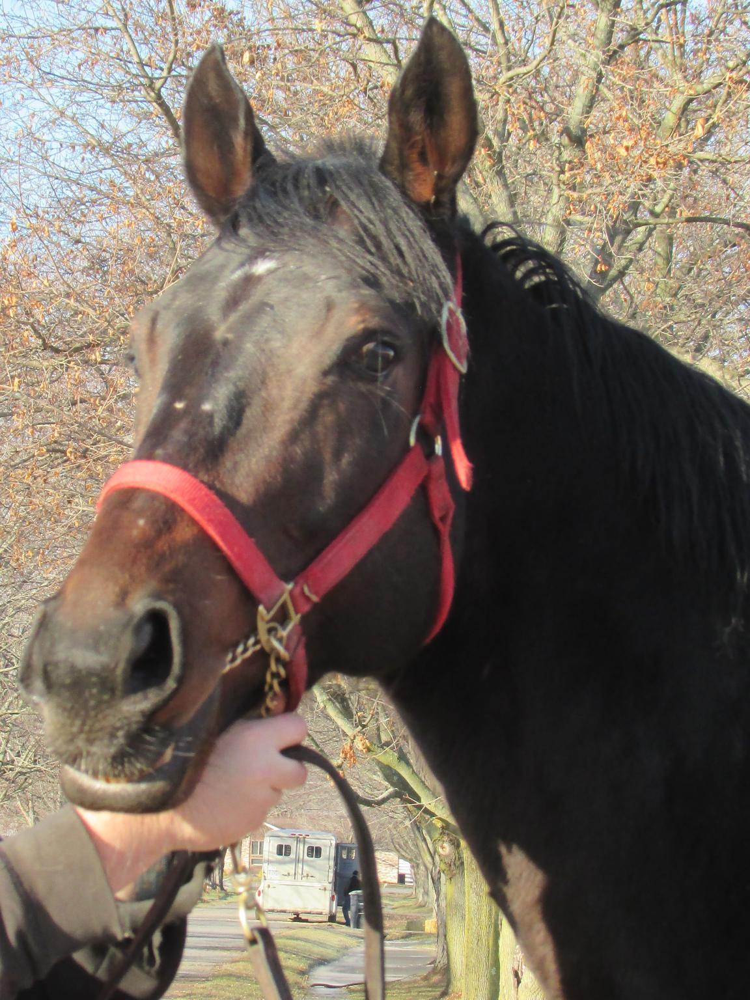
This gorgeous guy has a classy disposition and remarkable conformation, likely from his regal breeding. M Six is by Medaglia D'Oro out of a stakes winning mare and he sold for $240,000 as a 2 year old at the Fasig Tipton Florida sale in 2012! While his race record doesn’t quite match his breeding, he has had some successes on the racetrack with two wins in 2016, his only placing finishes in his outings for the year. He’s made it clear to his connections that his athleticism and class is best suited for a new discipline and our volunteers could see him going any direction!! His stunning, uphill build combined with his reasonable temperament and avid athleticism could make him a fabulous event horse or jumper prospect, but he certainly has the movement to get noticed in any sporthorse discipline. On a very cold, blustery day, he walked quietly out of his barn (where his equine friends were causing quite the ruckus) and was a gentleman to show off his gorgeous and ground covering movement for his jog video. We think he will really turn heads! He has a stocky build and combined with his height, he could be an excellent choice for a taller rider. He is another great prospect for the 2017 RRP! http://www.equibase.com/profiles/Results.cfm?type=Horse&refno=8861626®istry=T Asking $2,000 Contact Mike LeCesse 585-303-9467
As always, a pre-purchase veterinary exam is recommended.
Nail It, 2010, 16.1h, chestnut gelding
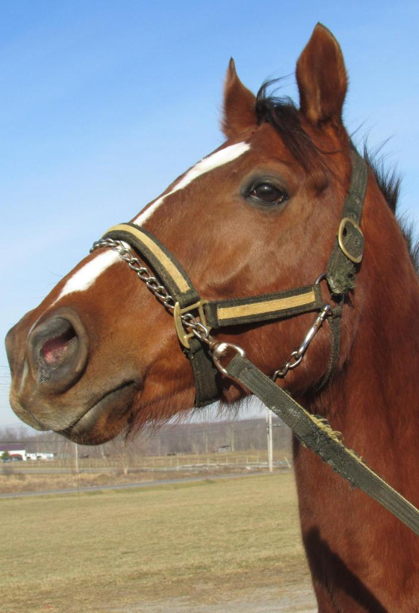
Kindhearted, and willing, yet athletic and capable are all descriptors used to define Nail It. In just 32 starts he earned more than $80,000, but his connections are ready to let him retire to his next career while he still has the soundness and heart of a champion. On a January day where the sun was enchanting for most off-season racehorses, Nail It showed his gentleman-like demeanor and his adorable personality. He is reported as sound with no stable vices. His connections are known for top notch care and concern for the long term well being of their retirees-- and Nail It will surely have a second career worth following. We could see him excelling in any discipline and he is the type that a junior or amateur could bring along with the help of a trainer. Our volunteers have met Nail It on a few occasions and each time he has been quiet, quiet, quiet. He is also a fabulous mover with a huge stride. Every time he has jogged out for us, he has done so with a loose lead and been level headed. He seems like a “been there done that” soul who is just an overall “good egg”. He has won our hearts over quickly! Nail It is another fabulous RRP prospect!
http://www.equibase.com/profiles/Results.cfm?type=Horse&refno=8819715®istry=T&rbt=TB Price: Asking $1,000. Contact Lisa Reed or Chris Progno. 585-303-0527 , text preferred. Leave a message if calling.
As always, a veterinary pre-purchase exam is recommended.
Backstage Pass, 2008, 17h, chestnut gelding with chrome
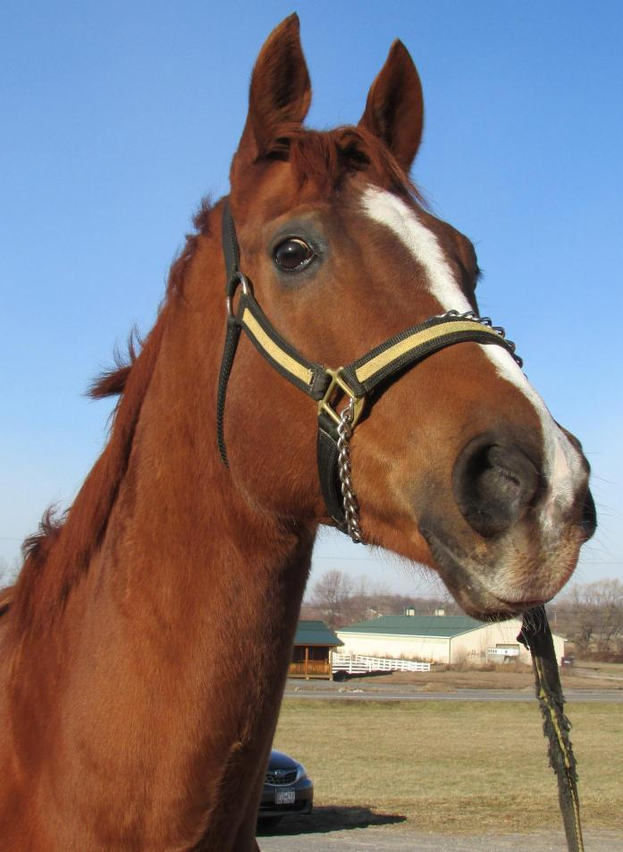
A big, sound gelding with good bone and excellent manners?? You surely have room for this guy in your barn. Our volunteers have admired this gorgeous guy for quite some time. This gorgeous and loveable gentleman has won over $70,000 in his time on the racetrack, and has shown his connections that it’s time to move on to a new career. He’s described as easy to work around, good to gallop and workmanlike on the track. He has a good brain and is mild mannered, despite his large stature. It was a brisk, sunny January morning for our meet and greet, and Backstage was most concerned with the candy supply from his handler. He is reported as sound with no stable vices. Backstage Pass has a huge stride and our “offseason” videos don’t do him justice-- check out his race videos to truly see this guy’s fabulous movement! We admired him a couple times each year and always were “wowed” with what a nice mover he was. Backstage Pass comes from a barn that takes excellent care of their horses. You can trust he has been pampered and kept in good flesh and care during his days at the track. His connections enjoy getting updates on their horses and love to follow their second careers. Again-- big, sound, geldings like this don’t last long! Call today to get your “Backstage Pass” to the RRP in Lexington this fall!!
http://www.equibase.com/profiles/Results.cfm?type=Horse&refno=8333792®istry=T&rbt=TB
Price: Asking $2,000. Contact: Lisa Reed or Chris Progno. 585-303-0527. Or 585-305-6014. Text Preferred. Leave a Message if calling.
As always, a pre-puchase veterinary exam is recommended.
Private Irving A, 2009, 16.3 Dark bay gelding
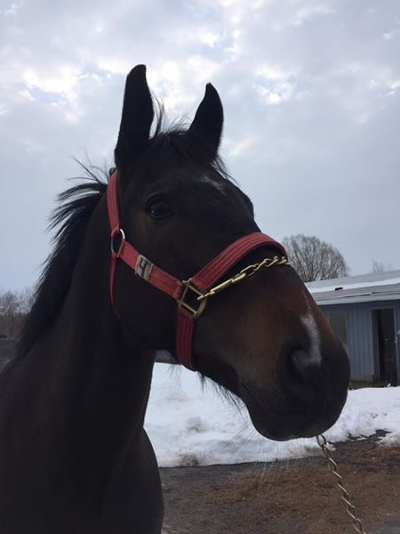
Located at the Finger Lakes Race Track in Farmington, NY. Hubba hubba!! Take a look at this build! This beautiful boy has earned over $131,000 in his 49 starts with 7 wins, 7 seconds, and 8 thirds. This athletic cutie has been a competitive contender every time he raced. Unfortunately, he has endured a minor injury, a slight tear in his left front superficial digital flexor tendon. Prognosis is excellent, a few months off and that should heal perfectly fine. Ultrasound images available. Pre-purchase exams welcomed. He is currently racing fit and will be fresh off the track with no re-starting/training of any kind. A clean slate for any direction project horse. He has a big muscular, thick bodied that would be ideal for a taller rider. He has an adorable face and a personality to match. He is a curious, calm, quiet, sweetheart. Good to work with and has great manners. No bad habits, no vices. Up to date on shots, shoes and teeth. He loads and ships perfectly, walks hooked up to a walking machine, quietly ties to the wall and/or wash bay and stands patiently. Good to groom and be around. He would make an excellent RRP horse! http://www.equibase.com/profiles/Results.cfm?type=Horse&refno=8596223®istry=T Price: $850neg. Contact: Jamie Boldt. Text preferred. 585-943-4298
As always, a pre-purchase veterinary exam is recommended.
Tomthebomb, 2014, 16.2 Bay Gelding
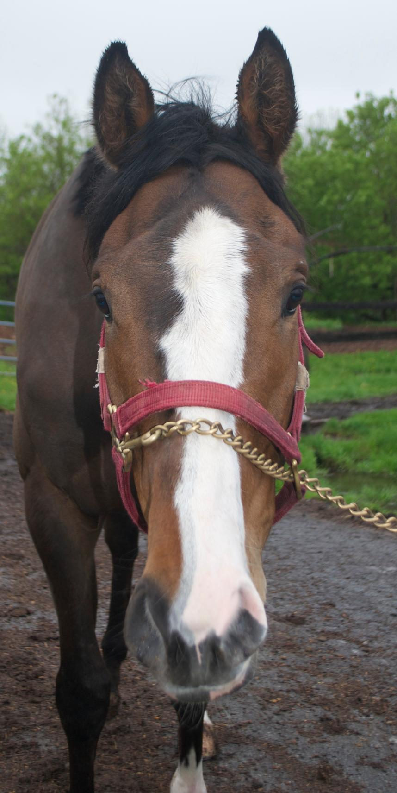
This adorable young guy has had a few workouts on the track but has shown no aptitude and was never raced. He is not tattooed. Tom is currently at the track, but has been wintered at the farm where he enjoys turnout with friends. Tom is described as a stall "runner" and would likely benefit from turnout time to help relax this behavior. A new home with ample turnout with a buddy would be a must for Tom. He has a gorgeous, uphill build with a long reaching walk and demonstrated correct, sound movement when he could be coaxed into trotting. On a blustery spring day when most horses were quite "up," Tom demonstrated a laid back, quiet, gentlemanly demeanor coming off the walker for his meet and greet. Adorable markings, a kind eye, and movement to boot? Don't miss this one, he surely won't last long!
http://www.equibase.com/profiles/Results.cfm?type=Horse&refno=9688575®istry=T&rbt=TB
$850 negotiable Contact Jamie Boldt 585-943-4298
As always, a pre-purchase veterinary exam is recommended.
West College, 2011 16.3h bay gelding
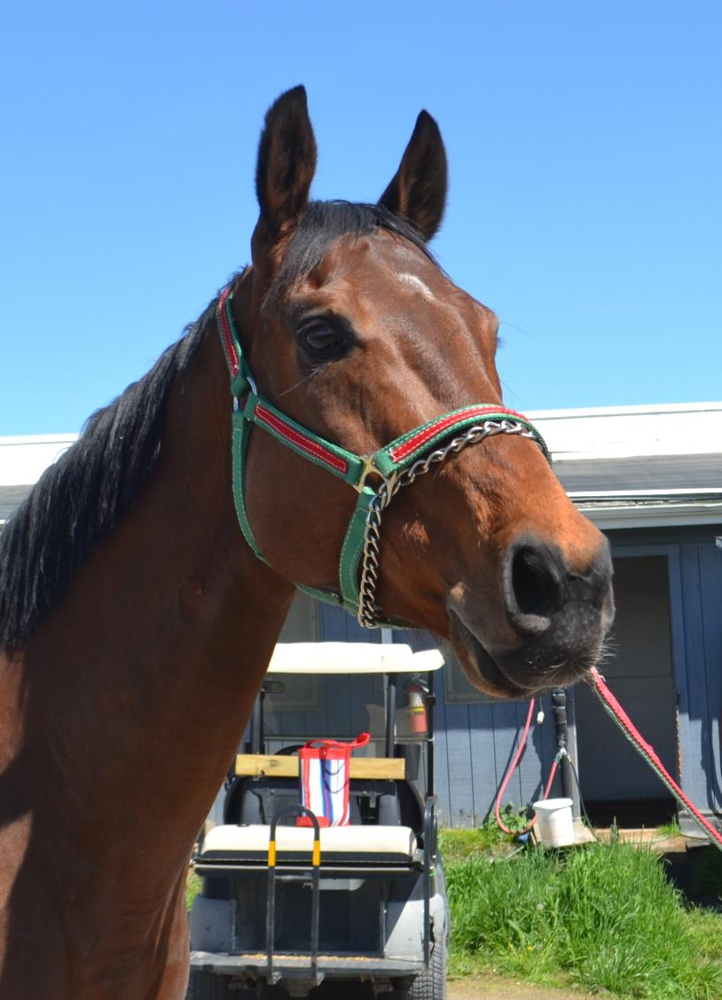
Pay close attention when everyone at the track tells you a horse is "amazing," "awesome," a "class act" ! West College is greatly admired by everyone at Finger Lakes, from grooms, exercise riders, pony riders, other trainers, the gate crew, to the paddock and racing office staff, as an all around big hearted, hard trying, classy, much admired horse -- the type that make thoroughbreds so coveted for their intelligence, heart, class, and athleticism. After a successful career through which he held up "as sound as a dollar," he recently raced on a mucky sloppy track and came back with a slight low bow in his tendon -- he has been on stall rest for two weeks, and the vet says with proper rehab he should be 100% for any discipline. This recent minor injury presents a rare opportunity for the discerning experienced horse person to get a big gorgeous gelding universally described as "awesome" for a true bargain price. His groom sang his praises as he showed West College to us -- he said he is a super good guy, never does anything wrong, is wonderful to work with. We admired his long legged, strong shouldered elegance, and his intelligent, alert expression -- he showed off what is called "the look of eagles" at the track. We asked for a walk video only -- due to the recent tendon injury, we did not want West College to jog on pavement. We did watch videos of some of his many winning races, and observed big strided athletic movement, with good push from behind. He is by Closing Argument, from the Valid Appeal/In Reality sire line, and his dam is from the Gone West line -- great sport horse breeding. A very good hone is essential for this very special , much loved horse. Price: $1,000 negotiable Contact: Joe Cabrera 315-704-8256
Race Record and pedigree: http://www.equibase.com/profiles/Results.cfm?type=Horse&refno=9175921®istry=T
As always, a pre-purchase veterinary exam is recommended.
Barbican's Mist, 2011 15.3h+ bay mare
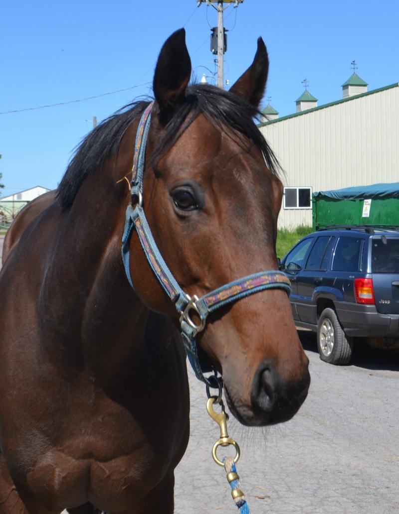
This stocky, solid bodied and beautiful lady could easily masquerade as a quarter horse or warmblood! Barbican's Mist was described by both her owner/trainer and the handler who showed her to us as a sweetheart, a very good girl who is nice to ride, nice to handle, and sound with no history of any injuries or issues. We admired her kind, sweet expression, her cute face and intelligent kind eye, and her perfect behavior -- she definitely won the hearts of our volunteers! The person who showed her to us has ponied her in morning training and to the races, and told us she is a kind sweetheart to work with -- a horse she wishes she had room for to take on as her own. Barbican Mist came to Finger Lakes and her current owner/trainer in late April, and we were told that she arrived with her feet in neglected overgrown condition. They pulled her shoes and trimmed her feet just two days before we photographed her, and she was still a bit foot sore moving barefoot on the pavement, so we got walk video only. But we watched videos of her winning races and observed lovely balanced, fluid and flat kneed movement at the gallop and trot. We think Barbican Mist could go in any direction -- best friend and trail companion, show hunter, lower level eventing, barrels, pleasure --whatever you want! She is a granddaughter of A.P Indy on her sire's side, and of Blushing Groom and Raja Baba on her dam's side. We think she is one of the bargains of this year or any year! Price: $500 Contact: Molly Hilderbrant 585-259-6351 Race Record and pedigree: http://www.equibase.com/profiles/Results.cfm?type=Horse&refno=9130720®istry=T As always, a pre-purchase veterinary exam is recommended.
Doctor Ralph, 2014 15.3h+ gray filly
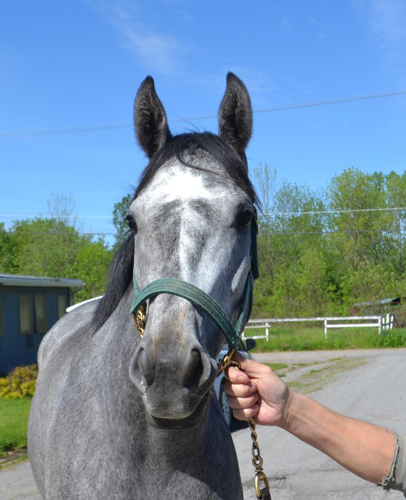
This beautiful, solid-bodied and well balanced homebred young daughter of Alphabet Soup, after only 5 starts, is letting her owner/breeder/trainer know that racing is just not her best game. But with her excellent conformation, very nice movement, good temperament, and great sport horse bloodlines, we think she can excel in many other disciplines. She is clean legged, described as sound, and she was perfectly behaved for her photo session. Jogged by one of our volunteers, she displayed very nice balanced movement with excellent behavior. We pegged her height as 15.3+ / 16h,. and she is likely to grow some more -- we think she will top out at over 16h. And with her solid body and strong shoulder, she will surely take up the leg of a taller rider. She was turned out all winter at her owner/trainer's farm, and he said she is very relaxed in that environment, and turns out well with other horses. He says she gets more nervous in the racetrack environment, although we did not see that in her demeanor with us, as she posed and jogged for us politely. Her sire, Breeder's Cup winner Alphabet Soup, is from the Cozzene/Caro sire line, much coveted in the sport horse world, and he is known for siring later maturing horses who are durable and good jumpers. Her dam is from the Buckpasser line, which is also known for durable, good brained sport horses. Young, sound, grays are very popular, so we recommend calling fast if you are seriously interested. Price: $2000 negotiable Contact: Ralph D'Alessandro 585-281-1029 or Adrianne D'Alessandro 585-281-1810
Race record and pedigree: http://www.equibase.com/profiles/Results.cfm?type=Horse&refno=9689256®istry=T&rbt=TB
As always, a pre-purchase veterinary exam is recommended.
Xena's Cat 2014 15.1 h bay filly
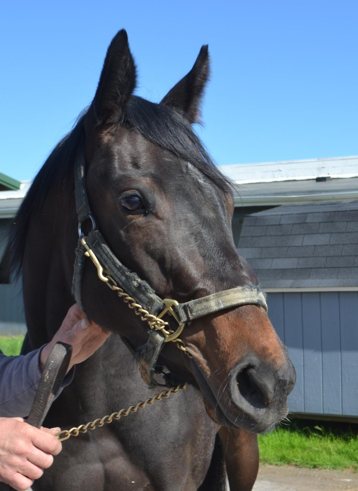
Homebred Xena's Cat is unraced and is not showing enough promise at this point in her career for her doting owners/breeders to continue on with her race training. Xena has a compact and very well proportioned build and, although she is likely to still be growing, may top out a tad taller but she won't be a big horse. Because she hasn't been in training for about a week she was quite on the muscle this morning but we are confident that, once off the track and in an environment that she prefers, she will settle right down and be a cute prospect for retraining your way. Xena is very good in turnout with her buddies and has had the winter turned out on her owner's farm. She is said to be without vices and is sound. We think this cute, well-built filly with a nice toe-pointing jog is a promising young prospect for just about any discipline.
Price $800
Contact Steve Ubbink 585-233-3501
http://www.equibase.com/profiles/Results.cfm?type=Horse&refno=9683910®istry=T
As always, a pre-purchase veterinary exam is recommended.
Secret Dixie Dance, 2009 16.1h chestnut mare: sold for racing
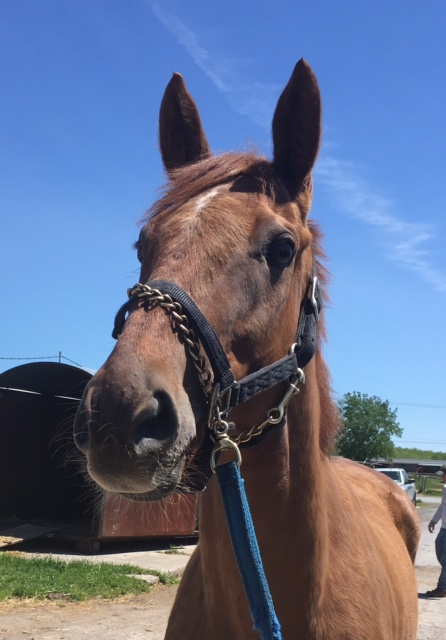
With her uphill balanced build, strong shoulder, kind eye, clean legs and nice movement, Secret Dixie Dance is a diamond in the rough with great potential for many disciplines. Look past her not yet shed out winter coat, and focus on how great she can look when filled out and a top line developed. She is very lightly raced, with only 11 starts and one win, so there's little wear and tear on her. She has spent most of her time hanging out at her owner's farm, and she has now let her trainer know that the track life is no longer what she wants. He said that she is excellent to handle and work with around the barn and in morning training, but she hates the starting gate. In a recent race, she got startled while loaded in the gate, and got some superficial scrapes on her hind legs that are healing well -- but now she definitely wants nothing more to do with the gate. So it's time to let her find a new career. She posed perfectly for her photos, jogged quietly showing good balance, and enjoyed the attention. We also watched the video of her winning race and observed a fluid balanced gallop with a flat kneed reach. With her nice movement and build, we can see her doing well in lower level eventing, hunter paces, the show hunter ring, or as an all around fun trail and pleasure horse. Price:$1000 negotiable Contact: Angel Lopez 315-719-4252
As always, a pre-purchase veterinary exam is recommended.
Rich Dalone, 2012, 15.2h Bay Gelding: new price!
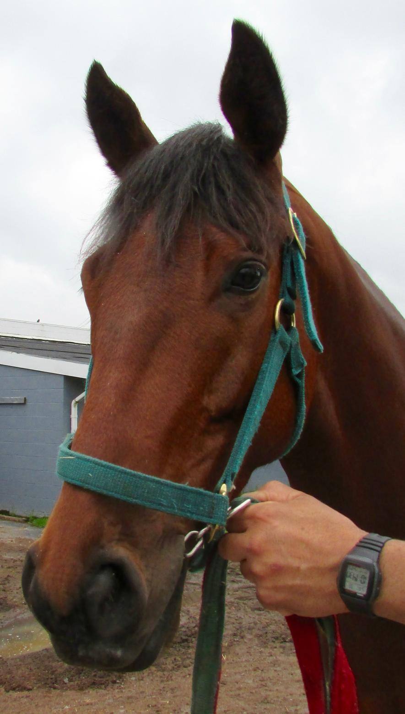
To paraphrase Shakespeare: “Though [he] be but little, [he] is fierce!” We are sure that Rich Dalone is no exception! Plain and petite, but this adorable gelding has so much to offer! He is reported as sound with no vices, and good to work around by those taking care of him each day. Don’t be fooled by his stature: this one’s pedigree packs a serious sport horse punch! He is by Frost Giant, who is a son of the great Giant's Causeway, who is well known for producing horses who can jump, and out of a mare by Gone West. His dam is by Quiet American, a sire coveted by eventers and hunter riders alike from the Fappiano sire line, out of a mare from Graustark/Ribot and Danzig lines. Looking for your next sporthorse, but don’t need the behemoth size for your stable? Rich Dalome is a stunning prospect with great potential!!
http://www.equibase.com/profiles/Results.cfm?type=Horse&refno=9354601®istry=T
Price: $1500 negotiable
Contact: Ralph D’Alessandro 585-281-1029 or Adrianne D’Alessandro 585-281-1810
As always, a pre-purchase veterinary exam is recommended.
Mr. Honey Badger, 2010 16.3 dk. br. (black) gelding
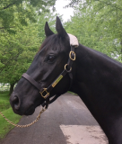
What a stunning big black hunk of sculpted, muscular, TB perfection! Our volunteers could hardly take our eyes off Mr. Honey Badger, proclaiming him one of the most gorgeous horses we have ever seen. We admired his solid boned balanced body, strong sloping shoulder, muscular topline, elegant head and kind intelligent eye. And his heart and athleticism and work ethic match his beauty -- he has won 12 races, with 8 seconds and 12 thirds out of 61 starts. His owner told us that he is just a great horse with a great mind, who will do anything that you ask him to do and who always tries hard. After his last race in late March, he was diagnosed with a small ankle chip. It was x-rayed, and those x-rays will be available to seriously interested potential good homes. The vet said that with a rest period, the chip should reabsorb and be no issue at all for future new careers in any discipline. Mr. Honey Badger was given a month of stall rest, had his shoes pulled, and then has been walking and trotting on the eurociser, and has also been enjoying turn out. It is recommended that he stay in light work for another month or so before starting more rigorous retraining. His caring owner, who so greatly appreciates all that this horse has done for them, does not want to bring him back to racing, but instead wants to find him a great new home where Mr. Honey Badger can excel in a new career. He was a perfect gentleman for his photo session, and despite being barefoot he jogged very nicely on the pavement, showing lightness and balance to his movement. His pedigree is ideal for sport/jumping: he is a son of Purim, who is by the great Dynaformer. His dam is by More Than Ready, who is from the Halo/Hail to Reason sire line, with Fappiano on her dam side. A very good home is essential -- serious inquiries only please. Price: $2500 Contact: John Tebbutt 585-230-5710
Race Record and pedigree: http://www.equibase.com/profiles/Results.cfm?type=Horse&refno=8880759®istry=T
Boy named Tish,2013, 15.3+h Bay Gelding
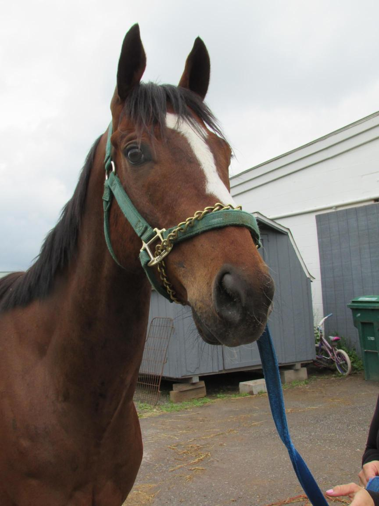
This handsome gelding has shown his connections that his passion for the racetrack is waning and they have decided to let him retire to his next career while he is able-bodied and healthy. He is reported to be sound with no stable vices and is an absolute sweetheart to work around in his stall. He is well mannered and loves the attention of his handler, but has proper manners as well. His pedigree should be of great interest for those looking for a great sport horse/jumping prospect. Devoid of Mr. Prospector or Storm Cat, he is sired by Eltish, who is a son of Cox's Ridge from the Turn-to sire line. Cox's Ridge is well known for producing good jumpers. Tish's dam is by Crusader Sword, a son of Damascus, another sire well known for producing durable offspring who can jump. We are confident that with his adorable personality and his genetic predisposition to jump, Tish will surely make his next owners a fabulous sporthorse mount in any discipline!
http://www.equibase.com/profiles/Results.cfm?type=Horse&refno=9509686®istry=T
Price: $2500neg.
Contact: Ralph D’Alessandro 585-281-1029 or Adrianne D’Alessandro 585-281-1810
As always, a pre-purchase veterinary exam is recommended.
Battle Notes, 2011, 16.2h Bay Gelding
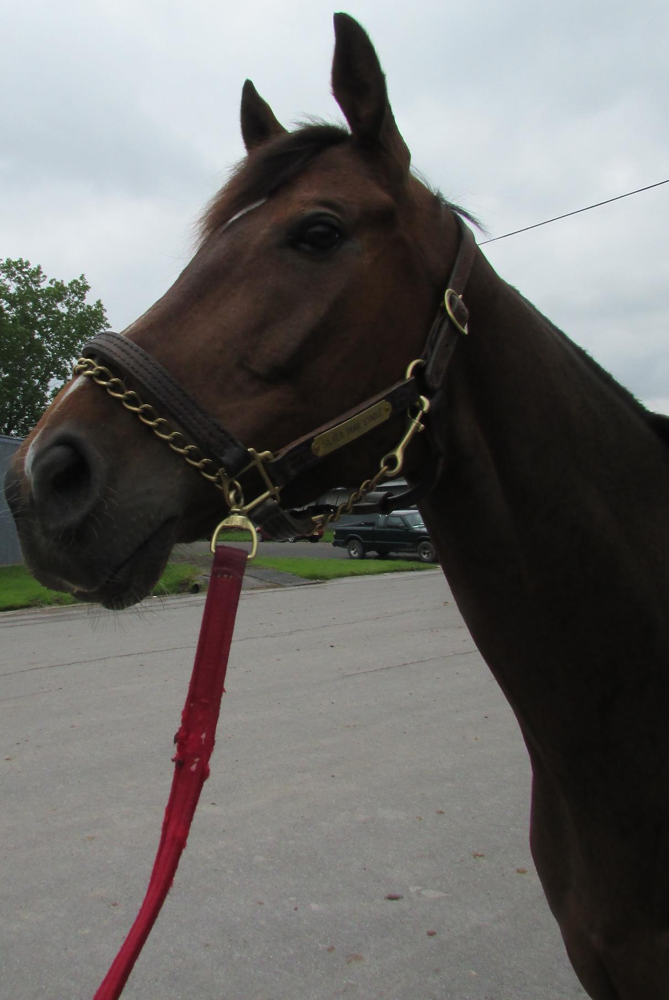
Looking for tall dark and handsome? Look no further!! This adorable gentleman’s photos just don’t do him justice. Battle Notes has keen look about him: an intelligent eye and adorable facial markings, and an uphill, correct conformation that surely has sport horse shoppers drooling! He is reported as sound with no stable vices. He is by Read the Footnotes, who is from the Smoke Glacken/Two Punch sire line coveted by eventers. We have placed several Read the Footnotes offspring over the last few years, and the people who have been the lucky purchasers of them report to us that they are great horses who learn fast, are brave, and are excellent jumpers. We are confident that Battle Notes will be the same. Call today to bring this class act into your barn!
Price: $2500neg.
Contact: Ralph D’Alessandro 585-281-1029 or Adrianne D’Alessandro 585-281-1810
http://www.equibase.com/profiles/Results.cfm?type=Horse&refno=9125290®istry=T
As always, a pre-purchase veterinary exam is recommended.
Gregg’s Beauty, 2012, 16h, Bay Mare
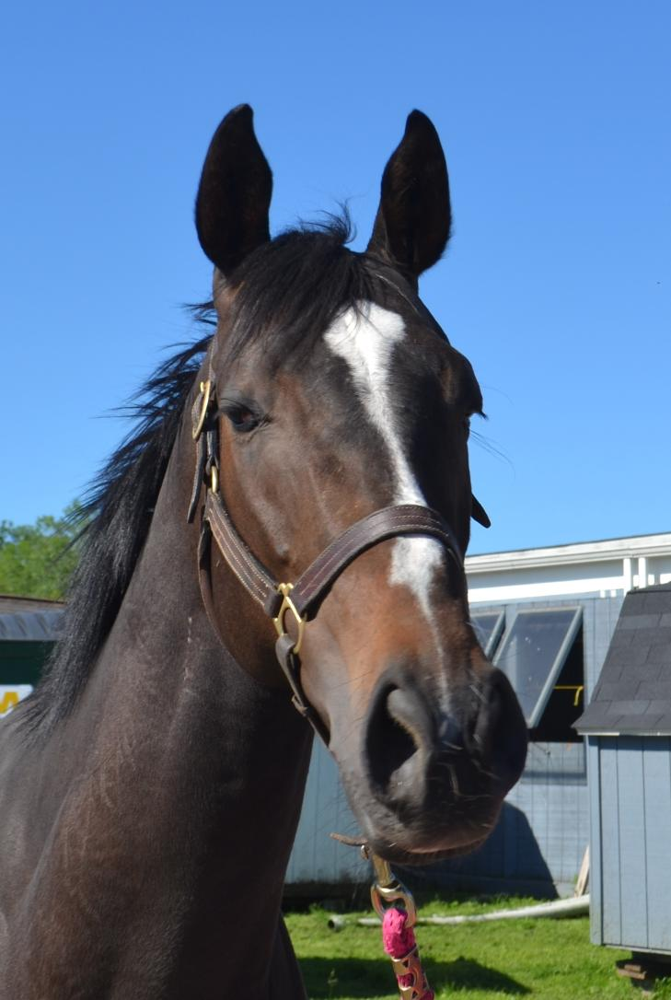
Gregg’s Beauty really is a beauty! This gorgeous girl came to Finger Lakes this spring and won her first two starts here! She has earned over $50,000 in her 22 starts with 3 firsts, 3 seconds, and 1 third. Unfortunately she recently fractured her splint bone, an injury that usually has a good prognosis. Gregg’s Beauty has a great uphill build that should appeal to a rider looking for a mount for jumping. Her handler reported she is good to work with. She is by Ready's Image, a son of More than Ready, from the Halo sire line, and whose dam is from Icecapade, Best Turn, and Majestic Light lines. Gregg's Beauty's dam is by Dayjur, a son of Danzig, and out of a mare from Majestic Prince and Ribot lines. These are all stout pedigree lines popular in the sport horse world.
http://www.equibase.com/profiles/Results.cfm?type=Horse&refno=9320460®istry=T
Price: $500neg Contact: Ralph D’Alessandro 585-281-1029 or Adrianne D’Alessandro 585-281-1810
As always, a pre-purchase veterinary exam is recommended.
Balac, 2012, 16h, Bay Gelding
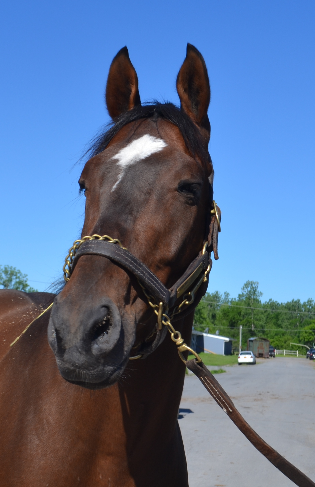
Stunning is a good word to describe Balac! This dappled beauty is a real head turner and his handler said he is a love that is good to work around. He is lightly raced with only 8 starts. In his last start, Balac sustained a slab fracture to his knee. This injury typically has a good prognosis for return to sport. It is reported that he needs 3 months of stall rest before a rehab program to return to riding. His trainer will release X-rays and veterinary assessment to serious parties. Balac stood very quietly and seemed to enjoy soaking up the sun during his photo shoot. His handler reports this is typical of his behavior and that he is a laid back guy, even while on stall rest. He is by Purge out of a Gulch mare, so he should attract sport horse riders. http://www.equibase.com/profiles/Results.cfm?type=Horse&refno=9350333®istry=T&rbt=TB
Price: $500neg Contact: Ralph D’Alessandro 585-281-1029 or Adrianne D’Alessandro 585-281-1810
As always, a pre-purchase veterinary exam is recommended.
Sweetwater Blue, 2012, 15.3h, Bay Mare
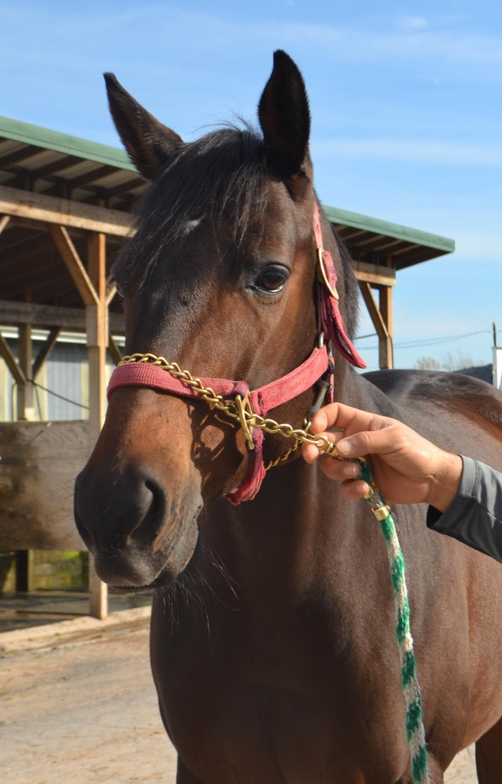
Our volunteers were totally blown away at how gorgeous this unraced girl is. Her bay dapples dazzled in the bright sun, which Sweetwater Blue seemed to enjoy modeling in. She has a beautiful, dishy face. Her trainers described her as a sweet girl who they are very attached to. They report she really bonds to her handler and is very affectionate, which is certainly what we saw today. A year ago she sustained a bowed tendon which has now healed. It was recently ultrasounded and the vet says she will be fine for any discipline. She is sound and was a nice mover at the jog (albeit a bit enthusiastic). We could see her really excelling as a dressage mount, or in the show hunter ring. Sweetwater Blue has a very correct build with a nice topline. She has a big barrel and is clearly well fed and cared for. She looks ready to walk into the hunter conformation classes! Her trainer reports she has no stable vices. She is by Golden Missile out of a Runaway Groom mare. Her trainers would love to see her be a broodmare, but an exceptional home is most important. Price is negotiable to the best of homes. http://www.equibase.com/profiles/Results.cfm?type=Horse&refno=9470470®istry=T&rbt=TBFin
Oct. 2017 Photos:
Price: $750 negotiable Contact: Diana Hernandez 585-406-2455
As always, a pre-purchase veterinary exam is recommended.
Lucci the Lion, 2010, 15.3h, Bay Stallion
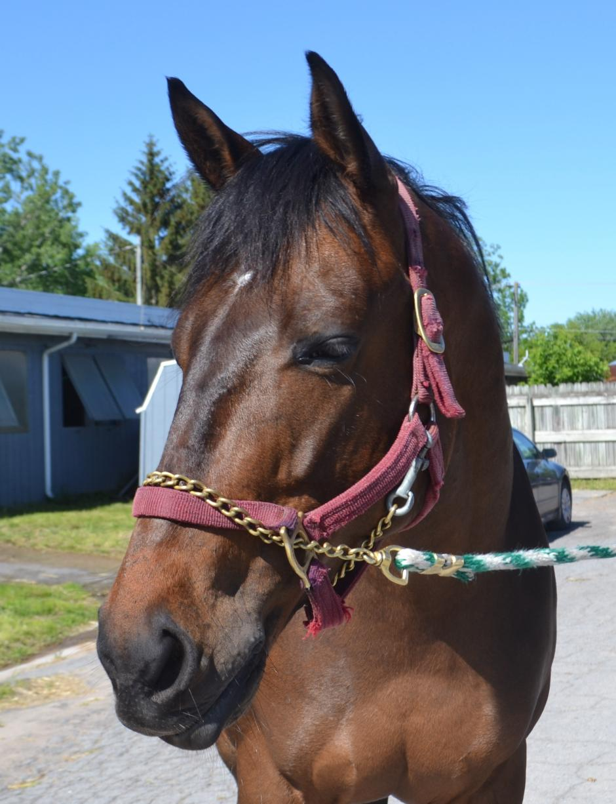
This sweet boy is so deserving of a forever home where he will be treated like royalty. Lucci the Lion was a $65,000 two year old, so someone saw quality in him at a young age. He has raced in various tracks along the east coast and even has a win at Saratoga. He has earned over $171,000 in his 57 starts with 5 firsts, 10 seconds, and 9 thirds. His trainer is ready for him to retire happily into a new career. Lucci the Lion stood perfectly quiet for his photo shoot despite horses acting quite excitedly around him. His trainer speaks minimal English, so it was difficult to get lots of details on him, but another trainer in the shed row reported that Lucci is a barn favorite. His ankle was recently blistered so we will try to get a video at a later date. Geldings surgeries are relatively cheap and easy and well worth the investment. Finger Lakes Finest has a gelding incentive fund for Finger Lakes horses going to approved homes. http://www.equibase.com/profiles/Results.cfm?type=Horse&refno=8871913®istry=T Price: $1500neg Contact: Sugar Rohena (contact person for trainer who does not speak English) 585-412-3678
As always, a pre-purchase veterinary exam is recommended.
Fly Me, 2014 16.2h+ bay gelding with chrome
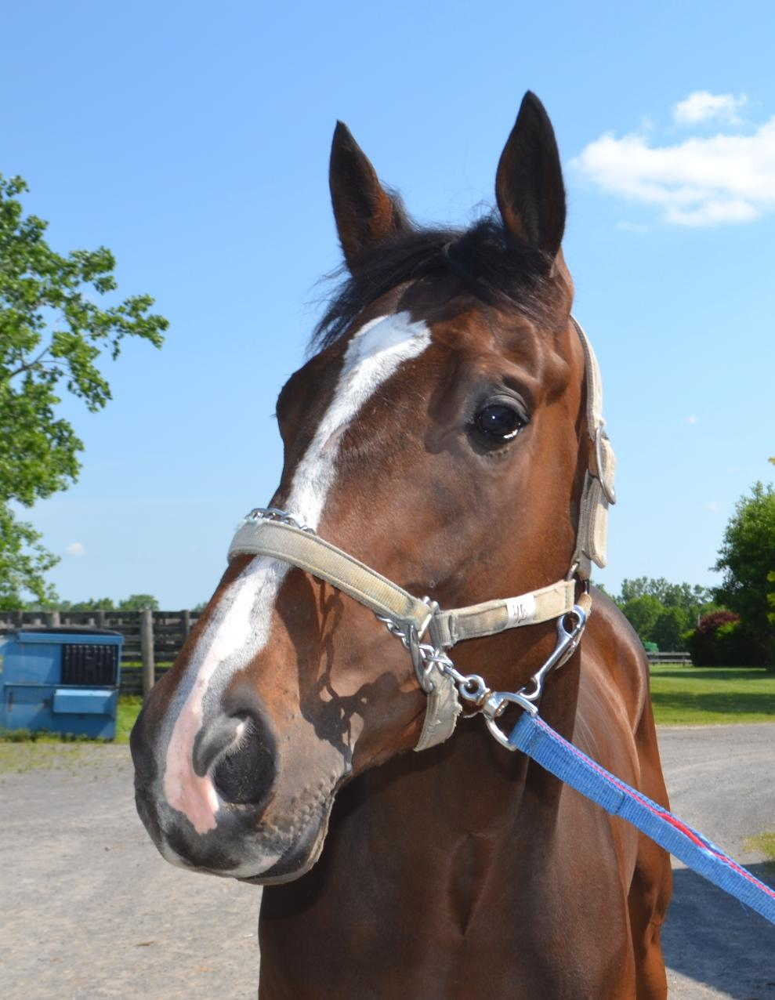
This gorgeous big young son of Freud had our volunteers reaching for superlatives. Stunning, fabulous, droolworthy... you get the idea. Fly Me is described as "sound, sound, sound," but just not showing enough racing talent. He has won one race in his 10 starts, but since that maiden win last year, he has shown little interest in being competitive as a racehorse. His owner/breeders do not want to persist with him on the track, when he has such unlimited potential to excel in eventing, or in the hunter/jumper ring. Fly Me has a balanced uphill build, good bone, good feet, a good mind, very clean legs, and he is a beautiful mover -- this one ticks all the boxes! Since he is only three, he will surely grow some more, and should top out at or above 16.3h. When he walked and jogged for his video, we saw a huge overstep to his flowing walk, and a big strided but light and balanced trot nice enough to get attention in the show hunter or dressage arena. The assistant trainer who showed him to us says he is a sweet horse, good to handle and well behaved to ride. She said he is strong to gallop, but never gives his rider any problem. Due to his young age, big size and stride, forward gallop, and huge sport potential, we recommend that only experienced riders interested in serious sport or showing consider Fly Me. If you are looking for an upper level event prospect or an A circuit hunter/jumper prospect, Fly Me is for you! His pedigree is excellent for jumping. His sire Freud is very popular with eventers and people looking for good jumpers; his stakes winning dam is by Belong to Me, a son of Danzig. Price: $2500 Contact: Michelle Tasso 585-472-2804. Please do not contact after 8 pm EST. Text, or leave a message if you call, since she is often on a horse or busy at the barn, and will check messages.
As always, a pre-purchase veterinary exam is recommended.
Heresmissthelmaann, 2011, 16.2+ GR/RO mare
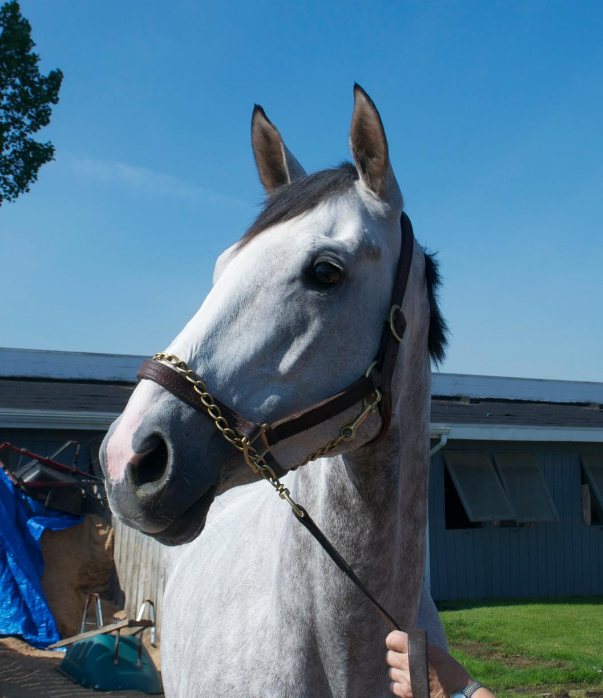
This gorgeous girl is what everyone says they are looking for: big, grey, sound, clean legged, and with a good personality. We strongly suggest calling the trainer quickly (but politely) as we feel she will sell quickly. “Thelma” has earned $17,000 in her 21 starts and just isn’t competitive anymore, so her trainer would like to move her on while she is still sound. Her trainer reports that Thelma’s siblings have gone on to be successful jumpers. She certainly screams “sport horse” because of her build. Thelma would be best suited for a tall rider as she is easily 16.2 and has a very thick, uphill build. She stood politely in the road for her pictures and jogged quietly despite not working in a couple days. Her trainer reports she has no vices. She is by Here’s Zealous out of an El Señor mare. Serious inquiries only. http://www.equibase.com/profiles/Results.cfm?type=Horse&refno=9133667®istry=T Price: $3500 Contact: Phyllis Shetron 585-317-8892
As always, a pre-purchase veterinary exam is recommended.
Super Nicky, 2011, 16.2 Chestnut Gelding
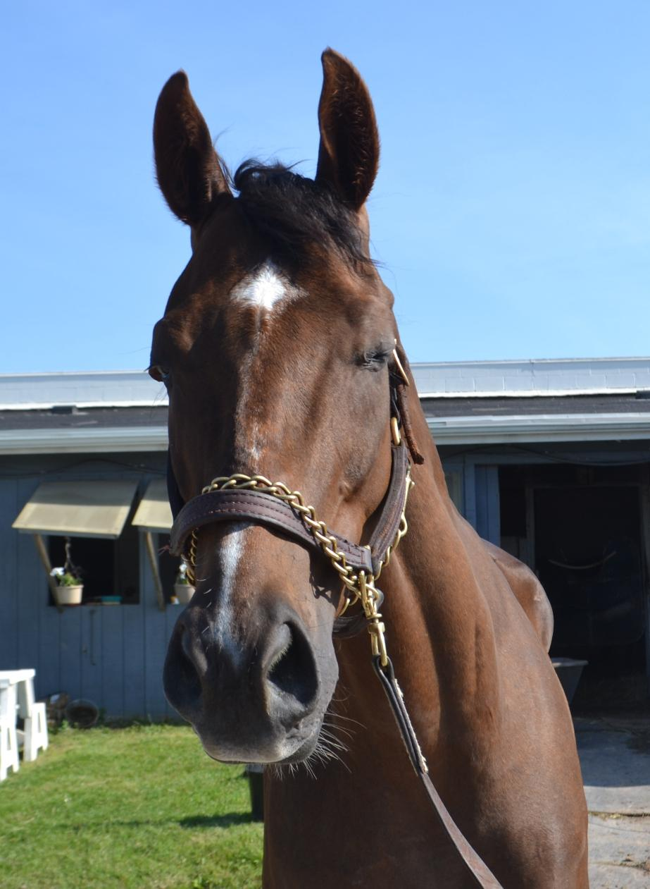
Super Nicky’s trainer couldn’t find enough good things to say about him. She reports he is super sweet, easy to work around, with absolutely no vices. She is confident that he will make his next owner very happy. He has earned over $117,000 in his 33 starts with 6 wins, 3 seconds, and 6 thirds and he is now ready for a well deserved racing retirement. “Nicky” has a gorgeous uphill build with correct conformation and a nice natural top line. He should be appealing to taller riders who need a bigger horse to take up their leg. Nicky had a chip removed from his knee over the winter. He has come back to training but his trainer does not want to push him. He would be a perfect mount for someone looking for a quiet horse with an easy going personality for dressage, pleasure riding, or lower level hunters/jumpers. Nicky demonstrated his laid back and friendly personality during our photo shoot and stood perfectly still even with the hustle and bustle of other horses heading to and from the race track. He is by Utopia out of a Salt Lake mare. Nicky has gorgeous dapples that shine from good care. He comes from a shed row of quality animals that receive impeccable care. He could be the bargain of the meet! http://www.equibase.com/profiles/Results.cfm?type=Horse&refno=9116820®istry=T&rbt=TB Price: $700neg Contact: Phyllis Shetron 315-667-0171
As always, a pre-purchase veterinary exam is recommended.
Frosty Cohen 2014 15h chestnut filly: new price!
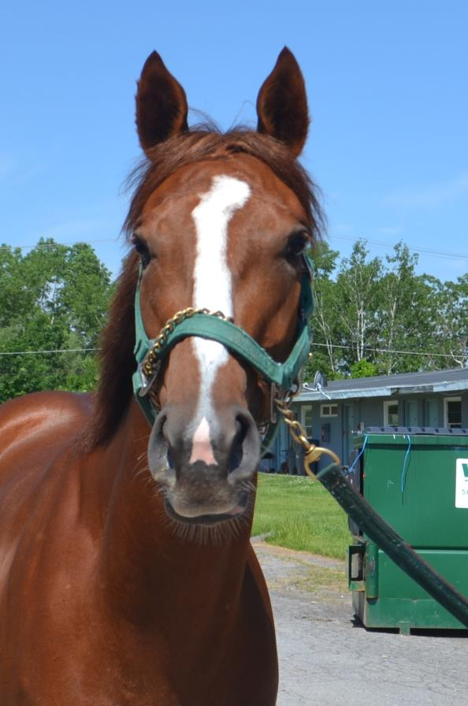
If you're a fan of little, redheaded fillies, here is Frosty Cohen, by the son of Giant's Causeway, Frost Giant. She is small in stature but big bodied with a large shoulder and chest and a gleaming summer coat. After 4 starts and no in-the-money finishes, her connections have asked us to help find her a home in a discipline that suits her better. She is reported to be sound, sweet and quiet and she jogged quietly on a loose lead. We know that not everyone wants or needs a 16+ hand mount and for those of you who like them little, this adorable youngster is an exciting blank slate. We have a hunch Frosty Cohen's demeanor dispels the chestnut mare myth!
Price $1000
Contact Adrianne D'Alessandro 585-281-1810
As always, a pre-purchase veterinary exam is recommended.
As always, a pre-purchase veterinary exam is recommended.
October Blaze, 2014 16.1h dk bay filly: new price!
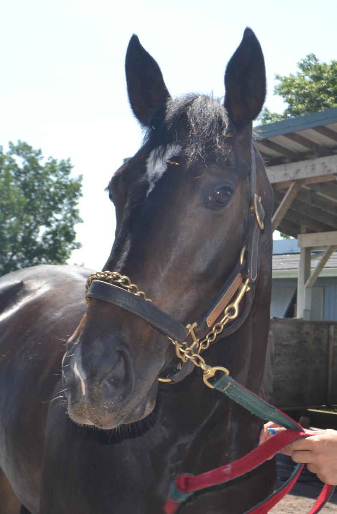
Young, sound, blooming good health, just enough chrome and solid bodied: there is nothing not to like about this beautiful young filly. She is described as clean legged, sound, and quiet but she has absolutely no penchant for racing! She is lightly raced with only 8 starts, and she has yet to win but has 3 in the money finishes. We especially loved her strong shoulder and soft, kind eye. Her cute balanced movement adds to the attractive package. Her sire Smart Bid is a son of Smart Strike, and her dam is by Vicar, from the Wild Again/Icecapade sire line. This youngster is a clean slate for the discipline of your choice and we suspect she will generate a lot of interest, so don't wait to make a call.
Price $1500 neg.
Contact Adrianne D'Alessandro 585-281-1810
http://www.equibase.com/profiles/Results.cfm?type=Horse&refno=9710312®istry=T&rbt=TB
As always, a pre-purchase veterinary exam is recommended.
Congaree Drive, 2014, 16h Bay Filly
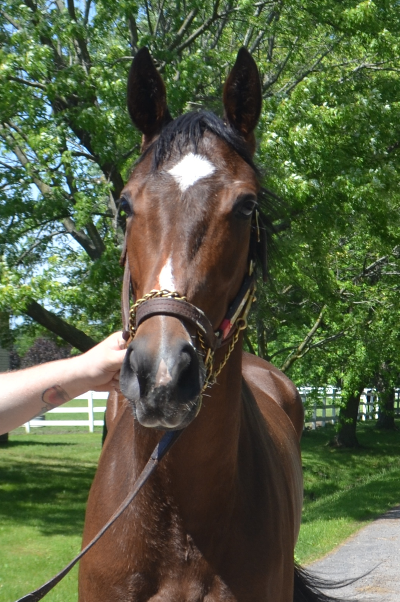
This well built youngster is one of the new guys to her trainer’s barn. She is lightly raced with only 7 starts, two of which were wins. She is described as well behaved and likable, with no vices. At only 3 years old, she will continue to grow up and fill out more, so he may be suitable for a taller rider. Her trainer recently discovered a small knee chip that is causing him some soreness after racing. X-rays are available to interested parties (please note: we do not have them. You will need to contact the trainer). She would like to move him onto a new career where she will be better suited, perhaps after some turnout to let her finish growing a bit. She is by Congaree out of a Yes It’s True mare. This could be one of the bargains of the meet! Price: $500neg Contact: Mike LaCesse (585) 303-9467 http://www.equibase.com/profiles/Results.cfm?type=Horse&refno=9690777®istry=T
As always, a pre-purchase veterinary exam is recommended.
As always, a pre-purchase veterinary exam is recommended.
Cassidy’s Call, 2012, 16h Chestnut Mare
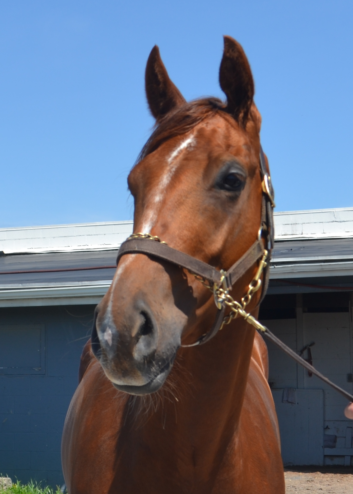
Dapples, dapples, dapples! This girl has been lovingly cared for by the same breeder/owner for her entire life and it shows the second you look at her. Cassidy is named after the breeder’s daughter, so finding a good home for her is a must. She is unraced, although has trained at the track. Her owner feels her mind is not in the game for racing, so they would like to see her move on to a career she can be more competitive in. He describes her as a smart girl that can be high strung. He sees her being successful as an eventer or jumper with a competitive rider. He also reports that although Cassidy can be high strung on the track, she does settle down at the farm and appreciates turn out time. She was well behaved and respectful of her handler during our photo shoot. She is sound and has no vices. Another bargain of the meet! She is by Noonmark out of a Strategic Mission mare. http://www.equibase.com/profiles/Results.cfm?type=Horse&refno=9326825®istry=T Price: $1000neg Contact: Roy Taylor 401-465-9267 (text preferred)
As always, a pre-purchase veterinary exam is recommended.
Darn That Trip 2009 16.2+ gr/ro mare
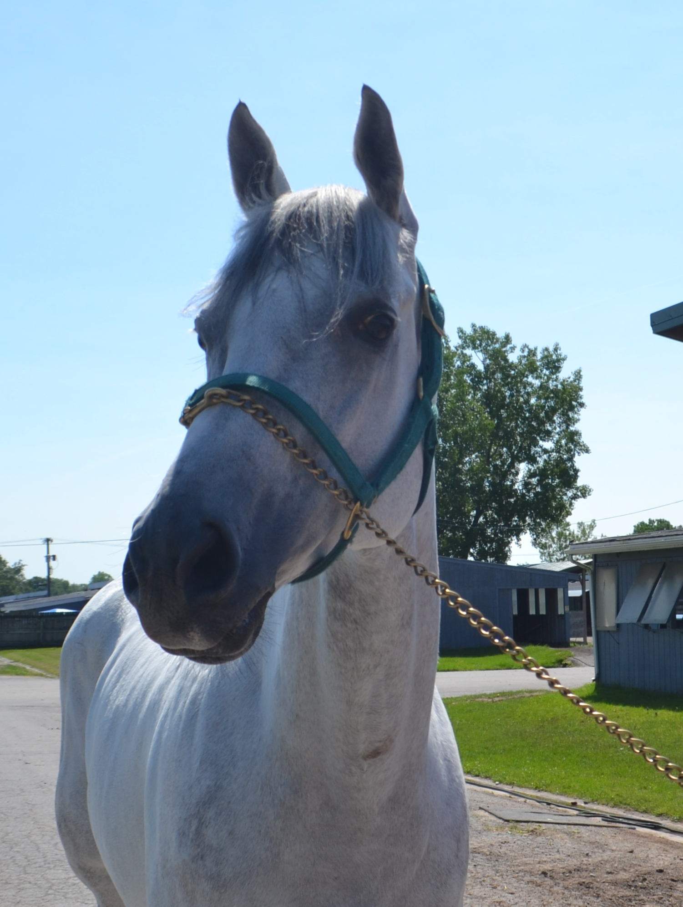
We know that gray/roan horses typically garner a lot of enthusiasm and interest from our faithful followers, and we expect the same for this lovely, classy mare who oozed elegance. She was perfectly quiet and cooperative while standing up for her pictures and we couldn't help but comment on her substantial heft: this is one big mare! Her huge neck and shoulder are proportional and her muscled hind end suggests a lot of power behind. Trippi (her sire, but it's a good nickname for her!) has been a better than average racehorse and we think she can fall into the category of "warhorse". With 44 lifetime starts starting at the NYRA circuit and then other east coast tracks, she has recorded a remarkable record of 8 wins, 6 seconds and 5 thirds. She has some minimal ankle rounding but it does not affect her soundness. She is described as quiet with great ground manners. With her super successful record, this mare has demonstrated heart and a strong work ethic. The connections are now ready to give her a much deserved retirement from the rigors of racing.
Price $2000
Contact Adrianne D'Alessandro 585-281-1810
http://www.equibase.com/profiles/Results.cfm?type=Horse&refno=8543643®istry=T
As always, a pre-purchase veterinary exam is recommended.
Trappe 2013 16.1 h bay gelding
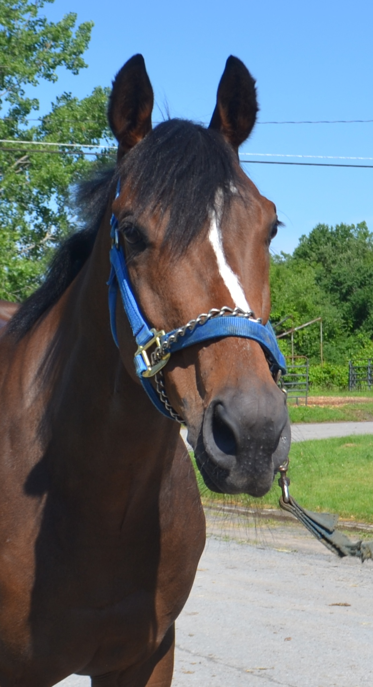
A lightly raced gelding by a son of hot sire Tapit (his son, Tapwrit, just won the 2017 Belmont Stakes), this beautiful, young, sound gelding is as sweet and friendly as they come. His trainer described him as super sound, mellow, a pleasure to work around and a dream to gallop. We loved his cute, dishy face and bright expression. He is very lightly raced with only 8 starts and one win and no other in the money finishes, so time to move him along. We found more reasons to love him the longer we socialized with him but then, when we watched him jog for his video...wow! This guy is a seriously nice mover, light on his feet with tons of suspension and reach. We can only imagine the potential this youngster has in the sporting discipline of your choice, but he has all the goods for being a standout with his flash and movement. Don't drag your feet on this reasonably priced standout.
Price $2500
Contact John Tebbutt 585-230-5710
http://www.equibase.com/profiles/Results.cfm?type=Horse&refno=9536080®istry=T
As always, a pre-purchase veterinary exam is recommended.
Dancing Rico 2012 15.2 hand dk bay gelding
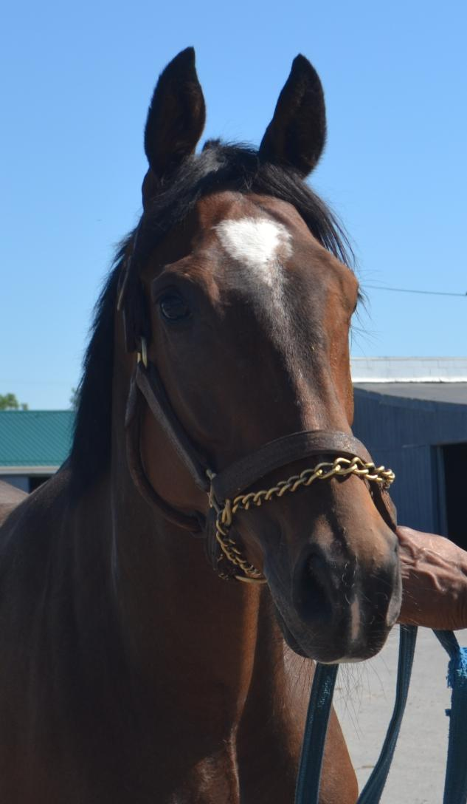
For all of the Disco Rico offspring fans out there, here is your boy! Although he isn't large in stature he has notched a pretty decent race record with 29 starts, 4 wins, 5 seconds and 2 third place finishes. He was very quiet and friendly while the racetrack life bustled around us and his trainer stated that he is a good boy and easy to work with. He also reported that he thinks he may have a chip in his left front knee although it has not been xrayed. At the jog, he showed some body soreness and didn't stride out, but turnout and some chiropractic could work magic.With some TLC, ulcer treatment, hoof care and letdown, this hardknocking young gelding could be your project to finish your way!
Contact Ortis Henry 585-364-4711
Price $500
http://www.equibase.com/profiles/Results.cfm?type=Horse&refno=9328258®istry=T
As always, a pre-purchase veterinary exam is recommended.
Stopthefever 2008 16 h dk bay gelding
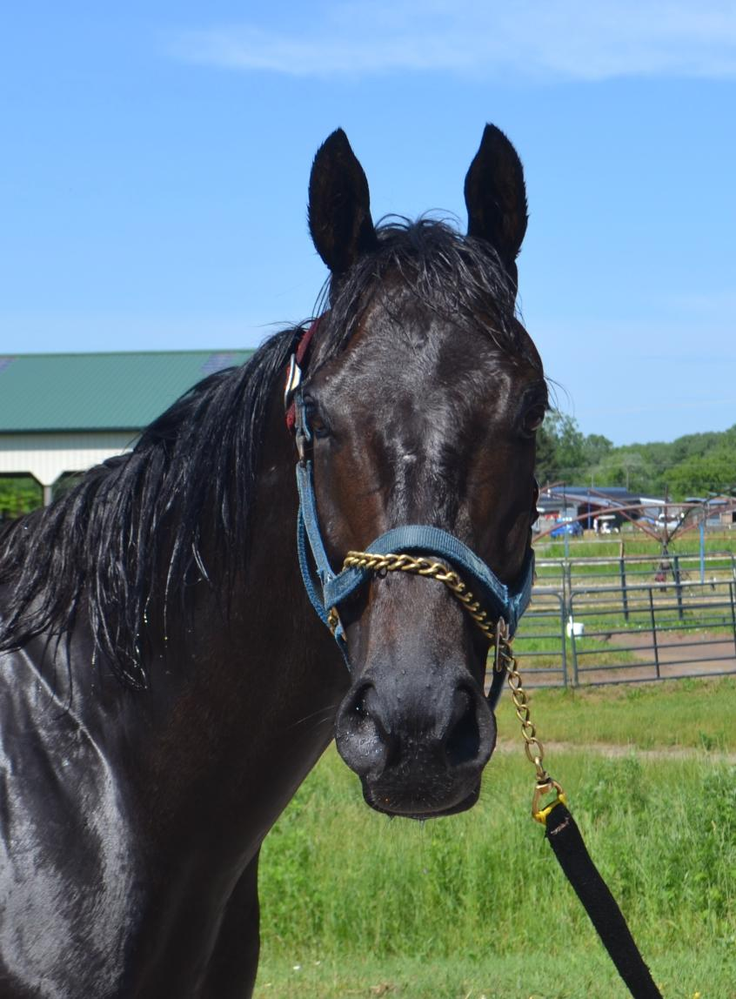
This dashing fellow definitely falls under the category of "warhorse" and then some. Stopthefever has had a very successful career as a racehorse with more than 50% in-the-money finishes: that is a testament to his physical ability and true thoroughbred heart. With 67 starts, he has racked up an amazing 15 wins, 12 seconds and 10 thirds, up and down the east coast and, this year as a 9 year old, he is tapering off and looking for a safe landing with the right person who isn't put off by his age or number of starts.
Price $800
Contact Eddie Maver 786-285-2047
http://www.equibase.com/profiles/Results.cfm?type=Horse&refno=8347482®istry=T
As always, a pre-purchase veterinary exam is recommended.
Frost N Fire, 2014 17 h chestnut gelding
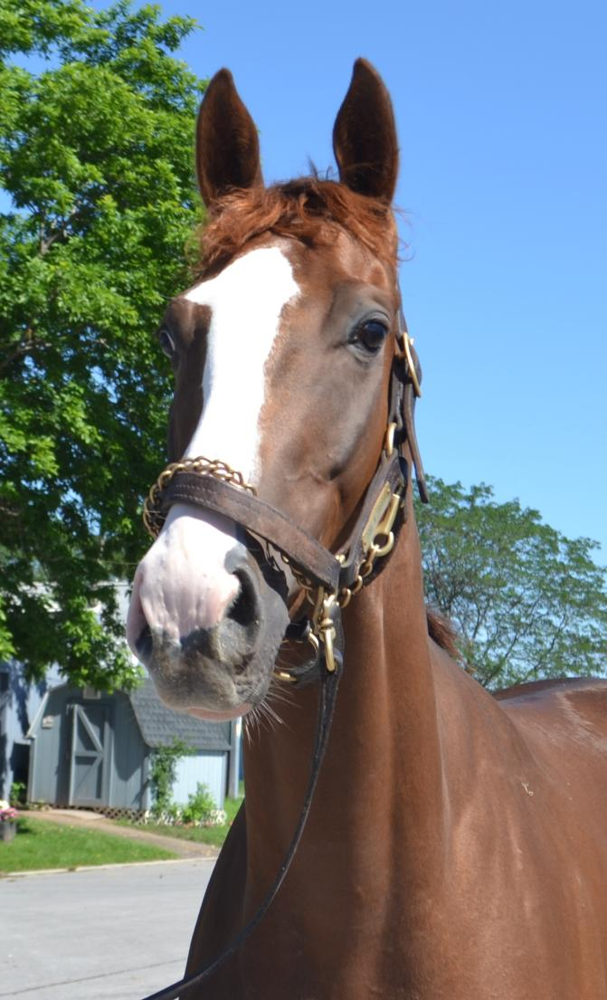
Our last listing of the day was just as nice as all the other beauties we photographed, and our third gorgeous gelding by Frost Giant! This towering boy seems to be all legs and his racing performance hasn't been promising, probably in part because of his size and his youth. His trainer explains that Frost N Fire was a bit wary of everything when he first arrived at the track but has done a complete turnaround and is now a personable and eager youngster who loves attention and peppermints, not necessarily in that order! He further tells us that he has a wonderful, even-keeled temperament and is every rider's favorite horse to gallop. He is reported to be completely sound and his owner is only stopping on him because he is reducing his stock. We think he has tremendous potential and will get a lot of interest, so don't wait on making a call.
Price $3000
Contact Dylan Clarke 352-286-7559
http://www.equibase.com/profiles/Results.cfm?type=Horse&refno=9720621®istry=T&rbt=TB
As always, a pre-purchase veterinary exam is recommended.
Victory Tango 2014 16.1 h bay filly
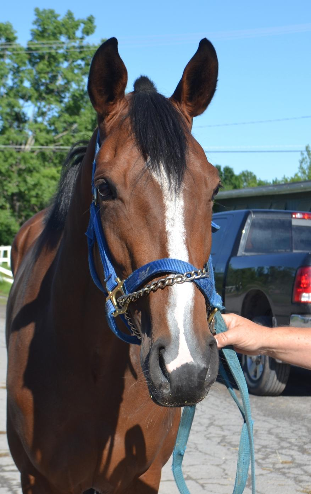
Victory Tango is not only one of the chillest and sweetest fillies you could wish for, she is also a young, sound filly with a dream pedigree for sport. She was bred to go long on the grass so her lack of success sprinting on the dirt is no surprise. Her sire, Simmard, is by Dixieland Band out of a Spectacular Bid mare. Her dam sire, Whywhywhy, is a grandson of Gone West and Quiet American and her dam is out of a Roberto mare with Nijinsky and Ribot/Graustark in her pedigree. During her photo shoot she was quiet and sweet and her trainer told us that she is sweet and nice to work with and we saw that in the time we spent with her. He did divulge that she is not a fan of the farrier, so that may be something that needs to be worked through, but a change of personnel with a different truck will probably do the trick. He also said that she is great to gallop, has no vices and is absolutely sound. We loved her soft, kind eye and solid bodied beauty. This youngster has all the goods to go in just about any direction, but we think she really wants to be a hunter!
Price $2500
Contact John Tebbutt 585-230-5710
http://www.equibase.com/profiles/Results.cfm?type=Horse&refno=9666606®istry=T&rbt=TB
As always, a pre-purchase veterinary exam is recommended.
Jazz Player 2011 16.2 chestnut gelding
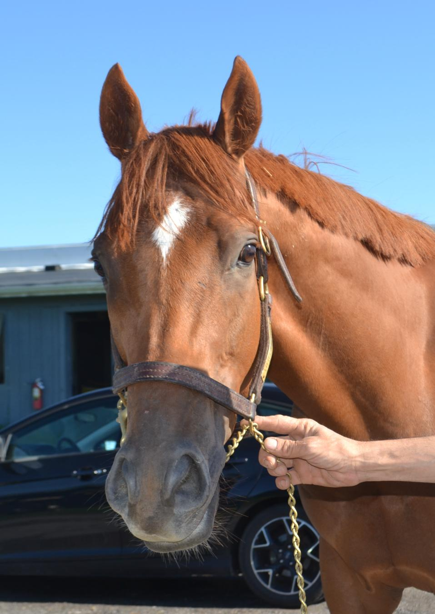
Do you wonder what an almost half a million dollar two year old looks like? He looks like this gorgeous and regally bred son of Malibu Moon who sold for $450,000 at his two year old in training sale. While he has not performed to his price tag, he has been a useful racehorse, with 3 wins and 13 in the money finishes in 33 starts. He won earlier this year, but lately has not been as competitive. His trainer dotes on her horses and always moves them on while they are sound and letting her know that they are done with racing. Jazz Player showed lovely movement for his jog video, with suspension, good engagement from behind, and a toe pointing reach. Reviews of his race videos show a gorgeous mover with a gallop that looks like a dream to ride. His trainer wintered him on her farm and said he settled right down and was terrific in turnout with a herd of geldings. She states that he is a very strong, forward horse on the racetrack and people who are familiar with OTTBs know that they usually chill out once the "go" of racing and racetraining is in their rearview mirror. That being said, he is best suited for an experienced rider and/or a rider with a trainer. We can only imagine what his future career holds -- eventing, dressage, show hunter? -- and look forward to following him in his next career.
Price $2000
Contact Donna Bireta 585-281-3058 call or text (no calls after 8 pm please)
http://www.equibase.com/profiles/Results.cfm?type=Horse&refno=9153329®istry=T&rbt=TB
As always, a pre-purchase veterinary exam is recommended.
Summer By the Lake, 2013, 16h Bay Gelding
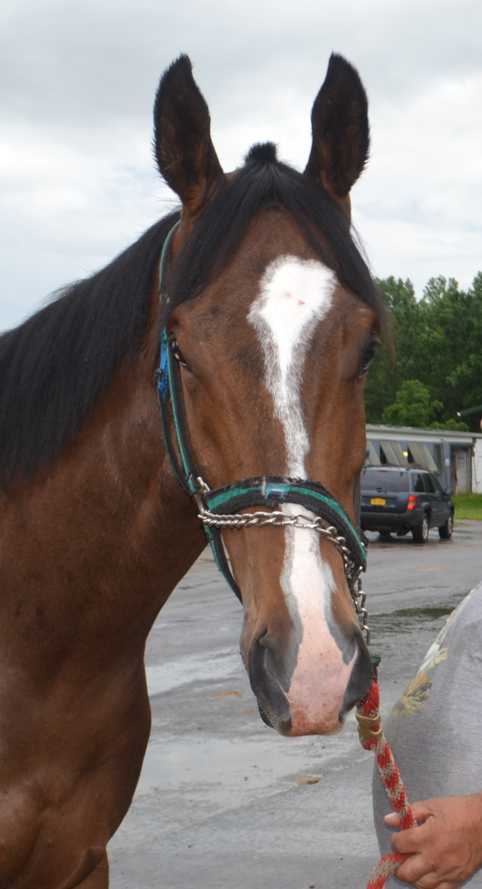
This flashy guy is a blank slate. His trainer reports he is a “wonderful boy” just has no talent on the racetrack. He is relatively lightly raced with only 14 starts. His trainer states he is totally sound with clean legs, which is what we observed during his photo shoot. He is a fabulous mover and looks like he would fit in well in the hunter ring. His cute white socks and white stripe would certainly help him stand out. He was very quiet and polite during his meet and greet, never putting a foot out of place despite another horse acting out quite a bit not far from him. We think Summer By the Lake could be the bargain of the meet. Sound geldings with his movement do not come by frequently at his price point and we suspect he will be snapped up quickly. Summer By the Lake is by Langfuhr out of a Suave mare. Please note: his trainer does have a strong accent as English is his second language. http://www.equibase.com/profiles/Results.cfm?type=Horse&refno=9493805®istry=T Price: $1500neg Contact: Ulisses Gonzalez 585-615-0497
As always, a pre-purchase veterinary exam is recommended.
O'Bannon Boy, 2010, 16.1h Bay Gelding
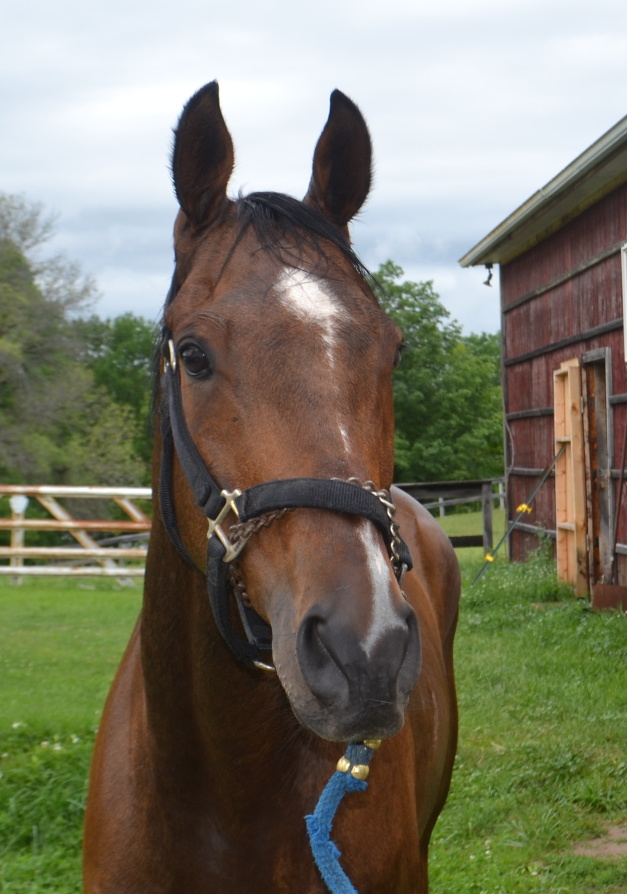
Another fancy moving bargain! O'Bannon has been lovingly cared for by the same owner since he was a yearling. His connections had nothing but nice things to say about him and it was obvious that the resident barn children were also in love with him, wanting to give him lots of peppermints! His trainer reports that O'Bannon Boy races best on the turf or polytrack surface, which is not available at Finger Lakes. They’d like to see him move on to a second career where he can be more successful. She reports that O'Bannon Boy is very easy to live with and has absolutely no vices. He also poops in one spot in his stall! He loads and trailers like a pro and turns out well with others. She reports he is also very well behaved for the vet and blacksmith and is overall “a good egg”. We admired his nice uphill build with a beautiful natural topline. We can see him really succeeding in any sporting discipline. His trainer reports he is sound, which is what we saw in his jog video. O'Bannon Boy is at a farm about 15 minutes away from the racetrack, so it’s important to make an appointment in order to see him. He is by Utopia out of a Personal Flag mare. http://www.equibase.com/profiles/Results.cfm?type=Horse&refno=8868123®istry=T Price: $1500neg Contact: Marissa 315-719-9665
As always, a pre-purchase veterinary exam is recommended.
Shotgun Ride, 2013, 15.3h Bay Gelding
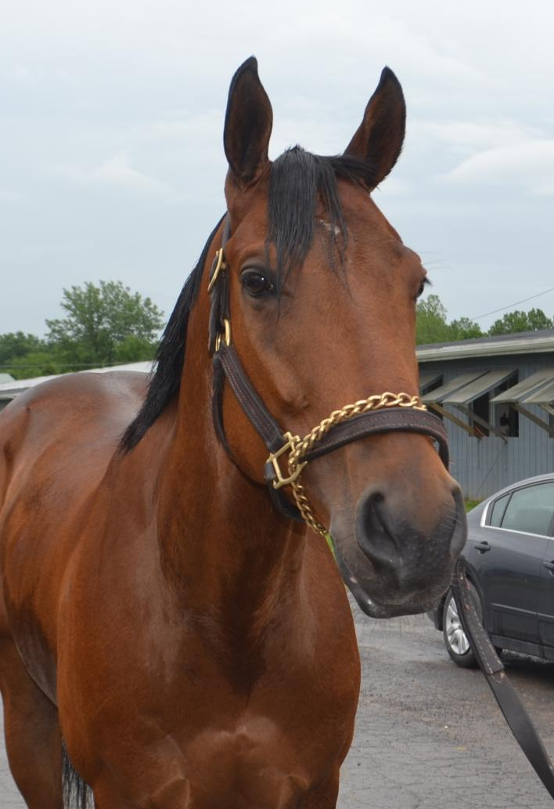
Good things come in plain packages-this we know! In this bay package, you will find an incredibly sweet boy with a great personality and fabulous movement! Although Shotgun Ride may not be giant, he has a huge ground covering stride! Another fancy moving bargain! Shotgun Ride comes from a great shed row of fabulous caregivers. They take pride in the condition of their horses, which is why they often sell very quickly! We can point you in the direction of many happy shoppers that have purchased horses from them in the past. His trainers feel Shotgun Ride would be a good horse for someone’s first OTTB training project due to his personality. They report he is easy going, well behaved, and has absolutely no vices. He cross ties well and stands quietly at a mounting block. They report he is completely clean legged and very sound. He is lightly raced with only 6 starts and is simply not showing racing talent. Surely he will make someone very happy in a second career! Shotgun Ride is very well bred-the son of top young sire Quality Road out of a Yes It’s True mare. http://www.equibase.com/profiles/Results.cfm?type=Horse&refno=9464259®istry=T Price: $1200neg Contact: Polly 315-746-0207 Text preferred
As always, a pre-purchase veterinary exam is recommended.
Aggi’s Queen 2007 15.3 h bay mare.
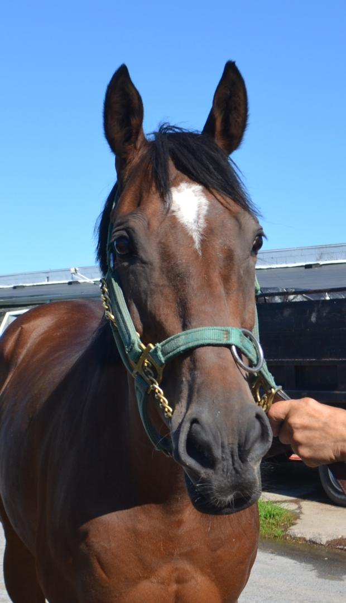
Aggi a nicely bred mare by the Ken and Sarah Ramsey owned sire Catienus, has earned warhorse status after 31 in-the-money finishes out of 80 starts. Purchased as a yearling by her current connections, she has been with them for eight of her nine years and they are rather fond of her (she is also named for the late family matriarch). Aggi is still being raced and has remained sound throughout her career, which has been campaigned entirely at Finger Lakes. We’re pretty sure she could find her way to the paddock and back to her barn without a groom! Aggi’s last win was on 6/23/15 and her heart just isn’t in the game anymore. We think this seasoned racemare deserves a retirement in a discipline that will take advantage of her heart and durability. She has many years of useful service and fun ahead of her!
Price: $500 Contact: Ed Perdue 585-314-1026
As always, a pre-purchase veterinary exam is recommended.
Cohasset, 2013, 15.3h Bay filly
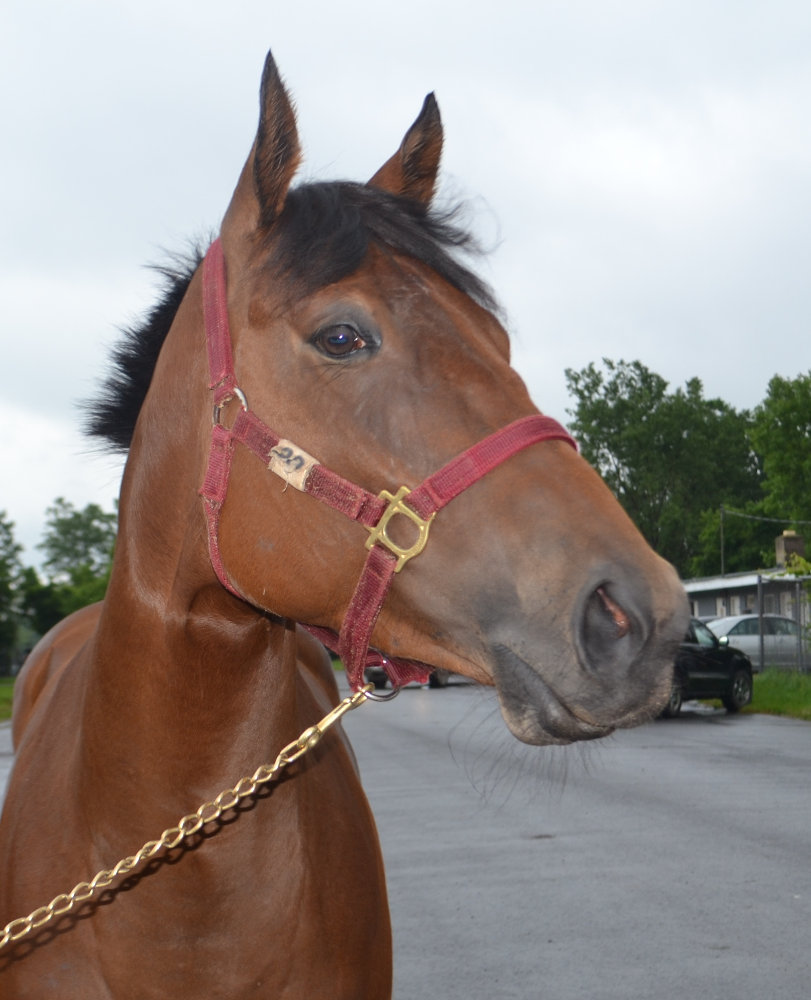
This sweet filly stood quietly for her photo session and jogged politely for her handler with just the lead clipped under her chin, despite a rainy, windy day. With only nineteen starts this filly just doesn't have her heart set on racing. Her connections would like to see her move on to a second career where she will be more competitive. They report she is sound and clean legged without any stable vices. Cohasset is very big bodied and would fill up the leg of a taller rider. She is by Desert Party out of a Yes It’s True mare. Her quiet disposition should make for an easy transition off the track and she would be suitable for any discipline. This filly is a bargain! http://www.equibase.com/profiles/Results.cfm?type=Horse&refno=9455996®istry=T&rbt=TB Price: $800 neg. Contact Jamie Boldt (585)943-4298
As always, a pre-purchase veterinary exam is recommended.
Ben and Jiggy’s, 2014, 16.3 Dark Bay Filly: New Price!
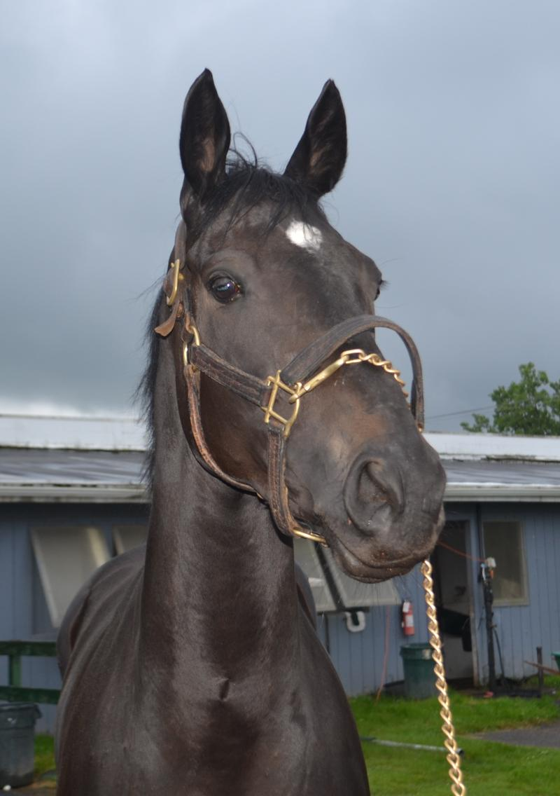
Tall, dark, and beautifully dappled! This big filly is absolutely gorgeous and had our volunteers oohing and ahhing. At only 3 years old, she still has quite a bit of growing to do, but is already quite a tank! Her trainer reports that she is a sweet girl who is good to handle. She recently irritated her suspensory. It is not torn, but she needs about a month off before returning to work. She should then be fine for any discipline. This is perfect timing, since she is young and could use some time to finish growing and filling out (imagine how huge she will be)! She is not showing enough promise to bring her back to the race track, so her connections would like to find her a new home in a career she will be more successful in. We think she could be a stunning dressage horse, but she could go in any direction. She has no vices and was easily handled for her photos despite the stall rest that she has been on which speaks volumes for her disposition. She is by Here Comes Ben out of a With It mare. http://www.equibase.com/profiles/Results.cfm?type=Horse&refno=9718954®istry=T Price: $2000 negotiable
Contact: Adrienne D’Alessandro 585-281-1810
As always, a pre-purchase veterinary exam is recommended.
--
“Violence”, 2015, 16.1+h Dark Bay gelding
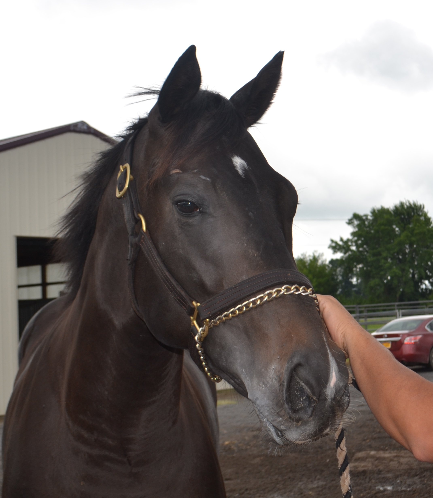
Tall, dark, and oh so handsome! This beefy two year old gelding had our volunteers drooling. He is currently unnamed, but he is by Violence out of Northern Vacation by Yankee Victor, so his connections have nicknamed him Violence as well. His trainer reports he has shown absolutely no racing talent while in training, so they are ready to move him along to somewhere he will be more successful. He was very friendly with our volunteers and seemed to enjoy attention. His trainer reports he has a great personality who she absolutely loves. He stood very politely while being hosed off prior to his photo shoot. We were very impressed with his manners! To top off his good manners, he impressed us with his huge, floating stride. At only two years old, Violence has quite a bit of growing to do. He will end up being a huge guy!! He is sound with clean legs and is reported to have no stable vices. Take this lovely two year old home, let him finish growing, and train him your way-it will be worth it! Price: $2500neg. Contact: Rachel Sells 585-748-0983
As always, a pre-purchase veterinary exam is recommended.
Sirtori, 2009, 16h chestnut gelding
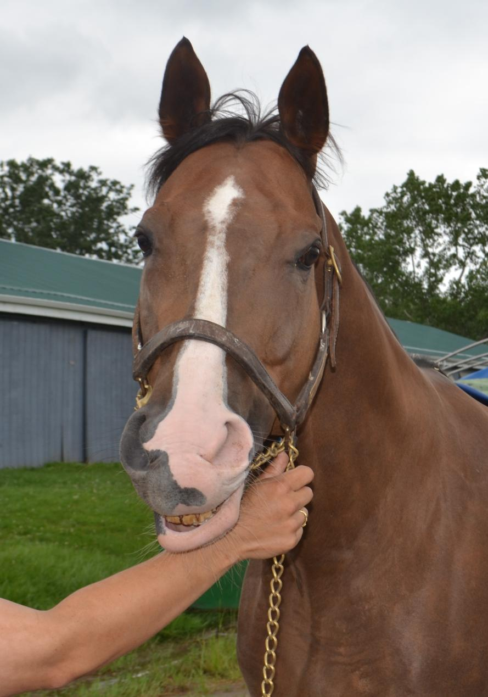
Dapples for days! Our volunteers joked that Sirtori was 16h tall and 16h wide! Pictures don’t do this guy justice-he is MASSIVE. This well mannered, adorable gelding has a big solid build that is sure to impress in any discipline!! He has a striking face with his big white blaze and kind eye. His impeccable manners complement this boy’s nice conformation that will help him to find success after the racetrack. Sirtori has been a successful racehorse earning over $121,000 in his 46 starts with 11 firsts, 10 seconds, and 5 thirds. He is now retiring from racing with a bowed tendon. He is described by his connections as quiet, friendly and easy with no vices. Don’t be deterred by his bow-these heal well and he will return to work after some rest and rehab! He is reported to be easy to live with and without stable vices. Sirtori is by Easing Along out of an Old Trieste mare. http://www.equibase.com/profiles/Results.cfm?type=Horse&refno=8695628®istry=T Price: $1000 very neg to good home Contact: Marc Marino 315-521-0939
As always, a pre-purchase veterinary exam is recommended.
Solina Bambolina, 2011, 16h Dark Bay mare
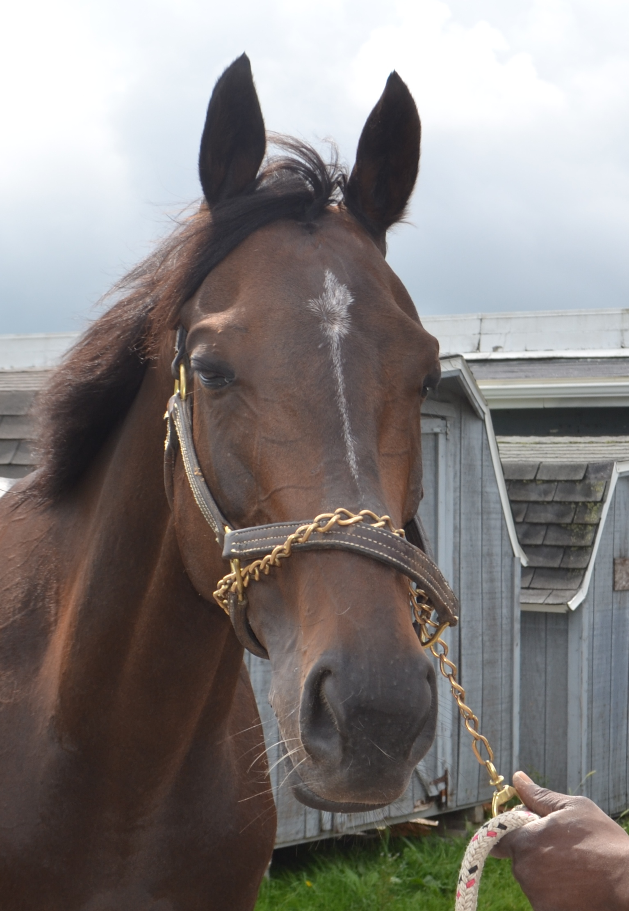
What a fun name this would be for the show ring! This pretty little mare hails from Canada and is grandsired by the multi million dollar stallion Ap Indy. She has had a good racing career earning over $92,000 in 34 starts with 5 firsts, 1 second, and 6 thirds. She is not as competitive as she once was on the race track, so her connections are ready to retire her to something new. Her jog was relaxed and displayed a nice open stride beside her handler. It is certainly easy to picture her in the hunter ring! She has very correct conformation with a nice rounded shoulder and clean legs. With lovely dapples and a quiet disposition, this mare will certainly make someone very happy! She is reported to be very easy to live with and has no stable vices. She had perfect behavior for her photo shoot today. Solina Bambolina is by Olmodavor out of a Wild Rush mare. http://www.equibase.com/profiles/Results.cfm?type=Horse&refno=9138395®istry=T Price: $1500neg Contact: Tammi Lord 585-736-0769
As always, a pre-purchase veterinary exam is recommended.
Good Harbour, 2009, 16h Dark Bay gelding: sold for racing
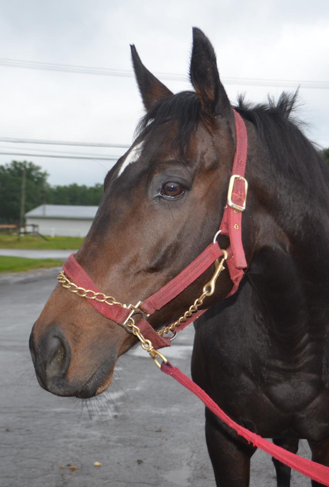
Good Harbour is an overall good guy. He has been a successful race horse earning over $163,000 in his 74 starts with 13 wins (including two this year), 7 seconds, and 6 thirds. His connections feel he will have a harder time being competitive in the conditions he will need to race in, so it is time to find him a new home. Good Harbour is described as an easy going guy with “just the best” personality. A home with lots of mints is a must as he is reported to be a big candy hound. He has a stocky build that will be appealing to taller shoppers. He was very polite and jogged on a loose lead, despite the thunder storm happening in the background. Good Harbour is described as very sound-a sign that he is durable, athletic, and a trier. His trainer reports that he has no stable vices. Good Harbour is by El Nino out of a Way West mare. Price: $2500 Contact: Jackie Stauffer 585-857-1413
As always, a pre-purchase veterinary exam is recommended.
Chloe's Wonder Boy, 2012, 16.2h chestnut gelding: sold for racing
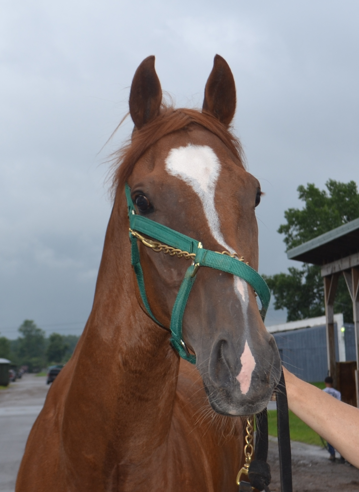
Another big beautiful dappled boy! This leggy gelding was successful on the race track earning over $91,000 in his 37 starts with 4 firsts, 6 seconds, and 6 thids. He is no longer as competitive as he once was, so his connections have decided it is time to move him onto a second career. They report he is lovely to handle, is sound with clean legs, and has no vices. He checks all the boxes for what shoppers always tell us they are looking for! He is by Stevie Wonderboy out of a Deputy Minister mare. With his correct, uphill build, Chloe’s Wonderboy is sure to be a champion in any sporting discipline! http://www.equibase.com/profiles/Results.cfm?type=Horse&refno=9327252®istry=T Price: $3500 Contact: Adrienne D’Alessandro 585-281-1810
As always, a pre-purchase veterinary exam is recommended.
File For Divorce, 2012, 16.1h Chestnut gelding: sold for racing
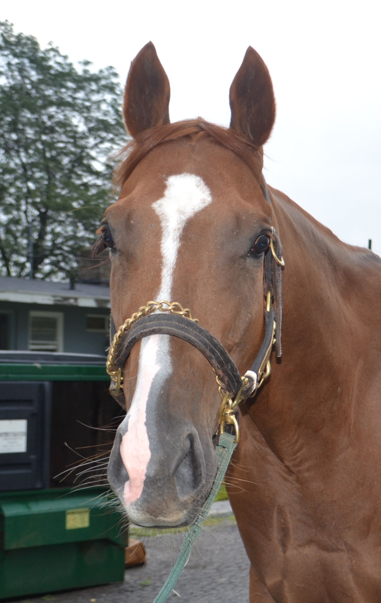
This $65,000 yearling is another quiet, well mannered gelding who is simply no longer competitive on the race track. His connections have opted to retire him sound so that he can find a new job off track. This laid back guy comes with an refined face and cute blaze. Although his name had us giggling, his personality was far from divorce-able. File For Divorce displayed a giant puppy dog personality and enjoyed all the attention he received during his photo op. We think he would excel in any discipline but might excel in sporting disciplines because of his movement. He would be a great option for taller riders as he has a very thick build with a big, powerful caboose! His trainer reports that he is nice to work with and has no stable vices. He is by Touch Gold out of a Menifee mare. http://www.equibase.com/profiles/Results.cfm?type=Horse&refno=9319142®istry=T Price: $2500 Contact: Adrienne D’Alessandro 585-281-1810 http://youtu.be/3c2YdFBVtEU
Real Deal Lady, 2012, 16.2h Chestnut mare: owner retained for racing
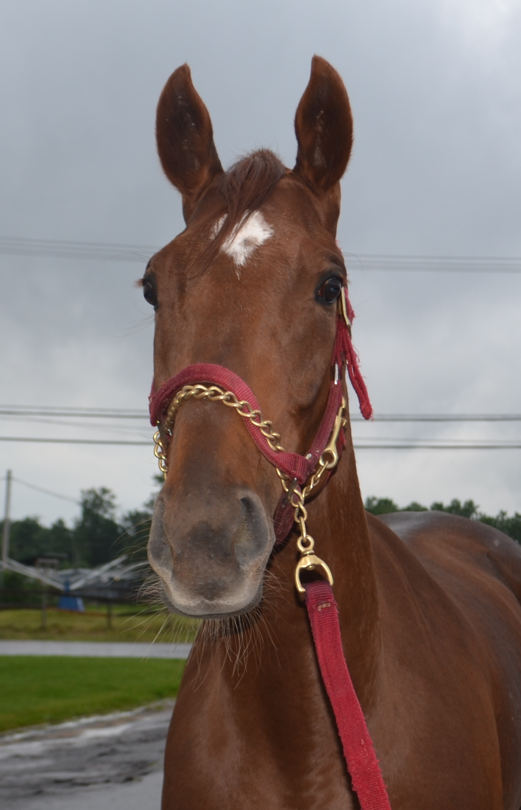
Real Deal Lady has had some success on the race track earning over $73,000 in her 33 starts with 3 wins, 10 seconds, and 4 thirds, but she is letting her connections know that she is ready to move on to another career and is no longer quite as competitive as she once was at the track. Her trainer reports she is a total sweet heart and does not meet the chestnut mare stereotype at all. She also reports that she is sound with clean legs. She shines from good care and is covered is beautiful dapples. This leggy girl has a cute flat kneed trot which makes us think she may be a nice hunter, but we are sure she could go in any direction you choose. She is reportedly very quiet and easy to handle and has no stable vices. She was very polite and jogged on a loose lead despite a thunder storm happening in the background and a naughty horse nearby in the road. Real Deal Lady may be of interest to breeders for racing or for sport. She is a daughter of Travers winner Flower Alley, who sired Kentucky Derby winner I'll Have Another. Flower Alley is a son of super sire Distorted Humor. Her dam is by champion Pleasant Tap, from the Pleasant Colony/His Majesty sire line, out of a Dixieland Band mare. Her third dam is multiple grade 1 stakes winner Christiecat, and her fourth dam is multiple stakes producer, broodmare of the year Toll Booth, one of the most influential and prolific broodmares of all time. Price: $2500 Contact: Jackie Stauffer 585-857-1413
As always, a pre-purchase veterinary exam is recommended.
Majestic Jessica, 2012, 16h Dark bay mare
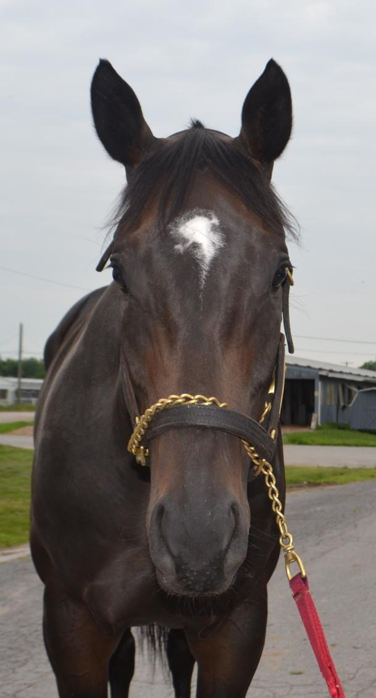
Majestic Jessica is absolutely stunning and must be seen in person to truly appreciate. She has beautiful dapples to compliment her correct conformation and has lots of flashy white that is sure to turn heads wherever she goes. She was quiet and polite during her photo shoot and jogged respectfully on a loose lead. She has been a very successful racehorse earning over $209,000 in her 27 starts with 5 wins, 1 second, and 4 thirds. Unfortunately, she is no longer as competitive as she once was, so her connections are ready to move her onto a second career. They report she is sound without any leg injuries. She does make some noise when racing. This may not be an evident in careers less strenuous than racing and we did not hear it during her jog video. Majestic Jessica does not have any stable vices. She is by Roaring Fever out of a More Than Ready mare. http://www.equibase.com/profiles/Results.cfm?type=Horse&refno=9320482®istry=T Price: $2000 Contact: Adrienne D’Alessandro 585-281-1810
As always, a pre-purchase veterinary exam is recommended.
My Favorite Two, 2010, 16h Chestnut mare
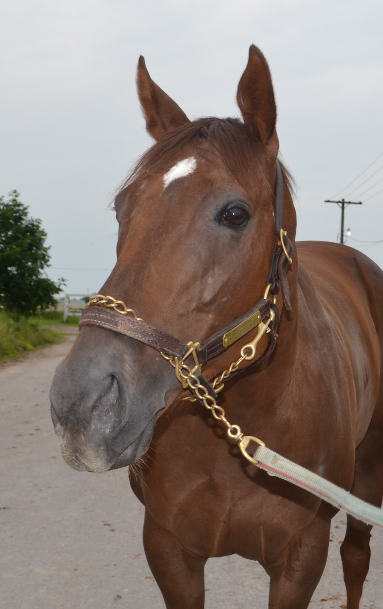
Pictures don’t do this one justice-she will need to be seen in person! My Favorite Two has been a successful mare on the track. She earned the “Best Claimer” title for her condition in 2015. In her 45 starts, she has earned over $158,000 with 11 wins, 10 seconds, and 5 thirds, a testament to her durability and heart. Her connections report she is no longer showing the same competitiveness she once had, so they would like to retire her. She is reported to be sound without injuries. She has some mild wind puffs on her ankles which are cosmetic and do not impact her soundness. Her trainer reports she is a total sweetheart and does not at all match the “chestnut mare” stereotype. We visited with her in her stall a bit and she was very friendly. For her photo shoot, she was very quiet and polite despite another horse in the road acting out a bit. This personable, stocky, durable girl will make someone very happy in a second career. She is by E Dubai out of an Outofthebox mare. http://www.equibase.com/profiles/Results.cfm?type=Horse&refno=8886837®istry=T Price: $1500 Contact: Adrienne D’Alessandro 585-281-1810
As always, a pre-purchase veterinary exam is recommended.
Railroad Missy, 2012 16.2h bay mare: New Price!
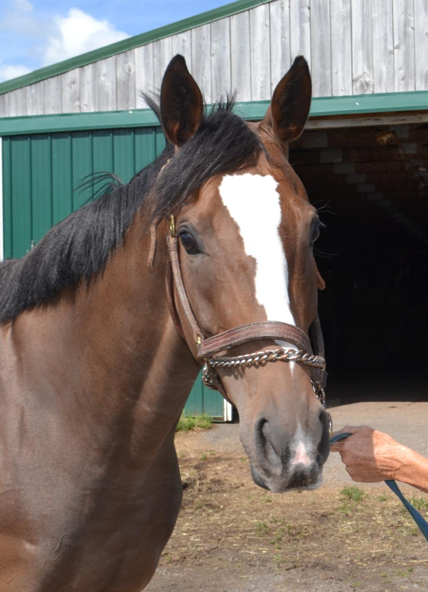
Located at a farm close to the Finger Lakes Race Track, Farmington, NY (near Rochester) This gorgeous mare has outstanding upper level sport horse potential for an experienced rider. She ticks all the boxes -- good size, good bone, clean legs, good feet, an uphill build, a strong shoulder, and she is a very nice mover with good reach from her shoulders. After winning her initial race, Missy has found that second win elusive in a total of 18 starts, so her connections want to move her on to a new career. Her owner/trainer describes Missy as a smart and confident and hardy mare who like to work, and would do well in a steady program. She is not the sort of horse that can sit for a few weeks and have a rider just hop on. The owner also said Missy can be "persnickety" -- while not marish or mean, she likes to have her way. If you are patient and steady with her, she is steady in return -- indeed, the owner said MIssy is a gentle sweetheart with her grandchildren when they visit. But if the handler lacks confidence, or tries to be aggressive or overly assertive, Missy will respond in kind. An experienced rider, who knows how to work with a smart and confident and athletic horse to bring them along patiently and develop their full potential will be the ideal fit for Missy. Missy is currently barefoot and hanging out at her owner's farm and enjoying turn out. Even with bare feet, she trotted beautifully on the gravel driveway, showing lovely flowing movement. Her pedigree offers a lot to like for eventing and other jumping disciplines. She is by Hold Me back, a young son of Giant's Causeway, and her multiple stakes winning dam is by Take Me Out, a son of Cure the Blues from the Stop the Music/Hail to Reason sire line. Missy is offered at a bargain price for a big, young, sound, and beautiful moving horse with so much potential, so better call fast! Price: $850 Contact: Julie Jacobs 585-281-9816 (call or text)
Race record and pedigree: http://www.equibase.com/profiles/Results.cfm?type=Horse&refno=9433138®istry=T
As always, a pre-purchase veterinary exam is recommended.
Ghost Bear, 2014 15.3+ dark bay gelding
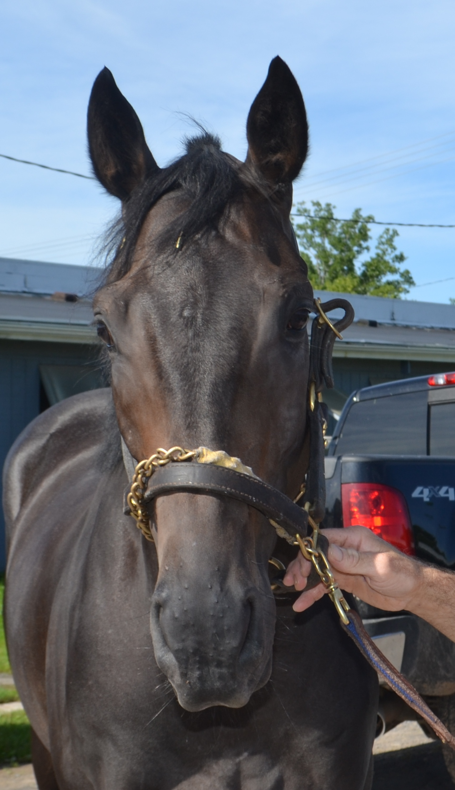
This cute and nicely put together young gelding is showing no racing ability after only 7 starts -- but he sure does have great potential for other disciplines. Ghost Bear has a balanced build, shone with dappled good health, has very clean legs, and his trainer says he is sound and good to handle, with "slowness" as his only vice! He showed good, light movement for his jog video, despite having to negotiate some puddles and potholes. He is by First Dude, from the AP Indy sire line, with Cox's Ridge and Relaunch close up in his sire's pedigree. His dam is by Flame Thrower, from the Saint Ballado/Halo sire line;. This is a pedigree that should by of great interest for sport/jumping disciplines. Ghost Bear is offered at a bargain price for a young, sound, clean slate, so don't hesitate to call quickly to snap this boy up! Price: $1,000 Contact: Sal Iorio 585-455-4019
Race Record and pedigree: http://www.equibase.com/profiles/Results.cfm?type=Horse&refno=9670236®istry=T
As always, a pre-purchase veterinary exam is recommended.
Little Gidding, 2011 16h bay mare
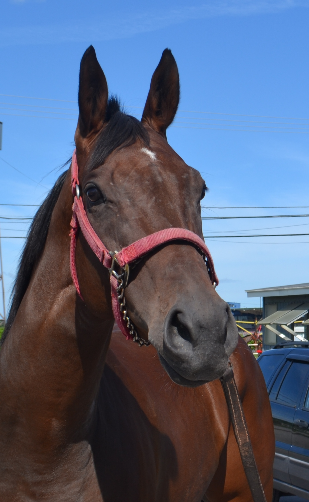
Little Gidding is a very well bred daughter of Mineshaft out of an El Prado mare. Her trainer described her as sound, quiet, and very good to handle and work with. She has been an honest and consistent race horse, with 6 wins and 20 in the money finishes in 46 starts. We admired her strong shoulder and pretty head and kind eye. She is a quality mare, with excellent potential for any discipline. At the jog, she showed nice movement, with good engagement and suspension from behind, and a nice reach from her shoulders. With her breeding, she should also be of interest to breeders. Mineshaft, a son of AP Indy, is a top quality Kentucky sire; her dam is a sister to a multiple stakes winner, and this female family has produced many top black type winners over the years.
Price: $1500 negotiable
Contact: Luis Gutierrez 585-880-5622
Samantacubansoup, 2012 15.3h+ bay mare
Cuteness alert --- and adorable and sweet too! This young mare is sound, sweet, a friendly in your pocket type of girl, and has an appealing stocky uphill build, and she is a very nice mover. After only three starts, it is clear to her connections that Samanta is not racehorse material, but she sure does have potential for any other discipline. She is a daughter of Alphabet Soup, from the Cozzene/Caro line -- a sire line coveted by show hunters and eventers alike. Samanta got a late start on training because she was hanging out on a farm that was for sale, and her current owner/trainer bought the farm, and got her as a bonus. Samanta was very friendly, and one of our volunteers jogged her and she was perfectly behaved, trotting kindly on a loose lead and showing hardly any reaction when a horse on the nearby walking machine erupted, or when a young stud colt in the barn called out frantically. The representative of her trainer who showed her to us said this was typical -- he said nothing bothers her, and she is very easy going and unflappable. Her dam is a graded stakes producer who sold for 1 million dollars in utero. We think this pretty girl has unlimited potential for many disciplines -- she was a volunteer favorite on a day of many lovely horses. Beautiful, sound, lightly raced, quiet, nice mover, and bargain priced -- call fast for this lovely girl! Price: $1500 negotiable Contact: Joe Cabrera 315-704-8256
Race record and pedigree: http://www.equibase.com/profiles/Results.cfm?type=Horse&refno=9286436®istry=T
As always, a pre-purchase veterinary exam is recommended.
You Got It, 2013 16.2h dark bay gelding
Aptly named, this stunning guy's got the "IT" factor for sure! No wonder he sold for $100,000 as a weanling. He has a gorgeous intelligent face, an uphill build, and a strong sloping shoulder. And he's a very nice mover, showing a light balanced trot. As we were admiring You Got It's good looks and presence, his groom raved about him -- always a great source of endorsement. "He's a really cool horse," he said. Great to handle and work with, with back racing class and two wins on the tough New York circuit. In the spring of 2016 he had a mild bowed tendon. He had rehab time, and the tendon is now tight and cold and causing no problems at all. He came back to the races last fall, and has raced four times this year, but he is not as competitive as he once was. So his owner/trainer wants to let him move on to a hew career. He has an excellent pedigree for sport/jumping disciplines. He is by Midnight Lute, who is from the Quiet American branch of the Fappiano line. He is out of a mare by the great Smarty Jones, which brings in Gone West and In Reality. With his elegant good looks and nice movement, You Got It could be a lovely show hunter, but he also has great potential for lower level eventing or dressage. Price: $1500 negotiable Contact: Joe Cabrera 315-704-8256
Race record and pedigree: http://www.equibase.com/profiles/Results.cfm?type=Horse&refno=9526660®istry=T&rbt=TB
As always, a pre-purchase veterinary exam is recommended.
Berb's Monarchy 2013 16.1 h bay gelding
Wow, what a morning for regally bred geldings with "Berb", a shedrow favorite whose handler adores this horse and would add him to her stable if she wasn't already bursting at the seams with her herd. His trainer describes him as an absolute doll who anyone can get on and get along with him. She further states that absolutely nothing gets under his skin and he has no reaction to the things that other racehorses might blow up over. This morning he was a bit up when we asked for a jog but his trainer explains that they stopped training him two weeks ago and he had a bit of pent up energy. We also blame the brisk and blustery weather for his exuberant jog, hence the lip chain. Berb is sired by Leroidesanimaux who was a multiple graded stakes winner and winner of the 2005 Eclipse award for Grass Horse of the Year, which get eventers thinking about Berb's cross country prowess. Berb himself won his debut race in 2015, a Maiden Special Weight race at Parx. His next wins came last year at Finger Lakes and he just isn't firing this year. As is customary for this trainer, she listens to her charges when they tell her they are done with the game and Berb awaits his new life off the track.
http://www.equibase.com/profiles/Results.cfm?type=Horse&refno=9495383®istry=T
Price $1500 Contact Donna Bireta 585-281-3058
As always, a pre-purchase veterinary exam is recommended.
Biaviian 2013 17 h bay gelding
This big beautiful bay boy is sired by the superstar Uncle Mo (from the Caro sire line) out of a graded stakes quality Giant's Causeway mare, and his second dam is a Grade 1 stakes winner. This is a great pedigreee for sport! Despite this pedigree, he has not shown enough racing ability to break his maiden, so his connections want to find him a new career where his true potential can shine. He is not only a really big horse, he is beautifully put together and reportedly good to work around. His trainer is his regular exercise rider and she and his handler report that he is sound, and a real sweetheart with a ton of personality. He has been wintered at their farm and turned out with others. His trainer will be happy to answer any and all questions and is looking for the best possible home for this statuesque fellow. Unlimited potential for all sport disciplines with this stunning big guy -- better call fast!
http://www.equibase.com/profiles/Results.cfm?type=Horse&refno=9507878®istry=T
Price $1500
Contact Stacy Torelli 585-506-7663
httv://www.equibase.com/profiles/Results.cfm?type=Horse&refno=9507878®istry=T
As always, a pre-purchase veterinary exam is recommended.
Elusive New Yorker 2012 16.2 bay gelding
This was the first of many gorgeous bay horses pulled out for us on a brisk and blustery morning and, after seeing him, the rest would have big shoes to fill! What a big, solid, classy gelding, as suggested by his $200,000 price tag at the yearling sales. He is by top sire Elusive Quality from the Gone West sire line and his wonderful breeding shows in his balanced conformation. We admired his massive shoulder and neck and overall beauty. This young horse has an old shin fracture which was rehabbed via the tincture of time and he has serial xrays available for your review. He has raced since being brought back and occasionally comes back a little sore. He is also reported to be on the portly side and does not require a lot of grain to maintain his beefy build. He has never raced to his breeding and has four in the money finishes in his 14 lifetime starts. His handler had nothing but good things to say about this "sweetheart" of a horse and is very interested in getting him a perfect non-racing home.
http://www.equibase.com/profiles/Results.cfm?type=Horse&refno=9266507®istry=T
Price $1500
Contact Stacy Torelli (his trainer and exercise rider) 585-506-7663
As always, a pre-purchase veterinary exam is recommended.
Princess Bossy, 2012 15.1+h bay mare: sold for racing
Really good things do indeed come in smaller plain bay packages! This very pretty and sweet bay girl has big movement -- a big stride, and the lovely balanced flat kneed reach of a show hunter. She looks and moves much bigger than she measures at the withers, which suggests she will fit riders of many sizes, and anyone looking for a really nice prospect for any discipline should not pass her by over a few inches in wither height! We admired her well put together body, clean legs, and very cute face, and her sweet quiet personality was icing on the cake. One of our volunteers jogged her, and she was lovely to handle, trotting politely on a loose lead. Her trainer says she is very sound, a good girl, and nice to ride, but with only one win in 22 starts racing is just not her game. She is by Street Boss, a son of the great Street Cry who sired Zenyatta, who has Blushing Groom and Damascus in his pedigree. Her stakes producing dam is from the Bold Ruler sire line out of a mare from the Hail to Reason sire line, with sport horse luminaries Nijinsky and Hoist the Flag in her pedigree. Her third dam is a multiple Grade 1 stakes producer. We think this mare has great potential for the hunter/jumper ring or for evening or dressage, and she is offered at a bargain price. Price: $1,000 negotiable Contact: Ulises Gonzales 585-615-0497 (he speaks heavily accented English)
Race record and pedigree: http://www.equibase.com/profiles/Results.cfm?type=Horse&refno=9388083®istry=T
As always, a pre-purchase veterinary exam is recommended.
Native George, 2012, 15.3+ Bay Gelding
An adorable face, a kind eye, and a friendly demeanor complemented by a capable, uphill conformation? George has all of the attributes that OTTB shoppers are scouting this time of year! He has been a decent racehorse for his connections, earning over $37,000 in his 17 starts, but he has made it clear that his spirit is no longer in the racing game. He is reportedly sound with no stable vices, but he does have old knee injuries from before he came up to Finger Lakes earlier this year. He has raced on them with no issues. With his gentleman-like manners and his kind disposition, we could see him making an awesome pleasure horse prospect, but he has the movement to excel in dressage as well! This kindhearted fellow won't last long. Serious inquiries should call soon to bring George home.
http://www.equibase.com/profiles/Results.cfm?type=Horse&refno=9310291®istry=T&rbt=TB
Price: $1500 Contact Karen Barrow 585-415-1152
As always, a pre-purchase veterinary exam is recommended.
Itching in Ivory, 2012 15.3h chestnut gelding
Raffie's Majesty fans -- here is a very pretty and very sweet son of that beloved NY stallion! Those who are lucky enough to have Raffie's Majesty offspring know they are great movers, athletic, can jump, and have great brains. Itching in Ivory, affectionately known as Fred around the farm, is a strikingly good looking, solid bodied guy with a very friendly, people loving personality. Wouldn't you like to see that pretty head greeting you over the stall door when you walk into your barn?! Fred is sound, and a very nice mover, but he just isn't cutting it as a race horse -- he has yet to win in 15 starts. With his solid body, and big flowing light stride, Fred will take up a rider's leg, so he will accommodate a taller rider than his wither height might lead one to think. Fred is described as good to handle and a people lover. He is described as a mild cribber, but has not been wearing a collar. While we visited with Fred, we saw no evidence of any attempts at cribbing. For those who can accept this, we think you are going to get a great bargain and a fabulous horse. We can see him happily cantering around a hunter ring, but dressage and eventing would surely suit him as well, given his pedigree. Raffie's Majesty is from the His Majesty/Ribot sire line. And Fred's dam offers outstanding sport lines. She is from a Halo/Hail to Reason line stallion, out of a mare by El Prado from the Sadler's Wells line. Sir Ivor, Herbager, Tudor Minstrel, Tri Jet are other sires in his pedigree admired in the sporting world. Fred is offered at a bargain price! Price: $750 Contact: Julie Jacobs 585-281-9816
Race Record and pedigree: http://www.equibase.com/profiles/Results.cfm?type=Horse&refno=9270022®istry=T
As always, a pre-purchase veterinary exam is recommended.
Alpha Go, 2014 16.2+h bay gelding
This young hunk of eye candy with chrome is regally bred, sound, and has unlimited potential for sporting disciplines. Alpha Go is a son of champion Tiznow, from the Relaunch/In Reality sire line, and Tiznow is turning out to be an excellent sire of jumpers. His dam is a daughter of turf star Stormy Atlantic, and she is a full sister to multiple graded stakes winners. But Alpha Go has not raced up to his pedigree, with no on the board finishes in 7 starts. So his trainer has decided it is time to let this sound young guy find a discipline for which he is better suited --and we think the sky is the limit is sporting disciplines for this one! Alpha Go was recently gelded, and his handler described him as a horse who is still young physically and mentally, and needs time to finish maturing. Because he is so young, strong, big, and still developing focus and maturity, he will be best suited for experienced riders with experience bringing young TBs along. His breeding is for running long on the turf, and that translates particularly well to eventing. Alpha Go was well behaved for his photo session, and he trotted politely, showing good suspension and balance. If you are looking for an upper level prospect for jumping, eventing, or dressage, we advise calling quickly: young horses this flashy and sound, with such a great pedigree and sporting potential, are much sought after! Price: $2500 negotiable Contact: Dana Saul 315-871-9383
Race record and pedigree: http://www.equibase.com/profiles/Results.cfm?type=Horse&refno=9663723®istry=T
As always, a pre-purchase veterinary exam is recommended.
One Sweet Ride, 2013 15.3h bay filly
Aptly named, this filly is very sweet, and reported to be very nice to ride! She has a balanced uphill build, and a strong shoulder and a good hind end -- she looks athletic and like she should have jumping ability. Her legs are clean, and her trainer says she is sound -- but she is ready to find a new career because since breaking her maiden that second win just doesn't seem to be in the cards. She showed very good movement for her jog video, flowing, light, balanced, with a nice reach. She was very laid back, sweet and friendly. At the track, she does not like confinement and stall walks. But her trainer says at the farm, where she enjoys turn out and gets along well in a group, she is a happy camper and settles right down. She will do best in a situation with lots of turn out time. She is by Sidney's Candy, a son of the outstanding racer and sire Candy Ride, from the Cryptoclearance branch of the Fappiano sire line -- a line with a great record for producing good brained horses who can jump. Her dam is by Our Emblem, a son of the immortal Personal Ensign, who was a daughter of Private Account -- another sire much sought after for passing on jumping ability. We see great potential in this filly for the hunters, jumpers, eventing, hunter paces.... anything you want to do. And she is offered at a bargain price! Price: $1,000 negotiable Contact: Jackie Stauffer 585-857-1413
Race record and pedigree: http://www.equibase.com/profiles/Results.cfm?type=Horse&refno=9494983®istry=T&rbt=TB
As always, a pre-purchase veterinary exam is recommended.
Swing Dixie, 2012 16.3h dark bay gelding
Hello gorgeous! This big handsome hunk, whose barn name is "Macho," is also a sweet kind horse, sound and clean legged, and with a jumping oriented pedigree that should have eventers drooling! Macho was perfectly behaved for his photo session, and seemed to enjoy showing off his gorgeous solid bodied dappled physique. He has 4 wins and 14 in the money finishes in 30 starts, but he hasn't been as competitive in his races this year, so his owner wants to offer him to serious buyers who can bring out his great potential for a new career. We talked with Macho's regular exercise rider, who says he is good to ride, a horse who is all business, takes the bit and goes when asked, and is a strong willing galloper. His sire is Senor Swinger, a son of El Prado, who is by the great Sadler's Wells out of a Sir Ivor mare, and Senor Swinger's dam is by Kris S., a son of Roberto. Macho's dam is by Dixie Brass, a son of Dixieland Band, and her dam is from the Olden Times/Relic/Man O'War sire line. We think that Macho is one of our most spectacular offerings this year, so call fast about this one! Price: $3500 negotiable Contact: Dana Saul 315-871-9383
Race record and pedigree: http://www.equibase.com/profiles/Results.cfm?type=Horse&refno=9347579®istry=T#salesHistory
As always, a pre-purchase veterinary exam is recommended.
Devilish Grin, 2011, 16h, Bay Gelding
Nothing devilish about this handsome guy! He demonstrated outstanding manners and an endearing personality during our meet and greet this morning. He has been a successful race horse, earning over $90,000 on the track for his connections, but he has more recently shown that his speed and interest in racing is waning. He is retiring sound from racing, with no stable vices and unlimited potential for sport or pleasure. He is described as quiet to work around, but workmanlike on the track-- he knows his responsibilities and goes right to work with no funny business. This attitude and experience will surely help him transition smoothly to a new career! We could see this handsome guy going any direction-- or trying a bit of everything! Honest, handsome, good size and conformation? This one won't last long--Call today to add a Devilish Grin to your family.
http://www.equibase.com/profiles/Results.cfm?type=Horse&refno=9120254®istry=T&rbt=TB
As always, a pre-purchase veterinary exam is recommended.
Price: $850 Contact Jamie Boldt 585-943-4298 (text preferred)
Maybry's Challenge, 2011, 16.2h, Grey/Roan Gelding
Attention Grey lovers!! "Scooter" is a groom favorite who "has personality for twenty horses" in that he is kind, intelligent, good to work with, playful, and keenly aware of the humans caring for him. He demonstrated excellent manners on a briskly cool morning, full of activity on the backside. His groom today noted that he has been with his current connections for three years and she spoke very highly of this classy fellow. He is reported as sound with no vices. His strong, uphill conformation, size, and temperament make him a fabulous prospect for sport: We could see him galloping along a cross country course with ease or using his obvious athleticism in the jumper ring! Gorgeous Grey Geldings like Scooter don't last long! Call today to make him a part of your family.
http://www.equibase.com/profiles/Results.cfm?type=Horse&refno=9077099®istry=T
Price: $1500
Contact: Adrianne D'Alessandro 585-281-1810
As always, a pre-purchase veterinary exam is recommended.
Birdie Bob, 2014, 15h+ Bay Gelding
The best things often come in the smallest of packages and Bob here is no exception! This adorable young gelding is just not keeping up with his stablemates on the racetrack and his owners have decided to pass him on to a new discipline while he is still young, sound, and healthy. Birdie Bob is said to have excellent manners, and a young but pleasant personality. He is happy to go to work and seems to understand his job on the racetrack, but just doesn't make it around fast enough to make a racehorse. He has a laid back personality, a kind disposition, a coat that gleans of excellent care and grooming. His clean legs and sound mind make him a blank slate-- this adorable young gelding is well built, a good mover and ready to be your next sport or pleasure prospect.
http://www.equibase.com/profiles/Results.cfm?type=Horse&refno=9708498®istry=T&rbt=TB
Price:$1,000
Contact Terry Genecco 585-820-2575
As always, a pre-purchase veterinary exam is recommended.
Empossebility, 2014 15h chestnut filly
After only 5 races, this adorable sweetheart made it evident that she was not racehorse material. But now she has already started retraining for a new career! She is undergoing desensitization training, playing with tarps, balls, cavalettis -- and proving to be curious, smart, unflappable, and easy going. She has also been ridden in a western saddle, and is described as quiet and sensible, good to ride. She is turned out in a group with geldings and a broodmare, and is low girl in the group who gets along with everyone. She is sound and clean legged, and she is up to date on vaccinations and coggins, and has just had her feet done, and was reported as good for the farrier. This sweetheart is ready to take you on the trails or off on a pleasure ride! With her nice movement she could also be a good prospect for a children's hunter. She is by Posse, who is from the Deputy Minister sire line out of a mare from Blushing Groom and Roberto lines. With this pedigree, it is no wonder that several of the Posse offspring that have been placed through FLF are doing well in sporting disciplines, with good movement, good brains, and jumping ability. Her dam is by Proud Citizen, a Gone West son, and her second dam is by Dixieland Band out of a Roberto mare. More great sport/jumping lines! She is located at a farm about 20 minutes from the track, so it is essential to make an appointment to go see her. We are told that it may be possible to arrange to ride her there. Price: $1,000 negotiable. Good home essential. Contact: Danielle 585-736-0366
Race record and pedigree: http://www.equibase.com/profiles/Results.cfm?type=Horse&refno=9651087®istry=T
As always, a pre-purchase veterinary exam is recommended.
Buckshot Woody, 2011 16.2h+ dark bay gelding
This big handsome solid boned gelding glowed with dappled good health, and the love that his owner/caretaker has for him was obvious to our volunteers. Woody is described as a sound horse, with a good mind, and good to handle. He came to his current owner from a situation where Woody has "seen it all" and is bothered by nothing. This bodes well for Woody making an easy transition off the track and quickly adapting into a great horse for his new person. Woody showed nice movement for his video, with lightness and suspension. With is strong shoulder and balanced solid build, good looks, temperament, and movement, we think Woody is a great prospect for the show ring, for eventing or hunter paces or foxhunting... for anything! He is offered at an amazing bargain price, and potential homes will be checked to make sure they are good ones deserving of a great horse like Woody. Price: $500 Contact: Marisa 315-719-9665
Race record and pedigree: http://www.equibase.com/profiles/Results.cfm?type=Horse&refno=9120709®istry=T
As always, a pre-purchase veterinary exam is recommended.
Weepnwidow, 2012 16.3h bay mare
This long legged big beauty just shouted "athlete" and "jumping prospect" to us! She is described as very sound, with no issues, no bad habits, and no vices. The trainer's daughter, who is the contact person, says she's a sweetie pie cuddler in the stall. The people at the farm near the where she is located confirmed that -- they said that in the couple of days that Weepnwidow had been there, she had already endeared herself to them as a great horse to handle, polite and cooperative. Weepnwidow showed off very good movement for her trot video, even, balanced, light and a big stride. She can be a strong and eager galloper on the track, and with her size and scope an experienced rider is recommended. She is lightly raced and clean legged; after only ten starts, that second win is proving elusive, so her trainer wants to move her on to a new disciple where she can excel. We think this big mare is an exciting upper level prospect for eventing or jumpers, and the trainer's daughter echoed that, telling us she is confident this one will be a good jumper. Her pedigree is also good for sport -- her sire is a son of Unbridled, from the Fappiano sire line, and her dam is from the Wild Again/Icecapade sire line, out of a mare from the Buckpasser sire line. This outstanding big mare is offered at an amazing bargain price, so better call fast! Price: $850 Contact: Jamie Boldt 585-943-4298 (text preferred)
Race record and pedigree: http://www.equibase.com/profiles/Results.cfm?type=Horse&refno=9424028®istry=T
As always, a pre-purchase veterinary exam is recommended.
Dancing Lion 2010 16 h bay gelding: retained by owner
If this gelding had a theme song, it would be "I've Been Everywhere, Man" because, man, he really has been everywhere! With almost $200,000 in earnings, he has run at Parx, Monmouth, Suffolk, Laurel Charlestown and he just recently hit the Finger Lakes oval. He has earned almost 50% in the money finishes with 6 wins, 11 thirds and 9 thirds, including a second place finish in a Stakes race as a two year old. While sound and hardy, his form has tapered off enough that his owner is ready to move him along. His handler during his photoshoot has galloped Dancing Lion and said he is a sensible guy with a smooth gait "like a big, comfy couch". Because he has been through so many hands, he is a been-there-done-that horse that is not fazed by much of anything. He was wonderfully cooperative and well mannered while we visited with him outside the barn and, wow, what a nice mover he is! We think he would excel in just about any discipline and with that movement and just enough chrome, he will get noticed in the show ring.
http://www.equibase.com/profiles/Results.cfm?type=Horse&refno=8845253®istry=T&rbt=TB
Price $1200
Contact Mark Egan 804-317-2531
As always, a pre-purchase veterinary exam is recommended.
Porvoo 2009 15.3 h gr/ro mare
This lovely gray daughter of Mizzen Mast, from the Cozzene/Caro sire line, is a beautiful mover, and wow is she durable! She so deserves to leave the racetrack life after racing all over the east coast for 5 years. Her one win was at The Meadowlands on the turf in a one mile race, so the hard dirt track and short races that predominate at Finger Lakes are not her forte. Her pedigree is filled with stout turf horses who are known as good jumping lines: Cozzene, Caro, Prince John, Ribot, Tom Fool, Theatrical, Nureyev. We were all wowed by her big lofty ground covering trot -- what a nice mover! With this movement and her pedigree, she has exciting potential for sporting disciplines, whether the hunters, eventing, or dressage. Her handler for her photo shoot explained that she has been very durable and sound (and her legs are clean!), but she has become quite sour about the track life, and really just needs to get some letdown off the track to enjoy turnout and just being a horse before going back into work. Although she is an age that some consider "older", she has certainly demonstrated a strong work ethic and impressive durability and soundness. With the tincture of time and TLC to bond with her person, we think she will make a willing and stunning mount for your discipline of choice.
Price: $1500 negotiable
Contact: Marisa 315-719-9665
http://www.equibase.com/profiles/Results.cfm?type=Horse&refno=8565921®istry=T
As always, a pre-purchase veterinary exam is recommended.
Brettski, 2104 15.2+h bay filly
This young and still growing daughter of Congaree (from the Blushing Groom sire line) out of a dam by Yes It's True, (from the Raja Baba/Bold Ruler sire line and a mare from the In Reality sire line -- great sport lines!), has shown her trainer that she is just too slow to be a good race horse. With 9 races under her belt, and no in the money finishes, her trainer has concluded that racing is not her best game. But that is the sporting world's gain, because she has such unlimited potential for other disciplines! She has the uphill balanced build, and strong shoulder sought after for jumping and eventing. She also has the smaller stature preferred for polo. And she is a very nice mover, trotting politely on a loose lead for one of our volunteers, showing off lightness, suspension, and toe pointing reach. Her trainer describes her as very well mannered, sound and without vices. He did say she will sometimes stall walk when she gets nervous, but turn out and time will create a different horse in the future. We think this lass, with time to mature physically, and a great sport horse pedigree, is a blank slate with unlimited potential. When seeing her, one of our volunteers noted that her FLF was a similar size when she got him as a youngster, and he is now a 16h+ chunk!
http://www.equibase.com/profiles/Results.cfm?type=Horse&refno=9669837®istry=T
Price $1000
Contact Marisa 315-719-9665 (contact person for owner/trainer to help with language barrier)
As always, a pre-purchase veterinary exam is recommended.Rincon Behr 2010 16.2 bay gelding -- to FLTAP
You know a horse has earned the admiration and gratitude from his racing connections when the whole family is there to watch the photo shoot! Rincon Behr is fondly described as a very happy, good feeling horse who has tapered in his later years and is ready to leave the racetrack in the rearview mirror. He broke his maiden for special weight at Churchill Downs and ran back there to win an allowance heat, both races in very fast times. His trainer joked that he is "too fast", and he wasn't kidding! His most recent win was in June of this year and, although his trainer has stopped on his training, Rincon is still race fit and "feeling his oats". We were excited to see that he demonstrates wonderful movement at the jog with loads of suspension and loft. Rincon is described as sound (we concur) and without vices. He will benefit from some down time to settle the "raciness" and transition to the discipline of your choice
http://www.equibase.com/profiles/Results.cfm?type=Horse&refno=8846264®istry=T
As always, a pre-purchase veterinary exam is recommended.
Price $1000 neg.
Contact Tom Mueller
Charlie's Rainbow, 2011, 15.3+ Bay Mare: retined by owner
This adorable mare will surely be a useful horse in her next career. She's retiring from racing sound with no vices. She has been a useful racehorse, earning over $50,000 in her 26 starts. Her handler reports that she is good to work around and has excellent stall manners. She loves to work and can get excited when it's time to work or exercise, but she maintains her manners with few reminders. Charlie is a well built, sound, and athletic horse with unlimited potential. We could see her being an outstanding pleasure mount, but she sure has the moves and demeanor to take on any discipline. Don't let this one slip by! Fall is coming and so is the end of the race meet! Bring her home today! Price: $1200 Contact Mark Eagan 804-317-2531 --
As always, a pre-purchase veterinary exam is recommended.
Desert Turf, 2010 15.2-15.3 bay mare
This pretty, clean legged, and very well mannered mare is a daughter of Desert Warrior -- and every one of his offspring that we have placed over the last several years has turned out to be a fabulous, scopey jumper. So if Desert Turf is anything like her relatives, look out hunter and jumper world, here she comes! Desert Turf was sweet and kind and perfectly behaved for her photo session and jog; the person who handled her could not give us much other information, and the actual owner/trainer speaks limited English, so we are going on the very favorable impressions she made on us from our in person interview. She is clean legged and described as sound, and certainly looked it. At the trot she showed nice toe pointing movement; she was a bit stiff in her hocks, but considering that she has raced regularly without any down time for almost two years straight, that is to be expected... and can easily be changed once she is off the track. She is ready to move on from racing because this year she has shown declining interest and reduced competitiveness. We see real potential in this pretty mare, so we hope that a good person will step up and give her the retirement from racing that she so needs and deserves, and bring out her aptitude for a new career. Her pedigree sure does indicate she will have some jumping ability. Her sire Desert Warrior is by Deputy Minister out of a Secretariat mare. Her dam is by a Damascus grandson, out of a mare from the Honest Pleasure branch of the Bold Ruler line. Price: $2,000 negotiable Contact: Marisa 315-719-9665 (contact person for owner/trainer to assist with language barrier)
Race record and pedigree: http://www.equibase.com/profiles/Results.cfm?type=Horse&refno=8840439®istry=T&rbt=TB
As always, a pre-purchase veterinary exam is recommended.
Thirty Percent, 2012 16h+ bay gelding: new price!
We initially listed this handsome young horse in late summer, but then he started racing well, earning steady checks, so his trainer decided to keep racing him. It is now almost the end of the Finger Lakes race meet for this year, so it is finally time to offer Thirty Percent again, and he is completely ready to move on to a good hew home -- and this time at a much more bargain price. We think he is 100 percent gorgeous, and full of potential for so many new disciplines! This handsome gelding was such a chill guy for his photo session, soaking up the sun and posing perfectly without a chain over his nose. His trainer says he is a very good boy who does everything right, and is sound. He just isn't showing enough potential winning ability in the current condition level he has to race in, so they want to find him a new career where he can excel, rather than keeping him over the winter and bringing him back to the races next year. With his balanced correct build, clean legs, and amazing strong sloping shoulder, we can see jumping in his future. He is also a good mover, showing off a light trot with a good toe pointing reach. Show hunter; eventer; fun on hunter paces; dressage? Take your pick -- this one can go in any direction. He is by One Nice Cat out of a mare by Smokin Mel (we know there are many fans of Smokin Mel offspring out there). Fappiano, In Reality, Graustark, Ribot, Black Tie Affair, and Regal Classic are just a few of the "sport friendly" sires in his pedigree. Price: $1000 negotiable Contact: Michelle Tasso 585-472-2804
Race record and pedigree: http://www.equibase.com/profiles/Results.cfm?type=Horse&refno=9270548®istry=T
As always, a pre-purchase veterinary exam is recommended.
Brookdale, 2014, 15.2 Chestnut gelding
Chrome for days! This flashy boy has roaning throughout his gleaming chestnut coat that is sure to stand out wherever you go. He is described as a sweet boy with a charming personality. His trainer reported that Brookdale is great to work with, has no stall vices, and is well behaved on the track. Brookdale is lightly raced with only 9 lifetime starts. In that time, he has shown his connections that racing is not going to be his thing, and that he is ready to move on to a different discipline. At only 3 years old, he will continue to grow for some time. His trainer feels that because of his easy going demeanor, he would make a good kid’s horse with some time and retraining with a professional. His trainer reports that Brookdale can come out a bit stiff in the shoulders from time to time, but always loosens up as he warms up. Surely with sometime to grow and mature, this adorable gelding will make a fantastic partner for his next rider. http://www.equibase.com/profiles/Results.cfm?type=Horse&refno=9656690®istry=T&rbt=TB Price: $1500 Contact: Adrianne D’Alessandro 585-281-1810
As always, a pre-purchase veterinary exam is recommended.
Coramoss, 2012, 16.2 bay mare: new price!
Dapples Galore and personality to boot! This gorgeous girl was a $50,000 yearling at Saratoga in 2013 and she has been a successful race horse, earning $106,000 in 22 starts with 14 in the money finishes, and three wins, two of them this year. Her athleticism and beauty will certainly be assets that will cause her to stand out in the show ring, or that she passes on to her progeny. She showed nice movement for her jog video, with lightness and suspension. We were told that she has some mild cartilage inflammation in an ankle that may not hold up to further racing, although she recently breezed in mid-October. With time and a less strenuous discipline, she should be fine. With her looks, nice movement, and great jumping lines, we can see her as a show hunter, or as a great sport horse broodmare prospect. Dressage could also be right up her alley. She is very well bred, with a pedigree that should also make her attractive for sport horse breeding. She is by Successful Appeal, who is from the In Reality sire line. Her dam, who sold for $450,000 as a two year old, is by top stallion Elusive Quality, who is a son of Gone West.
http://www.equibase.com/profiles/Results.cfm?type=Horse&refno=9337505®istry=T
Price: $500 negotiable Contact: Adrianne D’Alessandro 585-281-1810
As always, a pre-purchase veterinary exam is recommended.
Ogremeister, 2011, 16.2 Bay Gelding
"Ogie" as he is called by his connections is described as a “big hunk of love”. He nickers to his caretakers as they walk into the barn. It is evident that he his a barn favorite, and we can see why! This big boy was super sweet during his photo shoot and seemed to have an “in your pocket” disposition. He was all about giving kisses, which made it tricky to get a head shot to show off his adorable markings! His trainer reported he is very easy to live with, has no stable vices, and is good to ride. Not surprisingly, he is reported to be an easy keeper, which is easy to believe with his huge barrel! Ogie has been a successful racehorse earning over $272,000 in his 44 career starts with 4 wins, 10 seconds, and 5 thirds. He is now making it clear to his connections that he is ready to move on to a different discipline. They report he is sound without injuries and would be successful in any discipline. He showed nice movement for his jog video. There has already been some interest in this cool guy, so we would suggest calling quickly if he checks all the boxes for you. He is by Silver Train out of a Polish Numbers mare.
http://www.equibase.com/profiles/Results.cfm?type=Horse&refno=9081048®istry=T
Price:$3,500 Contact: Adrianne D’Alessandro 585-281-1810
https://youtu.be/rOdvS-iiwPc
As always, a pre-purchase veterinary exam is recommended.
First Ranger. 15.3+ bay gelding
First Ranger is another volunteer favorite for the weekend. We posted a couple weeks ago about never underestimating the volunteer favorites *hint hint*. On top of being a volunteer favorite, First Ranger is also a barn favorite. He is reported to have “personality for miles” with a little bit a sass and a whole lot of fun. Sounds like a cool guy to have in the barn! His trainer reports he has no soundness or vices. He has been a successful racehorse earning over $153,000 in his 41 starts with 6 wins, 2 seconds, and 6 thirds. He is no longer as competitive as he once was, so his connections have decided to move him onto a new career. We saw nice tight clean legs during his photo shoot and boy can First Ranger move! He showed a reaching, ground covering trot that we think would stand out in the hunger ring, but surely he will be successful in any sporting discipline. He is by Utopia out of an Elusive Quality mare. http://www.equibase.com/profiles/Results.cfm?type=Horse&refno=9073570®istry=T&rbt=TB Price: $3,000 Contact: Adrianne D’Alessandro 585-281-1810
As always, a pre-purchase veterinary exam is recommended.
Exley, 2008, 16h Bay Gelding
This classy, handsomely built gelding has clearly been impressive from a young age! He sold as a yearling for $100,000 at Keeneland, and he proved a worthy investment, earning over $224,000 on the racetrack!! Here is your chance to own a 6 figure horse! He is clearly well loved by his caretakers-- a gleaming coat with good flesh and bone. This horse is athletic, handsome, and reported as sound with no vices. He has wintered at the farm with his owner: he turns out well with others, and is well behaved in turn out. With his excellent demeanor, athletic, uphill build, this one has unlimited potential for many disciplines! Big geldings in this price range tend to go quickly, so we would suggest calling fast if he checks all the boxes for you. He is by Officer out of a Yes It’s True mare.
http://www.equibase.com/profiles/Results.cfm?type=Horse&refno=8233681®istry=T
Price: $500 Contact: Harris Dukes: 585-469-1547 call preferred.
As always, a pre-purchase veterinary exam is recommended.
Black Hole, 2011, 16h bay mare
Move over, Miss Congeniality! This well mannered, classy mare truly charmed our volunteers today. Gorgeous dapples, a solid, uphill build and a sweetheart personality made her a favorite of today’s listings. She moved to Finger Lakes this summer to try her chances on a different track surface and unfortunately stumbled and unseated her rider in her first race here. While she is well mannered and had always been good to ride, she has not yet returned to full work since her stumble. Diagnostics have been inconclusive, but she has steadily returned to soundness with rest and rehabilitation. With Freud bloodlines, one could easily make this beautiful mare a broodmare while she rehabs, as Freud babies are known to go on to successful careers in eventing, jumpers, and hunters. Or let her continue her rest and rehab and make her an outstanding pleasure mount! This girl is classy and charming-- consider bringing her into your barn today!
http://www.equibase.com/profiles/Results.cfm?type=Horse&refno=9058359®istry=T&rbt=TB
Price: $500. References will be checked. Contact: Chris Progno 585-303-0527 (text preferred)
As always, a pre-purchase veterinary exam is recommended.
In Harms Way, 2010, 16.2h Bay Gelding
This handsome hunk is described by his connections as an “in your pocket” type-- and he put his charm on today for his meet and greet with our volunteers! He has had a strong race career, earning over $196,000 in 27 starts, but his owner/trainer is ready to let him retire while he is still sound, capable and content. In his time with his current connections, he has become the barn mascot-- his charming demeanor, solid bone, excellent conformation and athleticism make him a shining example of the care he has received. Harm does wear bar shoes to support an injury from 2014, but as his race record proves, he has returned to prime condition without incident. X-rays are available to serious inquiries. His sire, Hook and Ladder is known for his propensity to throw babies with good brains and athleticism and jumping ability. We know several that have gone on to successful sporting careers. This talented, classy gelding will not last long-- bring him home and make him your next sport horse!
http://www.equibase.com/profiles/Results.cfm?type=Horse&refno=8874101®istry=T&rbt=TB
Price: $1,200, Serious Inquiries only. Contact Chris Progno 585-303-0527 (text preferred)
As always, a pre-purchase veterinary exam is recommended.
Money Zapper, 2010 16.3h bay gelding
This big handsome son of superstar Ghostzapper (from the Deputy Minister sire line), out of a Harlan's Holiday mare, just oozes quality. This is a “must see ” horse if you are looking for a great prospect for show hunter, jumper, or eventing! When we saw Money Zapper, we were immediately drawn in by his classic good looks, solid boned correct conformation, strong deep shoulder, big chest, uphill and well balanced build. The alert and intelligent look to his kind eye, his well mannered presence, and his very nice long strided balanced movement add to the exciting package. One of our volunteers handled him, and he was a perfect gentleman, posed quietly, did whatever she asked, and he jogged on a long loose lead. We also spoke to a groom, who said he is a well mannered good horse to handle, underscoring our own experience. Money Zapper runs better over the synthetic surface at Presque Isle than he does over the hard Finger Lakes dirt surface, and since the Presque Isle meet will soon be over for this season, it is time to find him a great new home while he is still sound and happy. His trainer says he is a very sound horse who has had no issues, s and his legs looked very clean. One of our volunteers felt his legs and palpated them, and pronounced them in excellent shape. This horse ticks all the boxes of what everyone says they are looking for, and considering his quality, great breeding, soundness, size, and great movement, he is very reasonably priced. Price: $1400 Contact: Mike LeCesse 585-303-9467
Race Record and pedigree: http://www.equibase.com/profiles/Results.cfm?type=Horse&refno=8846388®istry=T
As always, a pre-purchase veterinary exam is recommended.
Shut Your Trappe, 2014, 16h Grey gelding
Grey bargain alert! Shut Your Trappe is one big, flashy boy who is sure to turn heads wherever he goes! Shut Your Trappe is described as an easy going boy despite his young age with no bad habits or stall vices. He is lightly raced with only 9 starts. It was recently discovered that he has knee chips. X-rays are available and the vet gave him an excellent prognosis for return to sport with or without removal. At only 3 years old, he is still growing (and is a bit butt high at the moment) so this is a perfect opportunity to give him some time off to finish growing and filling out while his knee settles. Shut Your Trappe stood very politely for his photo shoot, despite sirens blaring for loose horse on the track. It is evident that this boy has a great brain that will suit him well for whatever his next career is! He is by Trappe Shot out of a Tactical Cat mare.
http://www.equibase.com/profiles/Results.cfm?type=Horse&refno=9672526®istry=T Price: $1000 Contact: Adrianne D’Alessandro 585-281-1810
As always, a pre-purchase veterinary exam is recommended.
Jealous, 2009, 16.1 Chestnut Mare: new price!
When the experienced groom raves about what an awesome horse someone is, you’d better pay attention! Jealous who is lovingly known as “Jelly Belly” or just “Jelly” around the barn has been a successful racemare. In her 65 starts she has earned over $145,000 with 7 firsts, 9 seconds, and 11 thirds, a testament to her durable body and willing heart. Her connections report that she is slowing down a bit and letting her connections know that she is ready to move on to a different career. Her groom reported that she is “an absolute cupcake” and whoever buys her “will be the luckiest person in the world”. These are great testaments to what a wonderful girl Jelly Belly is! She reports that Jelly Belly is a doll to handle with an easy going personality. She has no stall vices. Her trainer reports that she has no soundness or health issues and is retiring clean legged. Her trainer also reported that Jelly Belly would be a great project for a first time OTTB owner or a child working with a trainer because of her laid back, kind, and intelligent personality. Jelly Belly was very quiet and respectful for her photo shoot and we enjoyed petting her in her stall where she displayed the same calm demeanor. She has a chunky, solid build which will take up the leg of even the tallest of riders. She is by Here’s Zealous out of a Tactical Advantage mare.
http://www.equibase.com/profiles/Results.cfm?type=Horse&refno=8600453®istry=T&rbt=TB Price: $1000neg Contact: Adrianne D’Alessandro 585-281-1810
As always, a pre-purchase veterinary exam is recommended.
Irish Hope 2013 15.2+ chestnut gelding
Irish Hope's owner/trainer sent us pictures of his gelding earlier in the week, asking us to stop by his barn to get his listing. He was deemed "delicious" then and he is even more so in person! This big, blocky youngster will take up a lot of leg for even taller riders. His trainer describes him as absolutely sound with clean legs and we saw nothing to suggest otherwise. He was quiet and respectful while he stood on the road in front of his barn and, when asked about his temperament, we were told that he is a perfect gentleman who does everything right and is very easy to ride. After breaking his maiden on June 2 of this year, he has been striving to nail his non-winner of 2 races without much luck. His trainer commented that he is more of a turf horse and he doesn't want to resort to shipping him to a poly track or turf course when he just isn't showing much aptitude as a racehorse. But how exciting that a sweet, sound, young and flashy guy is available for your forays into the hunter ring. He showed flat kneed, toe pointing movement at the jog, and, with his turf preference, ,he could be considered as an eventing prospect as well. We hope the luck of the Irish finds this attractive gelding a new home soon!
Price $3000
Contact Matthew Clarke 352-875-4044
http://www.equibase.com/profiles/Results.cfm?type=Horse&refno=9491219®istry=T&rbt=TB
As always, a pre-purchase veterinary exam is recommended.
Little Chiseler 2014 dk bay 15.3+ filly: New Price!
Little Chiseler arrived at Finger Lakes just a short time ago after her lackluster efforts at NYRA found her seeking easier competition here. Alas, she just isn't cutting it even with softer fields. She did break her maiden on 7/29 of this year and she appears to be a little body sore, which is an easy fix, but her win video shows her to be striding out comfortably and returning to the winner's circle without a hitch. Little Chiseler has a lifetime of potential ahead of her as a youngster who is bound to grow and respond to letdown.We loved her gleaming, dappled coat and her lovely balanced conformation.
Price $500
Contact Adrianne D'Alessandro 585-281-1810
http://www.equibase.com/profiles/Results.cfm?type=Horse&refno=9821438®istry=T&rbt=TB
As always, a pre-purchase veterinary exam is recommended.
I'm Funny How, 2013 15.3+ dk by gelding
We originally listed this adorable gelding last year when he was a three year old. He's a year older but still the cutie patootie he was last year. He was sold into another racing home at the time and his connections probably should have listened to him when he told them "enough"! When he was a two year old he sustained a mild bow in his left front and he still retains a profile in that left front leg, but he has raced sound on it. Just as we noted last year, he is a beautiful mover with great suspension and balanced rhythm at the jog, and he still has that spring in his step and showed no unsoundness at all at the jog. This cute gelding is by D'Funnybone out of a Tiznow mare and has some great jumping lines in his pedigree.
Contact Marisa 315-719-9665 (contact person for owner/trainer to help with language barrier)
Price $1000 negotiable
http://www.equibase.com/profiles/Results.cfm?type=Horse&refno=9537032®istry=T
As always, a pre-purchase veterinary exam is recommended.
Down Town Kitty, 2011 16.1h dark bay gelding
This handsome guy has captured the heart of his handler, the trainers' daughter. She raved about him, using the word "Awesome" to describe every aspect: awesome to handle in his stall, awesome to ride, awesome personality. She says he is so easy, so chill, such a kind horse. She has begged her father to let her keep him to retrain as her track pony, but he says Down Town Kitty should find an off the track career. So that will be the good fortune of someone else who steps up for him. He posed perfectly for photos, looking with alert interest around him, as we admired his solid bone and strong shoulder. His handler says he is sound, but since he has not had any time off in 25 starts since his first race in January of 2016, he is a bit stiff for a few days after a race. He had raced just a few days before our photo session, so we will wait to get a video next week. With his kind quiet personality and great brain, we think Down Town Kitty can go in any direction, and would be a great horse for someone looking for a best friend to pamper. He is by a son of tale of the Cat, out of a mare by Polish Navy. Price: $2,000 negotiable Contact: Adrianne D'Alessandro 585-281-1810
Race Record and pedigree: http://www.equibase.com/profiles/Results.cfm?type=Horse&refno=9174666®istry=T&rbt=TB
As always, a pre-purchase veterinary exam is recommended.
Forever Utopia, 2011 16.2+h bay gelding
For everyone looking for that big, sound, great moving gelding with a great brain and upper level potential -- here he is! He is a volunteer favorite as well as a barn favorite. "Classy" is the word that the trainer and his staff used to describe Forever Utopia, and we agree! He is very handsome, with an intelligent, alert, kind expression, clean legs, a solid boned, balanced and uphill build with a strong shoulder. His trainer says he is an all around good citizen, who happily does his job and is great to work with, is sound and always tries hard. He has been a very good race horse, stakes placed with almost $300,000 in earnings, but he is less competitive this year so it is time to start looking for a new career where he can continue to excel. He impressed us a very good mover, with a big stride and good reach. We can see him impressing in the dressage phase and then eating up a cross country course! He is also handsome enough and a good enough mover to excel in the hunter ring, and he sure looks like jumpers would be no problem for him. He is by Utopia, a son of Forty Niner, out of a mare by Menifee. Price: $3,000, slightly negotiable to an outstanding approved home Contact: Dan Conway 585-329-7803
Race record and pedigree: http://www.equibase.com/profiles/Results.cfm?type=Horse&refno=9083222®istry=T
As always, a pre-purchase veterinary exam is recommended.
Street Brilliant, 2013 16h chestnut gelding
This horse is an elegant gentleman, very quiet, with a friendly laid back and unflappable personality, and he is a beautiful lofty mover. We can see him excelling as a show hunter, or in dressage. Once he is off the track, fills out and develops a top line, he will be quite the looker. He is ready to move on to a new career because after two wins he is finding the next level of competition too tough for him. He is sound and clean legged, and his groom says he is great and easy to handle. He came out for his photos into a backstretch full of early morning activity, with horses and vehicles coming and going, and he just stood politely, without moving a hair, looking around with interest. We saw him again in the early afternoon, when he was pulled out at a time when other horses were going to the track to race -- something that often gets other horses keyed up -- and again he was a perfect gentleman, standing and jogging ever so quietly on a loose long lead with no chain over his nose, enjoying nuzzling his groom and soaking up the warm sun. He has a big strided flowing walk with a good overstep from behind, and his trot has suspension, lofty rhythm, and reach. He is described as a cribber, and it is controlled with a collar. He is sired by Street Boss, a son of the great Street Cry out of a granddaughter of Damascus. On his dam's side, there is another cross of Damascus, and Danzig, Valid Appeal, In Reality, and Blushing groom are other coveted jumping/sport sires in his pedigree. He is offered at a rare bargain price -- perhaps the bargain of the season for such a nice young great moving sound horse. Price: $850 Contact: Jamie Boldt 585-943-4298 (text preferred)
Race Record and pedigree: http://www.equibase.com/profiles/Results.cfm?type=Horse&refno=9494372®istry=T
As always, a pre-purchase veterinary is recommended.
Lemon Stripes, 2014 15.1+h chestnut gelding
Lemon Stripes is very sweet, quiet, pretty, clean legged, sound, still growing, and he is a beautiful mover! Wow, that's a lot to like. If you are looking for top show quality potential, and don't need a humongous horse but prefer the well balanced type, this young and very well put together guy, who is likely to top out at around 15.3, is for you. Lemon Stripes had two races earlier this summer at Belmont, but he is not showing enough racing ability to persist, so it is time to start looking for a new career. He had breezed a half mile earlier in the morning on the day of our photo session, and he showed no post-workout stiffness at all. Indeed, he showed light and even movement with good reach from the shoulders and a flat kneed trot that should do well in the show hunter ring. With his quiet good brain, kind personality, clean legs, balance and movement, he has great potential for any discipline! He has an excellent pedigree for jumping/sport. He is sired by El Corredor, who is a son of Mr. Greeley and a Gone West grandson and is out of a Silver Deputy mare from the Deputy Minister line. Lemon Stripes' dam is a granddaughter of Lemon Drop Kid, and Storm Cat. Price: $2500 negotiable Contact: Dan Conway 585-329-7803
Race record and pedigree: http://www.equibase.com/profiles/Results.cfm?type=Horse&refno=9701151®istry=T
As always, a pre-purchase veterinary exam is recommended.
Little Monster Boy, 2013 15.3h bay gelding with chrome
A better name for this cute sweetheart would be "Little Adorable Boy!" After only three races, he is showing no racing ability -- he would rather hang out with people, cuddle with them, and soak up the sun and eat mints and grass, as he did today while our volunteers photographed him and oohed and aahed over his all around cuteness. He has a nice balanced, solid bodied build, good feet, and he showed very nice movement for his jog video. His handler reports that he is easy to work with, has no vices, loves to nuzzle and lick people ( as we watched him lick her face like a puppy dog!). She says he is kind, agreeable, and well behaved to ride, so much so that a very inexperienced, still learning the ropes, exercise rider at the track has ridden him without any problem. We can see "Monster" excelling in many new disciplines off the track, from children's or adult's show hunter, to hunter paces and fox hunting and trail rides, to an all around pleasure horse. He has a very good pedigree for sport/jumping. He is by Line of David, who is a grandson of Tale of the Cat out of a Seattle Slew granddaughter. His dam is by Cryptoclearance, a highly sought after jumping sire who is by Fappiano out of a Hoist the Flag mare.He also has Halo/Hail to Reason and Al Hattab on his dam's side. He is likely to grow a bit more, and will probably top out at 16 h or a bit more. With his solid build he will take up the leg of a taller rider. He has an old set splint and pin firing marks, but is sound and a lovely mover. He is reasonably priced for such a sweet and attractive young horse, so we recommend calling fast to be the lucky person to bring this snuggle "Monster" into your life!
Price: $1500 negotiable
Contact: Alex Hillegass 484-896-8754
Race Record and pedigree: http://www.equibase.com/profiles/Results.cfm?type=Horse&refno=9579377®istry=T
As always, a pre-purchase veterinary exam is recommended.
Fast Factor, 2013, 16.1+h Bay gelding: New Price!
Bargain hunters-get your trailers ready! Fast Factor is a blank slate. This big boy has been race trained but has no official starts. In a recent work out, he sustained a very mild bow. The bow is only about 2 weeks old and he has been on stall rest since then under the guidance of a veterinarian. With the bow being mild and receiving appropriate care, it will heal well and not limit his future endeavors, but with the end of the meet approaching, his trainer is ready to let him move on to a new home. Fast Factor is described as a young, athletic horse who can be a bit strong at the track. In our experiences, strong horses at the track settle down quite a bit with some turnout and relaxation time. At only 4 years old, he will continue to grow and it appears that he is currently going through a bit of a growth spurt, so he is an excellent choice for a taller rider. His trainer reports that he has no stall vices and is an easy keeper. We did a brief jog pass to get a glimpse of his movement and despite having 2 sprung shoes, he showed nice suspension with a bit of a playful personality. Don’t let the mild bow deter you-this is a big, athletic gelding at a bargain price with endless potential. He is by Fast Draw out of a Señor Speedy mare.
http://www.equibase.com/profiles/Results.cfm?type=Horse&refno=9528876®istry=T
Price: $500 negotiable
Contact: Eddie Maver 786-285-2047
As always, a pre-purchase veterinary exam is recommended.
Shimmy Coco Puff, 2010, 17h Dark Bay gelding
Hubba Hubba! Shimmy Coco Puff (way too cool of a name to shorten) is absolutely stunning. For everyone who insists they need a 17 hand horse (you know who you are) here is your boy. Shimmy Coco Puff is also nearly as wide as he is tall. He will absolutely fill up the leg of even the tallest rider (or husband/trail riding partner). Shimmy Coco Puff was a successful horse on the track earning nearly $55,000 in 25 starts with 4 firsts, 3 seconds, and 6 thirds. He required sound in the fall of 2015 to an exercise rider at the track who also events. He was restarted in Aug 2016 due to time constraints. He even did a trip to Florida over the winter to hack around and get some experience off the farm! Shimmy Coco Puff was diagnosed with very mild kissing spine. His X-rays and vet reports are available and the vet is confident that with proper muscling and saddle fit he will be just fine for sporting disciplines including jumping. We feel this guy would turn heads in the hunter ring (and he is just as big as a warmblood). He has been lightly started over fences but is still considered green. His trainer reports that he is a total barn favorite, has no vices, and is exceptionally well behaved for the vet, farrier, clipping, trailering, cross ties, etc. Shimmy Coco Puff loves to trail ride. His rider reports he is brave and athletic on the trails and just has a happy feel when exploring the great outdoors. As you can see from his pictures, Shimmy Coco Puff is exceptionally well cared for. References will be checked to ensure he stays in a similar condition wherever his next home may be. He comes from a shed row of caring, honest connections who will answer all questions thoroughly. He is by Silver Train out of a Tiznow mare.
http://www.equibase.com/profiles/Results.cfm?type=Horse&refno=8817721®istry=T
Price: $1500 negotiable to a perfect home (and references will be checked)
Contact: Chris Progno (text messages preferred) 585-303-0527
As always, a pre-purchase veterinary exam is recommended.
Bugbee, 2014, 15.3 bay gelding
A cute name for an absolutely adorable gelding! This handsome boy is a lightly raced 3 year old. His current owner/trainer has known him the majority of his life and has had him in their care for quite a bit of it too. They have grown quite fond of this boy so a good home is an absolute must. Bugbee had two starts as a two year old and while in his final train before his first start as a three year old, he sustained a mild sesamoid fracture. His trainer moved him to the farm where he has been rehabbing appropriately ever since. Bugbee was on stall rest for two months and has been using the walking machine for the past few weeks under veterinarian’s guidance. We did do a brief jog video to get a glimpse of his movement, and he jogged soundly with nice reach and suspension. He does need a few more months of rehabbing time but should be back to full work with an excellent prognosis for sport around the six month mark (already half way there)! His current connections are happy to release all X-rays and vet reports to seriously interested parties to ensure he goes to the best of homes. Despite being a young horse out of work, Bugbee was very respectful of his handler during his photo shoot, even with his buddies in the barn causing a bit of a ruckus. His exercise rider reports that he is “like riding a sports car” (sounds pretty fun to us)! At only 3 years old, he will continue to grow for a few more years and with all of the young horses we list, we suggest some down time to finish growing and maturing, which works perfectly for his rehabbing timeline! As you can tell from his pictures, Bugbee is an exceptionally cared for boy. References will be checked as his connections would prefer he stay looking as good as he does now. We can point you in the direction of many happy shoppers who have purchased horses from these caring trainers in the past. He has no vices and his connections report that he is an easy keeper. He is by Frost Giant out of a Distinctive Pro mare.
Price $550 negotiable to a perfect home (and references will be checked)
Contact: Chris Progno (text messages preferred) 585-303-0527
--
Majestic Guy 2011 16.2 h ch gelding
Majestic Guy is a gorgeous gelding who has been a consistent and honest racehorse with a better than 50% in the money finishes in 35 lifetime starts. His 9th and most recent second place finish was just this June in an allowance heat at Finger Lakes. Alas, his trainer relays that he has chips in both knees and, while she believes that he will be fine for WTC, he would not hold up to jumping. We admired his beautiful, stocky build and handsome face with a soft, kind eye. A shopper who accompanied us on this day was wowed by his presence and would have seriously considered him if he could have been her eventing partner. Majestic Guy's trainer is available to answer any and all questions regarding his knees.
Price $500
Contact Rachel Sells585-748-0983
http://www.equibase.com/profiles/Results.cfm?type=Horse&refno=9109520®istry=T&rbt=TB
As always, a pre-purchase veterinary exam is recommended.
Lightemupbud, 2011 16+h bay horse with chrome
This eye-catching hunk of chrome is cleverly nicknamed "Ganja." We admired his solid bodied good looks, his flashy blaze and socks, and his friendly personality. He has had 20 races with only one win, so it is evident that racing is not his best game. He was retired sound from racing last year, and turned over to someone who wanted to retrain him as a track pony. His current owner got him this summer, after the person who had hoped to make him a track pony realized they did not have the time to properly devote to Ganja. But during his retraining, he was ridden in a western saddle, proved unflappable and a quick study, and even learned to neck rein. His current owner described him as quiet and easy to handle, with a great personality and no vices. He is clean legged and described as sound. For his jog video he showed good suspension, suggesting that dressage and eventing could be great new career options for him. We could not get a longer video because there was a lot of commotion going on around him from other horses. He is by Lightnin N Thunder, who is a son of Storm Cat out of a mare from the Hoist the Flag sire line; his dam is from the Deputy Minister sire line. Big flashy geldings with chrome who are sound and good movers are a hot commodity, and we expect the gorgeous Ganja to be very popular, so better call fast on this guy! Price: $2500 negotiable Contact: Alex Hillegass 484-896-8754 Note: He will soon be moved to his owner's farm in Bloomfield NY about 15 minutes from the track, so it is important to call and make an appointment if you want to see him.
Race Record and pedigree: http://www.equibase.com/profiles/Results.cfm?type=Horse&refno=9137839®istry=T
As always, a pre-purchase veterinary exam is recommended.
Stop Sign 2010 16 h ch gelding
We initially listed this lovely boy about two years ago but he was then retained for racing because he started to turn his form around. He is a favorite of his trainer and she will be very particular about the home he is sold into. His connections have nothing but good things to say about his temperament, manners and his work ethic. He raced two days prior to his meet and greet with us and, although he can get some ouchiness in his right front knee after racing, he showed none of that on this morning. He did show very, very nice movement with good loft and reach at the trot. His trainer reports that he has a chip in the upper joint of the right front knee and she will be happy to provide more information regarding it. Stop Sign has compiled a very respectable race record with better than 50% in the money finishes, with 7 wins, 7 seconds and 5 thirds. We admired his beautiful, balanced conformation and great movement just as much this year as we did two years ago.This year he has decidedly backed off his former winning form and is being retired from racing, for good this time!
Price $1000 OBO
Contact Donna Bireta 585-281-3058
http://www.equibase.com/profiles/Results.cfm?type=Horse&refno=8919820®istry=T&rbt=TB
As always, a pre-purchase veterinary exam is recommended.
Include the Family 2014 15+ h bay gelding
This diminutive little guy was regally bred by the former governor of Kentucky, Brereton Jones. at his Airdrie Stud farm, but has not lived up to his breeder's intentions. Out of 17 starts he has compiled four in the money finishes, with his only win happening at Charlestown. His trainer/handler had nothing but superlatives to offer regarding his stellar temperament and puppy dog personality. We admired his nicely balanced conformation and his very sweet face and kind eye. She felt that he is friendly and trustworthy enough to be a child's mount and that he has excellent ground manners. Considering his age he is likely to grow a bit but we think he is just perfect for riders looking for smaller mounts.
Price $1000
Contact Phyllis Shetron 315-667-0171
http://www.equibase.com/profiles/Results.cfm?type=Horse&refno=9653719®istry=T
Busted Handle 2012 15.3 h gr/ro mare
We think this very pretty mare needs a prettier name to do her justice! The connections of this mare recognize when the time has come to pull the plug on racing and now is the time for Busted Handle. She has had a good race record with 3 wins out of 39 lifetime starts and 8 more in the money finishes, so she has earned her keep. Although she started her career on the NYRA circuit, she was shipped to Finger Lakes two years ago and her last wins were back to back almost exactly two years ago. Her trainer showered her with superlatives, stated she is sound, has no vices and is a very easy horse to gallop and that "anyone can get on her". If that isn't endorsement enough to draw you in, we absolutely loved her floating trot that demonstrated nice suspension and rhythm. Pretty, sound grays don't usually last long so if you are inclined to make a phone call on Busted Handle, do it soon (and change her name!).
Price $1500
Contact Donna Bireta 585-2813058
http://www.equibase.com/profiles/Results.cfm?type=Horse&refno=8919820®istry=T&rbt=TB
As always, a pre-purchase veterinary exam is recommended.
Bluff Road, 2009 16.2 h dark bay gelding
Our volunteers were smitten by this big wise soul with a big lofty trot. We admired his leggy uphill build, great shoulder, and alert intelligent expression. We first listed Bluff two years ago, when he was with another trainer, and we like him just as much now as we did then. He is still so handsome, sound, a wise gentleman, and such a big lofty mover... we can see him excelling in eventing or dressage! But we also think he would love hunter paces or fox hunting. His trainer raved about what a wonderful personality Bluff has, and she says he is sound, and always a sensible well behaved gentleman. She kept stressing what good manners he has, and how intelligent he is. He is one of those durable, worth their weight in gold, grand war horses. He has had 80 starts, with 7 wins, 8 seconds, and 10 thirds. The fact that he is still clean legged and sound, and happy and kind, speaks volumes about him, and shows that he still has a lot of life and spring in him for a new career. We think that anyone who would let Bluff's age deter them would be foolish not to seriously consider such a big, handsome, great brained, great moving horse. He is by Hook and Ladder, by Dixieland Band out of a Cox’s Ridge mare; we know of Hook and Ladder offspring who are successfully competing in eventing and dressage and Hunter/jumpers. His dam, a sister or half sister to several graded stakes winners, is by Gulch, who is known for producing sturdy, nice moving, good brained horses with good feet. One of our volunteers has two horses by Gulch, and another who is a Gulch grandson, and they are all athletic great jumpers and very good movers. Bluff is from a top Paul Mellon/Rokeby Stables female family, tracing to Ribot and Amerigo, and the quality in his genes certainly shows in this grand horse. Price: $1200 negotiable to excellent homes Contact: Bev Wheaton 585-455-8823 text or call.
Race record and pedigree: http://www.equibase.com/profiles/Results.cfm?type=Horse&refno=8593064®istry=T
As always, a pre-purchase veterinary exam is recommended.
Side Proposal, 2014 16.2h bay gelding
Here is the "magic unicorn" that everyone says they want: young, big, gorgeous, sound, great mover, steady temperament, and reasonably priced. Let the shopping frenzy begin! After only 5 races, it is obvious to his trainer that racing is not where this horse's talent lies. He describes Side Proposal as "very sound but very slow." Racing's loss is your gain -- and we can see this stunning young guy excelling as a show hunter, a dressage horse, an eventer. The trainer says that Side Proposal is a very good boy, good to handle, has never had any issues, and has no vices. The groom who showed him to us agreed that he is a lovely horse to work with, and he certainly posed perfectly for us and jogged politely on a cold blustery day that had many other horses snorting. We were oohing and aahing when we watched his trot -- light, floaty, with a beautiful flowing reach.... and this was only two days after he raced! Side Proposal is plenty big now, but since he is only three we expect that he will grow some more. He has a great pedigree for sport disciplines. He is by Marsh Side, a son of Gone West out of a Pleasant Colony mare. His dam is by Prized, who is a son of Kris S., who is by Roberto. Valid Appeal, In Reality, Stage Door Johnny are some of the other sire lines in his pedigree that are admired in the jumping disciplines. Price: $1200 Contact: Mike LeCesse 585-303-9467
Race record and pedigree: http://www.equibase.com/profiles/Results.cfm?type=Horse&refno=9689133®istry=T
As always, a pre-purchase veterinary exam is recommended.
Daeneris, 2014 15.3h bay filly
Game of Thrones fans, get ready -- here's your queen! "Miss D," as she is affectionately called, is a sweet and solid bodied girl, still growing, with lovely lofty movement. She is unraced, and her owner/trainer does not have time to get her ready to race before the end of the Finger Lakes racing season, so it is time to find the lovely Miss D a new home where she can be retrained for a new career. Her trainer raved about what a good girl she is to handle and ride. "She does everything perfectly," is how she summed up Miss D. The trainer says that Daeneris is sound, and we observed clean legs. She is currently barefoot and in need of a trim, but she has good big feet. For her jog video Daeneris showed off lofty movement with a toe pointing reach, movement that should do well in dressage. We think the blank slate of a chunky filly could excel in so many disciplines! She is by Adams Circle, a son of Dixieland Band. Her dam traces to Northern Dancer on her sire's side, and Stop the Music on the female line. Price: $1500 negotiable Contact: Denise Cottone cell: 813-531-0662 or home: 315-210-6546 (no calls after 8 pm please)
As always, a pre-purchase veterinary exam is recommended.
Lorimer Street, 2014 16.3h dark bay gelding
This almost black stunner has an amazing presence and elegance... and when he moves he just floats over the ground with a big lofty step. Everything about him had us saying "Wow!" His trainer says he is sound, but after winning at Aqueduct over the winter, he just stopped trying in his races, signaling that he would prefer a new career. And what unlimited new career options he indeed has, with his size, strong shoulder and gorgeous movement! Will it be dressage, eventing, or hunter jumper? We want to follow him in whatever endeavor it might be. His trainer says he is well mannered with no vices, and we certainly observed a polite and alert horse who was respectful of his handler. Lorimer Street is already a very big boy for such a youngster, and he is likely to grow some more, but he is also well balanced, and is such a light mover that he hardly pounds his big frame. He is a son of Desert Party, who is by the great Street Cry, and his dam is by Gone West. Based on his preview photo and video, we have been besieged with people begging for information on him, so we expect this fabulous young horse to get snapped up quickly, so do not hesitate to call. He comes from a great barn that honestly represents their horses, cares about making the right match, likes to follow their horses in their new careers, and will be choosy about who gets him, so get your references ready. Price: $3,000 Contact: Dan Conway 585-329-7803.
Race Record and Pedigree: http://www.equibase.com/profiles/Results.cfm?type=Horse&refno=9655848®istry=T
As always, a pre-purchase veterinary exam is recommended.
Don't Reign On Me, 2013 17h bay filly
This homebred girl is a BIG powerhouse with a lofty trot that just shouts dressage or eventing. She will need an experienced rider to bring out her potential -- her groom says she can be a handful. She has had only 3 starts. In mid July she came up with some ankle filling after a race, so her trainer had it evaluated and rested her, and now she is reported to be fine and ready to go back to work. But since she was not showing any racing ability, and has such obvious potential for other careers, he would rather let her go on to a new discipline than put her back into race training now with only a couple of months left in the racing season at Finger Lakes. Because she has not been in training but is still getting race horse rations, and it was cold and windy on the day we took her photos, she was snorting and feeling exuberant at being outside, and really wanted to show off her springy movement and huge extended trot! We think once she gets to enjoy turnout, gets on a non-racehorse feed program, and is back to regular work, she will settle down and channel her energy into learning her new job. Her legs looked clean, and she appeared sound at the trot. With her solid bone, huge shoulder, and big stride, she sure looks like she will be able to jump anything. She has an excellent pedigree for sport. Her sire, Dublin, is a son of Afleet Alex. We have placed a few Dublin offspring in the last couple of years, and they are quickly settling right into hunter paces, jumping, and learning to event. Spectacular Bid, Riva Ridge, Northern Dancer, Hoist the Flag, Gallant Man, are just some of the illustrious names in her pedigree known for stamina. Price: $1800 negotiable Contact: Mike LeCesse 585-303-9467 call or text
Race record and pedigree: http://www.equibase.com/profiles/Results.cfm?type=Horse&refno=9517664®istry=T
As always, a pre-purchase veterinary exam is recommended.
Bossmon, 2012 16.1h dark bay gelding
We think this handsome, great moving guy is a very exciting sport horse prospect for eventing, show hunters, jumpers, or dressage. He truly checks all the boxes: young, strong shoulder and uphill build, beautiful mover with loft and reach from the shoulders, clean legged, described as sound, good manners and temperament, and with a dream sport horse pedigree.... all of this at a bargain price! Bossmon is a son of KY Derby winner Super Saver, who is by Maria's Mon... a sire line recently extolled in the RRP Magazine as fabulous for great brains and great movement and jumping ability. And his dam is by Cox's Ridge, another sire line coveted by those looking for jumping prospects. Bossmon has had 28 starts with almost 50% in the money finishes; this year, he won his last race and has 50% in the money finishes. So he obviously has heart and athletic ability. Although he is still running well, he is owned by a groom who cannot afford to keep him over the winter, so with the end of the Finger Lakes racing season looming, Bossmon is being offered to a great non-racing home to a new career. We were told that Bossmon is a very good horse to handle and work with and ride, with no vices. On a cold blustery day he was a perfect gentleman for his photos session and jog video. And what beautiful movement he showed off for that trot video -- on a day when we saw so many great movers, our volunteers ranked Bossmon near the top of a fabulous group. Balance, suspension, great reach from the shoulders, toe pointing... his trot has it all. He is what everyone says they want -- a younger gelding with good zie and clean legs and beautiful movement. So better call fast on this guy! Price: $1500 Contact: Adrianne D'Alessandro 585-281-1810
Race Record and pedigree: http://www.equibase.com/profiles/Results.cfm?type=Horse&refno=9343431®istry=T
As always, a pre-purchase veterinary exam is recommended.
Tommy's Pride, 2015 15.3+h chestnut gelding
This flashy young guy is only two, and will need time to finish growing and mature, but wow do we see huge potential with this well built, floaty moving, fancy horse! Tommy has had five starts, and it is evident that he is just not interested in being a race horse. His trainer says that he is very sound, but is slow and just doesn't try. We think that's because he would rather show off his lofty movement in the dressage or hunter ring, or enjoy eventing! His trainer says he is a good horse to work with but he can have his high strung immature moments. We visited with Tommy standing just outside of his stall while we were waiting for the trainer, and Tommy was very friendly and enjoyed our attention and pats. The contact person has also galloped him, and she reports that he used to grab the bit, but then they discovered he had bad hooks in his mouth, they had his teeth done, and since then he has been much better and cooperative to ride. Tommy has an uphill build already at his young age, as well as a strong shoulder, and when he finishes growing and fills out we think he will be quite the stunning big horse. When his trainer trotted him for his video, he showed light, springy and floaty movement that impressed all of us. He is by Heavy Breathing, who is a full brother to Frost Giant, by Giant's Causeway -- who is well know for siring horses that can jump. His dam is by Red Bullet, who is by Unbridled out of a Caro mare - more great sporting lines. One of our volunteers happens to own Red Bullet's half brother out of that same Caro mare, and he is a beautiful jumper, super tight with his knees, with a big stride and a wonderful brain. Because he is so young and such a powerful mover, Tommy is going to need an experience rider with professional guidance from someone who understands very young horses. But we think the right person's patience will be well rewarded, and that in the right hands Tommy is going to dazzle in a sporting discipline. Price: $3,000 negotiable Contact: Jared Schoeneman (585) 284-5837
As always, a pre-purchase veterinary exam is recommended.
Chiqueto Romero, 2013, 16h+ Bay Gelding
This adorable young gelding is proof that quality racing bloodlines don’t always create the best racehorses. His connections described that despite a consistent training effort, he seems much more fit to be a track pony than a racehorse. Chiqueto is a good looking youngster who has been pretty much a washout on the track with 9 lifetime starts and three third place finishes. He is by United States, a son of A.P. Indy. He is described as sound with a sweet, laid back personality-- much too laid back to find the grit and kick needed to get himself around the racetrack in a timely manner. Luckily, he is a fine mover with good bone and conformation. At 4 years old, he will continue to mature, but he is well on his way to making a stunning sporthorse prospect. In our meet and greet on a blustery fall day in Western New York, Chiqueto was happy to cuddle and love on our volunteers quietly and unfazed by the gusty winds and passing rain. He is reported as sound with clean legs and no stable vices. We could see him making a great all around horse who could go any direction! This boy has the “cuteness” factor that will turn heads wherever he goes!
http://www.equibase.com/profiles/Results.cfm?type=Horse&refno=9601333®istry=T
Price: $3,000 Contact: Julie Smith 585-500-5333
As always, a pre-purchase veterinary exam is recommended.
Flapper Girl, 2011, 16.1 bay mare
Flapper Girl is a sweet, kindhearted racemare who is known as “Clara” to her connections-- named after the most famous flapper girl of the 1920’s. She started her career at Saratoga, so she showed enough promise in her training that her connections felt that she was a good fit there. Her next two starts were at NYRA and, when that didn't pan out, she was shipped to Finger Lakes where she has had 34 additional starts. She has had 10 in the money finishes but competition is just too tough for her to keep hoping for another win. Her trainer describes her as a "morning glory", a racetrack term describing a horse that trains like a Stakes winner in the morning but just doesn't bring it in the afternoon for the actual races. She is described as a very sweet mare, who is honest to work and a smooth, comfortable ride. We had the opportunity to talk to her exercise rider who said she is a fabulous ride and a favorite because of her smooth gaits. Her trainer will be looking for a home that appreciates her trainability and kind personality. With 37 starts and earning $41,000 on the track, Clara has clearly demonstrated her athleticism. We could see this adorable mare making an excellent event horse or jumper prospect, but she surely has the intellect and aptitude to excel in any discipline. Clara comes from connections who are excellent, honest caretakers and a good home is a must. References will be checked to ensure she stays looking as good as she does right now! This is a bargain price for such a quality mare, so we suggest calling quickly if she ticks all your boxes! She is by Corinthian out of a Stormy Atlantic mare.
http://www.equibase.com/profiles/Results.cfm?type=Horse&refno=9055437®istry=T&rbt=TB
Price: $1000neg Contact: Bev Wheaton 585-455-8823
As always, a pre-purchase veterinary exam is recommended.
Atomium, 2013, 16.1+ Dark Bay Gelding: sold for racing
Anyone in the market for “Tall, Dark and Handsome?” Atomium could just be your next partner! This statuesque Kentucky bred youngster has been lightly raced with only 8 lifetime starts. He managed to break his maiden on 9/21 of this year and his connections recognize that going through his conditions will likely be an exercise in futility: clearly not all Kentucky bred thoroughbreds are going to be successful racehorses! He is by Latent Heat out of a Distorted Humor mare. He is reported to be sound with clean legs. He was a bit “up” from the blustery weather we experienced in Western New York yesterday, but still remained respectful of his handler. We could see him being a fabulous eventing horse! His trainer reports that he has no stall vices. Atomium is in beautiful condition, excellent weight and dappled. He checks the boxes for quite a few people so we feel he may sell quickly. His trainer may be willing to do a “package deal” on some of his stablemates too, so gather up your horse shopping friends! http://www.equibase.com/profiles/Results.cfm?type=Horse&refno=9512764®istry=T Price: $2500neg Contact: Alex Maymo 954-520-3487 (text preferred)
As always, a pre-purchase veterinary exam is recommended.
Royalty Reigns, 2011, 16.1+h bay gelding
Only the finest Royalty have looks to match their lineage and this guy does not disappoint! A flashy bay with chrome and an adorable head with a kind eye! This handsome, well built and flashy gelding is described by his connections as a true athlete. He likes to be in a program and thrives with a consistent workload. His handler stated that he is one of her favorites and is a total love bug who bonds to his “person”. His connections are known for impeccable care and individualized routines for their racehorses and they feel that this gelding needs an experienced handler. Based on his build and movement, we think he would really turn heads in the hunter ring, but certainly he could go in any direction. His height, combined with his stocky build, would suit a taller rider well. He will excel in an athletic platform. Royalty Reigns has earned $38,000 on the racetrack in 37 starts (and 17 in the money finishes!), but is not showing the same promise he once did for running in his current race conditions. Therefore, his owners have decided to let him move on to his next career. References will be checked and his trainer would like to get updates with pictures to ensure he is doing well. He is by Henrythenavigator out of a Gilded Time mare.
http://www.equibase.com/profiles/Results.cfm?type=Horse&refno=9111262®istry=T&rbt=TB
Price: $2500neg Contact: Judy Turetsky 315-415-3550
As always, a pre-purchase veterinary exam is recommended.
Musical Flair, 2009, 16h+ Dark Bay Gelding
Hubba hubba! This flashy boy will turn heads wherever you go. If you appreciate hard-working campaigners with amazing careers as much as we do, this guy will grab your attention and respect. Musical Flair has danced every dance with an impressive 97 lifetime starts with 7 wins and 40 in the money finishes, including Stakes wins and placements. His earnings have topped $255,000. His current owner/trainer took him in after his previous trainer sadly passed away. She reports he is an easy keeper (which we see) and has been a total love bug who she wishes she could keep forever. She reports that he is “easy to live with” and has good manners on and off the track and no stall vices. We loved his natural top line and big hind end and shoulder. At 16 hands (and 16 hands wide) he is sure to fill up the leg of even the tallest of OTTB shoppers. It is very important to his connections that Musical Flair find a perfect home. References will be checked and the trainer will want updates on his well being. Don’t be deterred by his age, horses that have been this hardworking, competitive, and sound on the race track for this many years are made of steel, have huge hearts, and have done and seen it all. This is the perfect age to restarting a horse-there is no more funny business! Musical Flair comes from a shed row where horses are impeccably cared for. His quality and condition are sure to wow you in person, so schedule a visit soon! He is by Songandaprayer out of a Catienus mare.
http://www.equibase.com/profiles/Results.cfm?type=Horse&refno=8567614®istry=T
Price: $1500neg Contact: Judy Turetsky 315-415-3550
As always, a pre-purchase veterinary exam is recommended.
Red Roma, 2010, 16.1h Chestnut Gelding
For everyone who has wanted to get into the OTTB world but was a bit intimidated to get one right off the track, Red Roma is calling your name. This sweet, intelligent boy last raced in December of 2015. During his last start, he mildly bowed a tendon. He was given plenty of time off and attention and has rehabbed well. He was brought back to breeze following his rehab but his trainer decided he wasn’t showing enough promise to continue bringing him back, so back to the farm he went to enjoy the good life! Red Roma has been relaxing at the farm and has been ridden by some grooms both English and Western. He is described as a total sweetheart who anyone can ride. His trainer feels that he would be a great prospect for someone to bring along as a first OTTB project with some help from some experienced. His old bow is now tight and cold and does not seem to impact him. His trainer reports that he has no stall vices. He jogged politely on a loose lead and showed nice movement despite missing a shoe and being overdue for a trim. This is one not to be passed up-especially at this bargain price. His owner is very concerned with finding him the very best of homes and references will be checked. She reports she would also like a first right of refusal should his new person ever be unable to care for him. He is by Burning Roma out of a Native Royalty mare. http://www.equibase.com/profiles/Results.cfm?type=Horse&refno=9061005®istry=T&rbt=TB Price: $800 Contact: Rae Norsen 315-871-9176
As always, a pre-purchase veterinary exam is recommended.
Pure Air Lise, 2014 16 h bay filly
Hello gorgeous! This beautiful girl sure wowed our volunteers. Her trainer had nothing but lovely superlatives to use to describe Pure Air Lise. Her trainer reported that she is a very sweet and quiet girl with good manners. She has no stall vices and is reported to be an exercise rider favorite. Although she jogged beautifully for her video, showing off lovely light and balanced movement with nice flat kneed reach, she is reported to have intermittent string halt. Her trainer can give more details on this. Lise strikes us as an elegant young filly with a very pretty head and expression. She is by Dominus, a son of the great Smart Strike, out of a mare by Lord at War. Her dam is by Langfuhr, a Danzig son known for getting sturdy, athletic, nice moving and great brained horses. She is so pretty and young and will be an outstanding prospect. A good home is essential and references will be required.
http://www.equibase.com/profiles/Results.cfm?type=Horse&refno=9695557®istry=T
Price $850 neg.
Contact Jamie Boldt 585-943-4298 (text preferred)
As always, a pre-purchase veterinary exam is recommended.
Zeppole, 2013, 16.2 Dark Bay filly
This one needs to be seen in person to truly appreciate! When we took Zeppole’s listing, we had volunteers with hunter/jumper, eventing, and fox hunting backgrounds and we all thought this one was totally fabulous! Zeppole is a very loved filly. Her current trainer’s brother bred and raised her, so she has sentimental value to her connections. Zeppole started her racing career on the NYRA circuit and was promising enough that she had a second place finish in a maiden special weight heat. Lightly raced with 13 starts, she did break her maiden at Finger Lakes after arriving here earlier in the summer, but isn’t showing enough promise to continue on. Even though she had just returned from the pool for her meet and greet, she displayed impeccable manners and a kind demeanor (even with a loose horse galloping around)! She is well built, and is reported as clean legged and sound with no stable vices. Her trainer reports she is a very sweet girl who is easy to work with, which is certainly the demeanor she displayed for her meet and greet. We could see her excelling in any sport horse career! Her connections here at Finger Lakes are excellent caregivers and are very careful about placing their horses into off-track homes. References will be required and her trainer prefers to get regular updates. We think she would be a fabulous pick for the 2018 RRP! She is by Believeinmenow out of a Distinctive Pro mare.
http://www.equibase.com/profiles/Results.cfm?type=Horse&refno=9526671®istry=T
Price: $2000neg Contact: Judy Turetsky 315-415-3550
As always, a pre-purchase veterinary exam is recommended.
Eileenflyr, 2010 16.3h dark bay (black) gelding
This big handsome guy, who is as close to black as a dark bay horse can get, is one of the most laid back TBs we have ever experienced. He just wanted to hang out in the sun and get petted and enjoy treats. His owner says that he is indeed very quiet but that when he is ridden he goes right along. He is their homebred, so you can get his entire history. She says he is sound, has never had any issues, has no vices, and is just an all around great horse. He has raced 18 times, without winning, and has more often been used as a track pony horse, and has been ridden western and English. She says that he handles being a pony horse well, that nothing bothers him, and that he doesn't get flustered or keyed up when race horses bang into him act up, or get tense at the gate. She also reports that while in Florida last winter, he was ridden and handled by kids. They want to find their homebred boy a great new home because they do not need a track pony horse, and as a 7 year old who has not yet won a race, he is no longer eligible to race at Finger Lakes or the tracks in Florida that they frequent. Eileenflyr was so chill that when she asked him to trot for a video, it took some encouragement to get him moving. But then he showed us a very nice fluid trot. His owner also attests that his canter is very comfortable -- as she says, in order to be a good track pony horse, you have to have a comfortable canter because the rider has to spend so much time on the horse, often cantering. He is barefoot and she says he has good feet. Big, very quiet handsome TBs like Eileenflyr who are quiet enough to be a kid's horse are special and much sought after, and this guy has generated a lot of interest from his preview photo, so we recommend calling about him very quickly. A very good home is essential, and his owners say that they will take him back if he doesn't work out in his new home. Price: $1,000 negotiable Contact: Clare Fennessy 352-322-0562
Race record and pedigree: http://www.equibase.com/profiles/Results.cfm?type=Horse&refno=9048965®istry=T
As always, a pre-purchase veterinary exam is recommended.
Here He Fitz, 2010, 16.2 Dark bay gelding
Ready for another guy that is on the cusp of warhorse status? Here he is! Fitz started his racing career on the NYRA circuit, breaking his maiden at Aqueduct in 2014, but has spent the bulk of his time racing here at Finger Lakes. He has been a good race horse earning over $113,000 in 50 lifetime starts with 4 wins, 6 seconds, and 7 thirds. With that success under his girth, his connections are ready to let him retire to find a new career. We can’t emphasize enough how sweet and mild mannered Here He Fitz was during our photo shoot. While another horse was leaping through the air very close by, Here He Fitz stood politely on a loose lead without batting an eye. It appeared that Here He Fitz had his ankles blistered in the past few months but we were unable to get information on this due to a language barrier (his contact person should be able to assist with this). He is by War Chant out of a Woodman mare. We would love to see this horse be the next “comeback kid”. A little elbow grease, TLC, and retraining, and this boy will be spectacular. He already showed lofty movement at his jog with good movement from his shoulder (and on a loose lead at that). Another great RRP project! Please note: the contact person for Here He Fitz is not the trainer. She is a very kind hearted track liaison who acts a contact person due to the trainer’s language barrier. She is hugely helpful in finding many horses’ new homes and will answer any and all questions to the best of her ability.
http://www.equibase.com/profiles/Results.cfm?type=Horse&refno=8889573®istry=T
Price: $500 neg. Contact: Marisa (English speaking liaison for trainer), text or call 315-719-9665
As always, a pre-purchase veterinary exam is recommended.
Copy Writer, 2010, 16.1 bay gelding: retained for racing
Copy Writer is close to being in the "war horse" category with 61 lifetime starts and 30 in the money finishes earning over $111,000. Any racehorse with 50% "hit the board" finishes is a racehorse that has more than earned its keep for his owners and that is certainly the case with this handsome guy. His trainer describes him as having a great, goofy personality without a mean bone in his body. He was very sweet and friendly during our photo shoot and was hitting all the volunteers up for mints. His trainer reports that he could “run all day long” and has a strong aptitude for the longer races (the longer the better she says)! This should be appealing to riders looking for eventing or endurance horses. His trainer would love to see him go to an eventing home, but he could certainly go in any number of sporting directions. He jogged quietly on a loose lead and showed nice movement for his brief pass. We think this one should appeal to many shoppers! Copy Writer is by Read the Footnotes, a sire noted for producing good sporting prospects. Another fabulous prospect for the 2018 RRP! http://www.equibase.com/profiles/Results.cfm?type=Horse&refno=8863752®istry=T&rbt=TB Price: $1,500 negotiable Contact: Julie Smith 585-500-5333
As always, a pre-purchase veterinary exam is recommended.
D'Bunnyphone, 2013 15.1h chestnut filly
"Bunny" is compact, solid bodied, clean legged, a lovely mover, flashy, and just all around adorable! Her trainer thinks that Bunny is a terrific barrel racing prospect because she says she is an energetic and athletic filly, quick on her feet and balanced. She says Bunny is just a great horse to be around, friendly and sweet, with a great work ethic, and no vices. The trainer says Bunny is sound and has not had any issues. She is ready to move Bunny on to a new career because with 4 wins in 29 starts, there just aren't that many racing conditions left for her at Finger Lakes. Bunny was missing a shoe, and despite that, she jogged nicely, showing very straight and correct movement with a flat kneed reach from her shoulders and good engagement from behind. In addition to being an enticing barrel racing prospect, we can also see the flashy Bunny standing out as a children's hunter. She is by D'Funnybone, out of a mare by Not for Love. Price: $1500 Contact: Donna Bireta 585-281-3058
Race record and pedigree: http://www.equibase.com/profiles/Results.cfm?type=Horse&refno=9495484®istry=T
As always, a pre-purchase veterinary exam is recommended.
BK Delilah, 2009, 15.3 bay mare
This sweet, sweet mare has compiled an amazing race record and has remained sound after her relatively modest number of lifetime starts for her eight years. She has compiled 10(!) wins and 11 more in the money finishes out of 38 starts, earning her connections over $97,000. These rather remarkable statistics speak to the heart and durability of this lovely girl. She does have old set osselets that has been set and racing sound for several years. by Smooth Jazz out of Menifee mare. While we were taking her listing, we were stopped by a very respected horsewoman on the track who emphasized what a kind hearted horse BK Deliliah is. She also remarked that she is a favorite of the exercise riders. We could see this mare stepping into a new career with someone who has vision to see past her dirty coat and tired eyes. A little elbow grease, TLC, turnout time and re-muscling and not only will this girl will be spectacular, she will repay you tenfold in any way she knows how. She is another very deserving option for the 2018 RRP.
http://www.equibase.com/profiles/Results.cfm?type=Horse&refno=8629998®istry=T
Price: $1500 very negotiable Contact: Roy (English speaking liaison for trainer) 585-683-9940
As always, a pre-purchase veterinary exam is recommended.
Close Connection, 2012 16.2 bay mare
This big, solid boned pretty mare has a presence about her, and a dream pedigree for sport, so we can see her becoming a very nice show hunter, dressage, or eventing mount. Her trainer says she is a sweet, kind, well behaved girl, and we certainly saw perfect behavior from her on a rainy windy day. He says she has always been sound, but recently her ankles were warm for a couple of days after a race, so perhaps there may be an osselet brewing. We photographed her only three days after a race, and her ankles were not warm and felt tight. For her jog video she showed nice balanced movement with a flat kneed toe pointing trot that should show well in the hunter ring. She is sired by Closing Argument, from the Valid Appeal/ In Reality sire line, and out of a mare by Mr. Greeley who is by Gone West. Her dam is a granddaughter of Cryptoclearance -- a very jumping and stamina oriented branch of the Fappiano sire line. We think this is a lovely big mare with great potential offered at a bargain price! Price: $1000 negotiable Contact: Alex Maymo 954-520-3487 text strongly preferred
Race Record and pedigree: http://www.equibase.com/profiles/Results.cfm?type=Horse&refno=9315964®istry=T&rbt=TB
As always, a pre-purchase veterinary exam is recommended.
Go Go Romeo, 2011 16.2+h bay gelding
Romeo sure did capture our hearts! We were impressed with his elegance, intelligence, presence, and big strong boned build. There is an obvious bond between Romeo and his trainer. He jogged Romeo on a loose lead, and Romeo stopped when he stopped, immediately started trotting when the trainer said go, and was very focused on the trainer. And Romeo was rewarded with an affectionate pat. The way that Romeo focused on his trainer, and so politely and immediately did everything he asked, suggests that this is a very smart and well handled horse, who will give his all to a new person in a new discipline if you are consistent and kind with him. The trainer says that Romeo is sound and just a great horse, wonderful to handle and work with, full of stamina in long gallops. He says that when Romeo recently came back to him from another trainer on the mid-Atlantic Delaware/PA circuit, Romeo was underweight and stall walked -- something the horse never did when he was last with the current trainer in Gulfstream Park in Florida a couple of years ago. Romeo also had white line disease in his left hind foot, but it is now cured, and there is just a small section of hoof wall yet to grow out. Romeo showed good movement for his jog video, even, balanced, flat kneed. This handsome big guy has great potential for any new discipline... jumping, eventing, hunters, hunter paces, fox hunting! His has a turf oriented pedigree, by Shakespeare, from the Theatrical/Nureyev sire line. Dixieland Band and Secretariat are prominent names on his dam's side. Romeo is offered at a very enticing bargain price for such a nice horse because his trainer feels he is done racing, deserves a new career, and the trainer has new horses coming in and needs the stall. So better act fast to scoop up this horse -- everyone says they want big, handsome, nice moving, sound geldings at a bargain price, and here he is! Price: $1000 negotiable Contact: Alex Maymo 954-520-3487 text strongly preferred
Race Record and pedigree: http://www.equibase.com/profiles/Results.cfm?type=Horse&refno=9064022®istry=T&rbt=TB
As always, a pre-purchase veterinary exam is recommended.
Sky Guy, 2013 16.3h bay gelding
This handsome guy is BIG and solid boned -- a 5'7" person stood next to him to get height estimates, and he was certainly taller than her. With his very solid body and bone, he could fit right in amongst a group of warmbloods. He has a huge sloping shoulder, which suggests jumping ability. His trainer says he is a strong galloper who can go forever, which suggests he should eat up a cross country course. Sky Guy is reported by his trainer to be a very nice horse, good to handle and work with. He sure seemed that way for his photo session, posing quietly and jogging politely. A week or so before we took his photos, he had an abscess in his left front that was drained, so his foot was wrapped to keep it clean. He was also missing a shoe on his left hind. But despite all that, he jogged soundly, showing off nice movement with loft. Later in the afternoon of the same day we took his morning photos, we went back to Sky Guy's barn, and we got to see his foot unwrapped, and watched him jog again, and he showed no unsoundness from the abscess at all. We also watched a video of one of his winning races at Gulfstream Park last March to get more impressions of his movement, and we observed a round lofty gallop out and big strided trot with reach. Sky Guy is by Noonmark, a son of Unbridled's Song from the Fappiano sire line. His dam is by Sky Mesa, by Pulpit, who is by A.P Indy. This is a very promising pedigree for jumping/sport. Everyone tell us that they are looking for a big, young, sound, nice moving, big boned gelding at a reasonable price -- well here he is folks! Better act fast! Price: $1000 negotiable Contact: Alex Maymo 954-520-3487 text strongly preferred
http://www.equibase.com/profiles/Results.cfm?type=Horse&refno=9493801®istry=T&rbt=TB
As always, a pre-purchase veterinary exam is recommended.
Diamond Showcase 2008 16 h bay gelding
Our volunteers love and appreciate the warhorses coming off this track and meeting Diamond Showcase was a real treat on this day. While our crowd of volunteers and shoppers looking on, he put up with biting flies and horses galloping on the wet training track just several feet away and didn't turn a hair. This handsome fella has had a distinguished racing career and 50% in the money finishes: 10 wins, 13 seconds and 15 thirds, so he has earned the warhorse title and has remained sound and sane in the process. He has won two races this year as a 9 year old! His connections offer nothing but superlatives for this solid bodied, handsome horse and our admiration increased the more we watched him. His assistant trainer told us that his former jockey loved to gallop him and would call out to her when he was on the training track behind the barn to watch Diamond show off his long, fluid extended trot. She describes it as a beautiful and impressive gait under tack and we could see elements of that on the uneven surface as he hand-jogged for us. His current connections have had him for six years and he has been very good to them so they will want him to go to an excellent new home. His trainer describes him as a good boy with no vices but does note that he is a dunker!
Price $1200 neg.
Contact Mike Lecesse 585-303-9467
http://www.equibase.com/profiles/Results.cfm?type=Horse&refno=8287632®istry=T&rbt=TB
As always, a pre-purchase veterinary exam is recommended.
Far Away Star 15.3 2010 dk bay mare
Far Away Star, "Virginia" to her connections, has been away from racing for a couple years and was intended to resume racing this year. She has four recorded breezes in 2017, the most recent on 10/5/17 when she bowed a tendon. Virginia was photographed late in the day and her legs were already done up. Her trainer described her as sound and, although she has pent-up energy from being on stall rest, we could see really cute, sound movement at the jog. She was ultrasounded after her injury and the images are available for viewing at her veterinarian's on-track office. She is described as a total sweetheart who is lovely to ride (her trainer is her rider) and is without vices.We admired her sturdy, compact build and kind eye. With adequate time to rehab her tendon, she will be good to go in just about any direction you choose.
Price $500
Contact Jackie Falk 508-633-4668.
http://www.equibase.com/profiles/Results.cfm?type=Horse&refno=9270612®istry=T&rbt=TB
As always, a pre-purchase veterinary exam is recommended.
Luckybuck Syndrome 2013 16.1+ ch gelding
Lucky had many admirers and a large audience when he was posed for his pictures and all were in agreement that he is a nearly perfectly conformed specimen of the breed. Lucky's on-track connections are not eager to part with him but they are making room for horses that are returning to Finger Lakes from hurricane-devastated Puerto Rico. His handler describes Lucky as fun horse to be around, but quirky as well. He is sensitive about being groomed and tacked but is easily distracted by sucking on a peppermint. He is reported to be a perfect gentleman while training on the track, is a smooth, easy ride and bonds to his human (he was very sweet and affectionate with his handler). Lucky's breeding is quite impressive as is his race record. With 20 starts and 4 wins, Lucky is confronting tougher racing conditions and his form has tapered off. Lucky's sire, Lookin at Lucky, was the 2010 Preakness winner and Eclipse champion 2 year old in 2009 and Eclipse champion 3 year old in 2010. At the jog we witnessed very nice movement with even cadence and suspension. Lucky's handler is adamant that he needs a job and his youth, excellent conformation and clean legs would suggests that he has many years of sporting discipline ahead of him.
Price $3500 firm
Contact Marisa 315-719-9665
http://www.equibase.com/profiles/Results.cfm?type=Horse&refno=9527036®istry=T
Irish Jade, 2010, 15.3h Dark Bay gelding
Irish Jade was a successful racehorse on the track earning over $116,000 in 25 starts with 1 win, 3 seconds, and 5 thirds. He had three starts in 2017, but is just letting his connections know his heart isn’t in the game anymore, so it’s time to move him onto a new discipline. He has been hanging out on the farm where he has been enjoying just “being a horse” and daily turnout. He enjoyed a nice roll in the mud just before our volunteers arrived for his photo shoot. His handler reports he is a good boy, easy to handle, without vices. He has a nice thick build that will take up the leg of a taller rider. Irish Jade was very quiet and polite during his photo shoot and seemed to enjoy soaking up the rays. His trainer reports that he is retiring sound and clean legged. We think he would make an excellent 2018 RRP prospect! Irish Jade is by Freud. Freud offspring are often appreciated for their good brains and trainability as well as their jumping ability. He is out of a Jade Hunter mare and sold as a yearling for $70,000! We think this handsome boy will get scooped up fast!
http://www.equibase.com/profiles/Results.cfm?type=Horse&refno=8899000®istry=T&rbt=TB
Price: $1200 Contact: Tammy Lord (text preferred) 585-736-0769
As always, a pre-purchase veterinary exam is recommended.
Essie’s Girl, 2015, 15.3+h Grey filly
Our jaws were dropping when Essie’s Girl was pulled out of the stall. For a two year old, she has quite the bone to her. Essie’s Girl has some race training and one official workout, but has no official starts. When pulled out for her photo shoot, Essie’s girl was all class. She was incredibly quiet and well mannered for her young age. Despite her impeccable behavior while we visited her, it’s important to remember how young this pretty filly she. She will need to go to a home experienced with bringing along big, young horses. Essie’s Girl was a bit overdue for a farrier visit, but she struck us as having a nice hunter build and movement, although she could certainly go in any direction. She is currently located at a farm about 15 minutes away from the Finger Lakes Race Track where she is enjoying “just being a horse”. She is certain to turn heads wherever she goes! http://www.equibase.com/profiles/Results.cfm?type=Horse&refno=9909463®istry=T
Price: $2,000 Contact: Tammi Lord (text preferred) 585-736-0769
As always, a pre-purchase veterinary exam is recommended.
To The Moon Mary, 2014 15.2h bay filly
This pretty and very solid bodied unraced daughter of Golden Missile just isn't race horse material, so she is a blank slate to bring along for a new career, with unlimited potential for any discipline. Her trainer says she is too slow to bother racing -- she has not breezed fast enough in the mornings to qualify. He says she is sound, very nice to work with and to ride, and has no vices or issues. He stopped training her a few weeks ago, but has kept feeding her race horse levels of sweet feed, so when he brought her out for photos, and horses on a nearby walking machine started bucking, she displayed some exuberance -- which actually demonstrated athleticism and jumping ability, or the ability to quickly turn and sprint around barrels! She is clean legged, nicely put together, still growing, and has a great pedigree for sporting disciplines. Her sire Golden Missile is by A.P Indy out of a Cure the Blues mare from the Stop the Music/Hail to Reason sire line. Her dam is by Successful Appeal, from the In Reality sire line, and has Graustark/Ribot and Never Bend on her dam's side. We can see this girl succeeding in barrels, in polo, or in jumping disciplines. Price: $1500 negotiable Contact: Eddie Maver 786-285-2047
Pedigree: http://www.equineline.com/Free-5X-Pedigree.cfm?page_state=ORDER_AND_CONFIRM&reference_number=9733532
As always, a pre-purchase veterinary exam is recommended.
With One Exception, 2014, 16+h Bay filly
With One Exception is one pretty girl! This big girl is lightly raced with only 8 starts. After breaking her maiden earlier in the meet, she went on to win one additional race. After her second win, she had a harder time being competitive in the tougher conditions, so her connections are looking to stop on her and let her start retraining for a second career! With One Exception already has some good bone to her. At only 3 years old, she still has some growing to do and is currently a bit butt high. She is currently hanging out at the farm and enjoying being a horse. Her trainer reports that at the track she was quiet and kind and a favorite to ride because of her nice manners. She has been doing well in turnout which should help ease her transition into whatever her next career may be. Her trainer reports she is retiring sound and clean legged without any stable vices. She is by Posse out of a Yankee Victor mare. We think she is quite the bargain at this price and she should be appealing to those taller riders needing a horse to fill out her leg. She is another great option for the 2018 RRP!
http://www.equibase.com/profiles/Results.cfm?type=Horse&refno=9699220®istry=T&rbt=TB
Price: $1,200 Contact: Tammi Lord (text preferred) 585-736-0769
As always, a pre-purchase veterinary exam is recommended.
Debonaire Derek, 2013 15.3h grey/roan gelding
Gorgeous grey alert! This eye-catching and still growing young gelding is described by his owner as a fun and laid back horse who just likes to eat and slowly gallop around rather than exert himself in his races. After only 4 races, it is apparent he is not going to burn up the track, so it is time to let him be the fancy show horse that he is meant to be in light of his looks, lofty movement, and quiet temperament. His owner says that Derek is great to work with, fun to be around, very sweet, and has no vices -- but his playful nature does come out when he likes to dunk his hay in his water bucket. Derek posed like a perfect gentleman for his photos, and calmly walked and trotted for his video, showing off a big flowing walk and a beautiful lofty trot with good reach. Derek has good solid bone, a longer back which is often associated with excellent jumping ability and form, and he is likely to grown some more, and may top out at a bit over 16h. With his solid build he can take up a taller rider's leg. We can see Derek excelling as a show hunter with his fancy movement, but he is ready to do any discipline you want to do with him. He has an intriguing pedigree for sport/jumping. He is by Exchange Rate, who is a son of Danzig. Derek's dam is by Not for Love out of a Cryptoclearance mare, from the Fappiano line. Price: $3500 firm Contact: Marisa 315-719-9665
Race Record and pedigree: http://www.equibase.com/profiles/Results.cfm?type=Horse&refno=9475176®istry=T
As always, a pre-purchase veterinary exam is recommended.
Pat Joe, 2013, 15.2 Dark Bay Gelding
Bargain alert! This fancy boy has a whole lot going for him. Pat Joe moved to Finger Lakes with his connections from Florida over the summer. He is very lightly raced with only two starts-one in Florida and one at Finger Lakes, where he earned a whopping $880. After his brief racing career, he is letting his connections know that racing isn’t his thing, so they would like to see him move onto a new discipline. They report that Pat Joe is used to traveling back and forth between the track and the farm. They report that while he can be a bit “up” in the track environment, he settles right down at the farm and really enjoys his turnout time. He has been ridden by both children and adults at their farm in Florida and has even done some work over ground poles and small jumps. They report he is very athletic and kind and they think he would make an excellent eventer. They report he works well on the grass, which should appeal to our eventing shoppers. He has a very nice, correct conformation. At only 3 years old, he will continue to grow, and he is just a bit butt high at the moment so he is likely going through a growth spurt. His trainers have stopped his race training so he was feeling a bit high after his bath for our jog video, but he showed nice suspension. His trainers report that he is totally clean legged and sound. They also report he has good stall manners and no vices. We think he would be an excellent 2018 RRP prospect! He is by Courageous Cat out of a Grindstone mare.
http://www.equibase.com/profiles/Results.cfm?type=Horse&refno=9736382®istry=T Price: $1000 Contact: Clair 352-322-0562
http://www.youtube.com/watch?v=WdPGI6HVYRE
As always, a pre-purchase veterinary exam is recommended.
Gray’s Sunshine, 2012, 16.1+ Bay Mare
This gorgeous girl would certainly bring sunshine on a cloudy day! She has the build and demeanor that many of our shoppers are looking for, so get your trailers ready! Gray’s Sunshine has been lovingly doted over by her current connections. We often see them grazing her, brushing to perfection, and just overall loving on her while we make the rounds around the backside on Saturday mornings. They had nothing but kind things to say about this pretty girl who is described as very sweet, docile, and intelligent. She is relatively lightly raced with 17 starts and 3 wins. She had a win this year, but just isn’t as competitive as she once was, so her connections are ready to stop on her. She has an old, very small splint that does not impact her on her left front. Her trainer reports she is retiring sound, but was a touch off when we took a video of her, possibly from an abscess brewing, so we will try for a video next week. He also reports she has no vices and excellent stall manners. She is bargain priced and definitely worth a trip out before next weekend! She would be another great prospect for RRP 2018! Gray’s Sunshine is by Uncle Camie out of a Dixie Brass mare. http://www.equibase.com/profiles/Results.cfm?type=Horse&refno=9373581®istry=T Price: $1500very negotiable Contact: Harold Alvarez 914-882-1994
As always, a pre-purchase veterinary exam is recommended.
My Plain Jane, 2013, 16.1 Bay Filly
We had the rare opportunity to list full siblings today and this gorgeous girl is one of them (it is actually quite easy to see the resemblance between them)! “Jane” has been owned by the same owner/breeder her entire life and her connections are quite attached to her, so only the best of homes will do for this stunning girl. Jane was sporting her best gleaming coat today and charmed our volunteers with her flashy face and sweet, sweet, sweet personality. Jane is lightly raced with only 9 starts, which should appeal to those shoppers looking for few starts. Jane started her racing career at NYRA and wasn't quite competitive enough in that arena, so headed to Finger Lakes where she has notched a couple wins and 2 more in the money finishes. Her trainer reports that she is sound without any injuries or vices. Her groom reported that she is easy to work around, good for grooming and handling, and just in general a very kind girl. Her trainer feels she has the kind of demeanor that would be good for someone new to the OTTB world but is working with a trainer or someone experienced. She showed floaty movement for her jog video with nice suspension. She comes from a shed row of impeccably cared for horses and connections that are upfront and honest about all the horses in their care. We think she would be an excellent prospect for RRP 2018!! She is by Utopia out of a Deposit Ticket mare. A good home is a must and references will be checked. http://www.equibase.com/profiles/Results.cfm?type=Horse&refno=9521608®istry=T&rbt=TB
Price: $3000neg Contact: Dan Conway 585-585-329-7803
http://www.youtube.com/watch?v=XyUaoIEO8ak&t=2s
As always, a pre-purchase veterinary exam is recommended.
Stay Tuned, 2011, 16.2 Bay Horse
Tall, dark, and handsome! Stay Tuned has been a good racehorse for his connections earning over $152,000 in his 35 starts with 5 wins, 6 seconds, and 4 thirds-almost 50% in the money starts which speaks to his big heart and athleticism. Although he had one win this meet, he is slowing down and showing his connections that he is ready to move on to a slower paced discipline. Our volunteers loved his big, thick build. He has a natural top line and sloping shoulder. We could see him being a fabulous dressage horse! His trainer reports that he is good to work with and he wishes he could keep him, but he has too many horses to winter this year. Don’t be deterred that he is still a stallion, a “brain surgery” (or gelding procedure) is a very simple and inexpensive procedure that can fix that in no time! Finger Lakes Finest offers a gelding incentive program and we will contribute to the cost of the procedure if provided with a receipt from the veterinarian. He did not exhibit any stud like behaviors while we were with him, instead he was a perfect gentleman and stood quietly and respectfully during our photo shoot. He very much enjoyed the attention from our volunteers and especially loved our mints. Stay Tuned has some racetrack ankle jewelry. We think with a gelding procedure, some turnout time, and elbow grease, this guy will be absolutely spectacular. Another fabulous option for RRP 2018! He is by Fusaichi Pegasus out of a Dixie Union mare.
http://www.equibase.com/profiles/Results.cfm?type=Horse&refno=9089076®istry=T&rbt=TB
Price: $1000neg Contact: Angel 315-719-4252
http://www.youtube.com/watch?v=4kQsSQCatgk
As always, a pre-purchase veterinary exam is recommended.
Fashion Sider, 2011, 15.3 Bay Mare
Cute cute cute is how we would describe this sweet girl. Fashion Sider looks like she belongs on a runway with her cute poofy mane and forelock. Her trainer reports that she is very kind and intelligent. She is so quiet that he allows his grandchildren to do pony rides on her at the farm over the winter. He said she puts her head down so they can pet her and brush her face. After 43 starts, Fashion Sider still has not broken her maiden. She will not be eligible to race in maiden claiming races next meet, so her trainer is looking to find her a new home. We think she would be a fabulous option for riders looking for their first OTTB or for amateurs/junior riders working with a professional because of her kind demeanor. Her trainer reports she is also excellent to ride and will do just about anything for her “person”. Her trainer has really bonded to her and was in tears talking about having to sell her, so a good home is an absolute must. He reports she has no soundness issues and no vices. This Stonesider daughter has excellent sport/jumping bloodlines. Stonesider is a son of Giant's Causeway out of a mare from the Damascus line, and we have placed many Stonesider offspring into homes where they are successfully eventing, showing in the hunters, or doing dressage. Fashion Sider's dam is by Western Expression, a son of Gone West out of a mare from Raja Baba and Intentionally sire lines. She is RRP 2018 eligible. http://www.equibase.com/profiles/Results.cfm?type=Horse&refno=9078859®istry=T Price: $1000neg Contact: George Beech 516-725-8715
As always, a pre-purchase veterinary exam is recommended.
IL Vagabondo, 2008, 16.3 Bay Gelding
“Massive” is the first word that comes to mind to describe this adorable guy. He is thick all over-the elusive big boned and tall gelding that everyone says they are hunting for. He has been a successful racehorse at the track earning over $153,000 in his 50 starts with 6 wins, 5 seconds, and 8 thirds, however he is now slowing down a bit. His connections had nothing but lovely superlatives to describe this guy. He has been in their barn for many years and they are very attached to him, so a good home is an absolute must. His trainer reports that Vagabondo could do “just about anything”. They report he is even keeled and mild mannered. He sounds like he could be a good prospect for someone new to the OTTB world but still an experienced horse person. They could see him excelling in the eventing world because of his durability, athleticism, and big heart and we certainly agree! He is currently located at a farm adjacent to the track which should help ease his transition out of racehorse life. He is used to turnout, which they report he is well behaved for. His exercise rider reported he is a favorite to ride and she is confident his next rider will love him as much as she does. We absolutely love these war horses who are made of steel, have done and seen it all, and who have huge hearts. He has and excellent sport/jumping pedigree. He is a son of INclude, who is by Broad Brush out of a mare by Stop the Music from the Hail to Reason/Turn-to line. On his dam's side there are illustrious names such as Dixieland Band, In Reality, Seattle Slew, and Affirmed. He is RRP 2018 eligible! http://www.equibase.com/profiles/Results.cfm?type=Horse&refno=8319921®istry=T&rbt=TB Price: $3500 very negotiable to perfect home Contact: Shelly 585-794-3244
As always, a pre-purchase veterinary exam is recommended.
Stone Crab, 2012, 16.2h Bay Gelding
There is nothing not to like about this boy. He had our volunteers oohing and ahhing as soon as we met this cuddly, pampered boy in his stall. His trainer has many hunter/jumper connections and is known for having quality, quality animals in his barn. Stone Crab is no different! “Crabby Patty” as he is known by his caretaker is a very sweet boy with excellent manners. We watched as he quietly stood munching his hay while having both of his blankets taken off (did we mention pampered)? She reports he is easy to handle, as his trainer puts lots of time into developing his horses’ manners, which we recall from past listings. She also reports that he has no known soundness issues or vices. He stood perfectly still during his photo shoot on this very chilly, windy day. He jogged quietly on a loose lead. We could see him really appealing to the hunter shoppers or those looking to bring along their first OTTB with a trainer. He seemed to have an excellent brain sitting behind those kind, intelligent eyes. His pedigree should make him quite attractive as an eventing or jumping prospect. His sire is Stephen Got Even, by AP Indy out of a Cox's Ridge mare with Rahy/Blushing Groom in her close up pedigree. Stone Crab's dam is by Not for Love, and has produced multiple NY stakes winner Frosty Margarita. We would love to follow this guys career, which is sure to be full of success. He is another fabulous option for RRP 2018! Please note the contact person is acting as a liaison for the trainer/owner. http://www.equibase.com/profiles/Results.cfm?type=Horse&refno=9336407®istry=T&rbt=TB Price: $2500neg Contact: Adrienne 585-281-1810
As always, a pre-purchase veterinary exam is recommended.
Holdtherightcards, 2013, 16.2+ Grey Gelding
Hello handsome! Looking for your next sporthorse prospect?? This gelding ticks all of the boxes for so many of our shoppers!! Athletically built, solid bodied, this guy has a racing record proving not only talent, but the heart of a champion! He’s won over $100,000 in his 21 starts, but his connections have seen his passion for winning on the track wane in his recent starts and are retiring him from racing while he is still full of athletic ability, a positive personality and trainability. He is reported as sound with no vices, clean legs and good ground manners. During our meet and greet today, we saw a gorgeous guy with a kind eye, an impressive stature and a classy disposition. We could see him making an outstanding event horse prospect, but he surely has the aptitude to take on any new discipline. This son of Tiz Wonderful was a $50,000 yearling. His Tiznow sire line is well known for producing good jumpers and hardy horses with great brains. His dam, Bergamot, is a half sister to the great Holy Bull, another sire well known for siring horses with wonderful temperaments, great movement and jumping ability. Unfortunately our volunteer had some camera issues and our video ended up being 5 seconds zoomed in on his head (he has a very pretty head though!). His trainer said they will get a video this week and send it to us and you can also view free race replays on the Finger Lakes Gaming website. His win videos (including one from the end of September 2017) zoom in on his beautiful canter and trot back to the winners circle. We can attest that he was a very nice mover in person so we would highly suggest a visit to see this guy in person! Another great option for RRP 2018! Price: $4500neg Contact: Adrianne 585-281-1810
As always, a pre-purchase veterinary exam is recommended.
Miss Turbina, 2011, 15.2 Dark Bay mare
We’ve recently had a slew of shoppers looking for small and spicy and this girl could be just the one you’re looking for! Polo players and barrel racers take note-we think this girl has the short and compact build with a bit of sass that is so appealing to many. Miss Turbina has earned around $12,000 in her 28 starts. She is letting her connections know she is just not cut out for this racing gig and it’s time to move on to a different discipline. They report she is totally sound and we saw nice movement for her jog video. They also report she has no stable vices and is good to work with although she can be a bit spunky. Although we think she would be very appealing for polo or barrel racing, she is a daughter of Derby winner Go for Gin, whose pedigree is excellent for sport/jumping. She has a big barrel to her so she should fill up the leg of taller riders well. He is by His Majesty from the Ribot sire line, out of a Stage Door Johnny mare. She really could go in just about any direction! Miss Turbina is another fabulous prospect for RRP 2018! This is a bargain price for a sweet girl with endless potential so do not hesitate to act quickly if she ticks all your OTTB shopping boxes! http://www.equibase.com/profiles/Results.cfm?type=Horse&refno=9101956®istry=T Price: $1000neg Contact: Julie Smith 585-500-5333
As always, a pre-purchase veterinary exam is recommended.
Patty Permits, 2014, 16h+, Dark Bay Filly
Another bargain of the day! This girl is absolutely gorgeous with a natural presence that will turn heads wherever she goes. Patty is lightly raced with only 6 career starts at Saratoga, Belmont and Finger Lakes. She recently broke her maiden and her connections know she will have difficulty being competitive at the next level of competition, so they would like to retire her onto a new discipline. Racing’s loss is your gain! Her trainer reports she is completely sound and clean legged. They also report that she is a good girl to handle and has no stable vices. She was well behaved during our photo shoot with one short burst of excitement during her jog video, which was on par for the chilly, windy day! We could see her excelling in just about any sporting discipline, but the loft and suspension in her jog seems compelling to dressage riders or those in jumping disciplines. She is by Mission Impazible out of a Pulpit mare. There is a lot to like about this fancy girl and we suspect she will sell quickly so we suggest acting fast if she ticks all the boxes for you. She is another fabulous prospect for RRP 2018!
This young filly has great sport/jumping lines, and there is enough quality stakes winning black type in her female family to make her attractive to TB breeders as well. Her sire is Mission Impazzible, a young son of Unbridled's Song out of a mare from the stout Hold Your Peace/Prince John sire line. Her dam is by Pulpit, a star stallion on of the great AP Indy. Her dam is a half sister to millionaire graded stakes winner War Dancer, a long winded turf runner who entered stud in NY this year. Her female family comes from a rich multiple stakes producing line of mares from the immortal Canadian breeder EP Taylor. Her immediate female family has produced such stakes winners as Breeders' Cup mile winner Albert the Great, and Canadian graded stakes winners In My Cap and Trumpet's Blare. http://www.equibase.com/profiles/Results.cfm?type=Horse&refno=9685361®istry=T
Price: $1500 Contact: Adrienne 585-281-1810
As always, a pre-purchase veterinary exam is recommended.
The Yank, 2007, 16.2+ Bay Gelding: new price
How handsome is The Yank? This massive boy has a beautiful presence. The Yank has been a successful race horse earning over $152,000 in his 63 starts with 7 wins, 12 seconds, and 11 thirds. Although he has hit the board 4 times this year, his trainers acknowledge that he is not as competitive on the track and are ready to see him move on to a different career. His current connections have had him for 8 years and he is very special to them. They know him in and out, head to toe and can answer any and all questions about him, so please do not hesitate to inquire. His trainer reports that The Yank is very intelligent and “made of steel”, which is so often what we see of these durable horses with huge willing hearts. His trainer reports he is totally sound and is good to work with. He has no stall vices. His connections report that he can be strong on the racetrack and they could really see him excelling in an eventing career (we thought the same thing)! The Yank is currently located at a farm adjacent to the racetrack which should help ease his transition from racehorse life. He is used to getting some turnout time in the morning. The Yank is by Kela out of a Crafty Prospector mare. He is another fabulous option for RRP 2018! http://www.equibase.com/profiles/Results.cfm?type=Horse&refno=8050087®istry=T&rbt=TB Price: $1500neg Contact: Shelly 585-794-3244
As always, a pre-purchase veterinary exam is recommended.
River Monster, 2010, 16.2 Dark Bay gelding
Hubba hubba! This cutie was one of our favorite bargains of the day and how could you pass up a name like that?! River Monster is described as a funny boy with a charming personality. He has been a good racehorse earning over $113,000 in his 58 starts with a whopping 10 wins, 11 seconds, and 10 thirds. Wow! That is a testament to his trying attitude, big heart, and durability. His connections report he just isn’t as competitive as he once was so they are ready to retire him. He has a massive build that should appeal to those taller riders (or the shorters riders that insist they need a giant horse). His trainer reports he has no vices and is good to handle and typically quiet, but can be a goofball. She reports he can be ticklish to brush and will occasionally make a mean face, but is actually very sweet and all bark with no bite. River Monster was very quiet and well behaved during our photo shoot on a windy, chilly day that had many horses feeling their oats. His trainer reports he comes out a bit stiff on cold days and needs some time to walk to warm up. We didn’t have time to hang around for his warm up, so we will get a video next weekend, or his trainer may be able to text you one. He is by Sunriver out of a Mr. Greeley mare. He is another fabulous prospect for RRP 2018! http://www.equibase.com/profiles/Results.cfm?type=Horse&refno=8845936®istry=T&rbt=TB Price: $850neg Contact: Jamie Boldt 585-943-4298 (text preferred)
As always, a pre-purchase veterinary exam is recommended.
My Italian Rule, 2011, 16h Grey Mare
Everyone’s dream-a grey that seems to have stayed dark past a couple years old! My Italian Rule has a gorgeous almost black coat that is sure to wow crowds wherever she goes! She has been a successful race mare earning over $96,000 in her 46 starts with 9 wins, 11 seconds, and 4 thirds. She is no longer as competitive as she once was, so her connections are ready to move her onto a second career she will excel in. They report she is a dream to work with and a barn favorite. Her connections report she has good stall manners and no vices. She was very polite and respectful of her handler on this chilly, windy morning that had most of the horses feeling their oats. She showed nice movement for her jog video with good suspension and reach. We think she will be quite appealing to shoppers looking for dressage and eventing partners, although surely she could go in any direction. Wouldn’t she look stunning in fancy black dressage tack? This is the perfect age to start retraining-they are beyond the funny business years and are ready to get right down to learning and working. As a granddaughter of Unbridled's Song, with his Fappiano and Caro pedigree, she has excellent sport lines. Her dam brings in more jumping sire lines, with Halo/Hail to Reason and Damascus prominent in her pedigree. She is sure to turn heads at RRP 2018! Price: $3500neg Contact: Adrienne 585-281-1810
As always, a pre-purchase veterinary exam is recommended.
Patron Saint, 2006, 16.1h Bay Gelding
War horse lovers get ready! This handsome boy has been successful on the race track and is ready to be successful in a second career. In his 99 starts, he has earned over $287,000 in his 22 wins, 28 seconds, 11 thirds. WOW! If there was ever a horse that is so deserving of a regal retirement (where he can still put his athletic abilities to use), it is Patron Saint. Patron Saint is loved by his current connections who describe him as intelligent, kind, and reliable. Horses do not stay competitive this long at the track unless they are made of steel, and that he is. His connections report he is retiring sound and could easily go in any direction for his next career. They report he is good mannered and has no stall vices. These older war horses have done and seen it all. This is the perfect age to start retraining when they are past the days of funny business and are ready to learn and give it their all. This hardy war horse has excellent sport/jumping lines full of stamina. His sire is Western Expression, a son of Gone West with Majestic Light, Buckpasser, Turn-to, and Prince John in his lineage. Saint's dam is by Citidancer, a son of Dixieland Band. He is another fabulous prospect for RRP 2018! How cool would it be to show off a horse as hardworking as him at the Kentucky Horse Park next fall? http://www.equibase.com/profiles/Results.cfm?type=Horse&refno=7694869®istry=T&rbt=TB Price: $1000neg Contact: Adrienne 585-281-1810
As always, a pre-purchase veterinary exam is recommended.
Goin with the Flo, 2011, 16.1 Bay Mare
Easy going is even in her name!! This adorable mare is described by her connections as a hard working mare who likes to work, but is well mannered in the barn and easy to get along with. She does have an old bow, which is now over a year old, was properly rehabbed, cold and set. She has been racing sound on all season and it is barely noticeable--so surely it will not impact her in her next career! She has been a good racemare, earning $31,000 in her 18 lifetime starts, but she has just not been able to get the elusive “next win” and her connections have decided to let her retire where she can find her competitive edge in her next discipline. Goin with the Flo is described as easy to handle and work with without stable vices. She is currently stabled at a farm adjacent to the racetrack which should help ease her transition to post track life. She is used to being turned out in the mornings. She was very polite during her photo shoot and was all about the peppermints-so we think a home with lots of treats is a must. Her exercise rider reported she is delight to ride and aims to please. Her connections report she is retiring sound and she showed off nice movement for her jog video and was quiet and respectful of her handler despite the windy, blustery day. She is another fabulous prospect for RRP 2018! She is a granddaughter of champion sire Distorted Humor, and her dam is from the Meadowlake, Hold Your Peace, Prince John sire line. http://www.equibase.com/profiles/Results.cfm?type=Horse&refno=9127866®istry=T&rbt=TB Price: $1000 neg Contact: Shelly 585-794-3244
As always, a pre-purchase veterinary exam is recommended.
Little Mary Ellen, 2012, 15.3 Bay Mare
A volunteer favorite for the day! This $55,000 yearling has been a good racemare earning over $50,000 in her 30 starts. She had two wins this year but was not as successful in the next condition level, so her trainer decided to give her a break from racing. She has been hanging out at the farm, which should help ease her transition to post track life. She is used to daily turnout in pastures and in the indoor arena. She was very polite and quiet during our photo shoot despite a storm moving in. Her owner/trainer reported this was her typical demeanor-kind, intelligent, and classy. He reports she is retiring totally sound and he believes she should have unlimited potential in her next career. He reports she is a strong turf horse and feels she would be best suited for an eventing career, but surely she could successfully go in many different directions. He also reports she has no stall vices. We had a hard time getting a jog video because the trainer has some physical ailments, but we did take get to see her at liberty in the indoor arena where she displayed very nice movement with nice suspension and reach from the shoulder (she also enjoyed a few rolls and bucks in the sand). This is a bargain price for an athletic, well bred mare with so much potential! She is a well bred daughter of Indygo Shiner, a son of AP Indy who is known for offspring with great brains and jumping ability. Her dam has excellent sport/jumping bloodlines. She is by top sire Elusive Quality, a son of Gone West, and out of a mare by Polish Numbers, from Danzig and Buckpasser lines. There is also broodmare potential here, since her female family has strong black type. Little Mary Ellen's second is a stakes winner and graded stakes placed; her third dam is a multiple stakes producer including of graded stakes winners. This is the direct female family of champion Lord Avie. She is another great prospect for RRP 2018!
http://www.equibase.com/profiles/Results.cfm?type=Horse&refno=9266283®istry=T
Contact: Karl Grusmark 617-838-2733 Price $1000neg
As always, a pre-purchase veterinary exam is recommended.
Won Ton Soup, 2013 15.1h chestnut filly
This very pretty daughter of Alphabet Soup has beautiful movement and the sweetest personality to go along with her flashy good looks! After only 6 starts it is obvious that racing is not her game, so it is time to let her find the new career where her balanced conformation, lovely movement, and terrific pedigree for sport/jumping will enable her to excel. We got to watch her on the training track before her photo session, and under tack we admired her huge flat kneed ground covering trot and nicely balanced canter. For her in hand jog video on hard pavement we could also see her balanced, light trot with good suspension and reach. Her trainer says she is sound, and just the sweetest, kind filly who loves carrots and attention. We observed clean legs. Her sire Alphabet Soup, a son of Cozzene from the Caro line, and out of a mare by Arts and Letters, a son of Ribot, is well known for getting late maturing good moving horses who are good jumpers and have good brains. Her dam is by Nureyev out of a Dixieland Band mare. This exceptional filly is being offered at an enticing bargain price because the owner wants to find her a home by the end of the current Finger Lakes meet. Good home essential, references will be required. Price: $500 Contact: Harold Alvarez 914-882-1994
Race record and pedigree: http://www.equibase.com/profiles/Results.cfm?type=Horse&refno=9513711®istry=T&rbt=TB
As always, a pre-purchase veterinary exam is recommended.
Goldsome, 2009 15.3h+ bay gelding
Very special horse alert -- the person fortunate enough to become Goldsome's new person will be very lucky indeed! Goldsome was such a barn favorite that when he was ready to end the racing phase of his career two years ago, the trainer's wife decided to keep him to retrain as a "pony" horse to accompany race horses in morning training and to the afternoon races. She has her pick of horses, so for one to be her "most favorite" is quite the endorsement! Goldsome enjoyed a year of turn out, where he proved to be the perfect companion for anyone: young, old, gelding, mare -- he didn't care, he just happily hung out with them all. This spring, he was retrained to be a track "pony," and learned western saddle riding, neck reining, quick turning, galloping off from a standstill, and the art of standing quietly while all sorts of race horses and activity erupted around him. He has been a good citizen in his new job, except he just does not like it when the race horses that he has to accompany right alongside bang into him and try to kick him. So his connections are reluctantly realizing that they should let the fabulous, much loved Goldsome move on to a new career where his athleticism, great movement, great brain, and super sweet personality will allow him to excel but without the annoyance of fractious race horses bashing into his side! Goldsome is reported to be great to ride, super comfortable, with his springy light gaits, and with lots of stamina. And we certainly saw great movement with good push from behind for his jog video. He is described as sound, and a major cuddler -- while his owner was telling us that he will lick you to death, he started licking us too! Goldsome is very well bred, with an enticing sport pedigree, by champion Awesome Again, who is from the Deputy Minister sire line out of a Blushing Groom mare. His dam is by champion Fusaichi Pegasus, out of a Roberto mare. We can see Goldsome enjoying fox hunting, hunter paces, trails, or excelling in the hunter ring or in eventing. He is truly an all around prospect for any new discipline. Only the best of homes will do for this special horse, and references will be checked. Price: $1000 Contact: Michelle Tasso 585-472-2804. Text or call, but please do not call after 8 pm.
As always, a pre-purchase veterinary exam is recommended.
Miss Bellamy, 2012 16h liver chestnut mare
We got to hang out and visit with this well bred dark chestnut daughter of Bellamy Road while her trainer got her ready for photos, so we can attest that she is so very friendly and sweet, a cuddler who loves peppermints! She literally tucked her head into our arms and snuggled and nuzzled while being brushed off. Her trainer says she is sound and a friendly sweet horse with no vices, a mare who after running well for the last few years, is not as competitive this year and letting him know she is ready for, as he puts it, "a better life off the track." She has won 4 races, with 14 in the money finishes, in 29 starts, so she obviously has a good work ethic and competitive spirit. Her trainer says the owner has taken in other horses and he needs stall space for them, so Miss Bellamy needs to find a good new home as soon as possible. Although she was a bit "up" for her jog video due to being out of training for the last few weeks while still enjoying her full racing ration of sweet feed, Miss Bellamy was respectful of her trainer and showed good suspension although not being allowed to stride out. We watched videos of some of her winning races last year to better assess her movement, and we observed a fluid gallop stride and good suspension and balance to her trot. She is a quick sprinter, as is her multiple stakes winning dam, so perhaps polo or barrel racing will be good new career options for her. Her sire Bellamy Road is known for getting intelligent, durable, athletic horses. He is from the Chief's Crown/Danzig sire line, and out of a mare from the Caro line. Her dam is a multiple stakes winner, and is by a sire from the Damascus line, out of a mare by Crafty Prospector. We see outstanding potential in the very sweet Miss Bellamy for numerous sport disciplines, and at her bargain price she presents an enticing opportunity. Price: $800 negotiable Contact: Johnny Loiza 585-545-5970
Race record and pedigree: http://www.equibase.com/profiles/Results.cfm?type=Horse&refno=9322362®istry=T&rbt=TB
As always, a pre-purchase veterinary exam is recommended.
Mickey McFly, 2010 16.2h chestnut gelding
This big beautiful moving dark chestnut has two siblings who are successful event horses -- and we think that Mickey wants to follow in their footsteps! He is a much-loved homebred, so you can learn his entire history from his owner/trainer. He says Mickey is very sound, has never had any issues, and we observed clean legs. Mickey has been in the money in 22 out of 37 starts, which attests to his work ethic and competitive spirit. But this year he is not running as well, so his connections want to give him the chance to go on and flourish in a sporting career just as his siblings have done. The owner/trainer says Mickey has a good temperament and is easy to work with. He says when he is at the farm he is a loveable horse who loves to be brushed and hang out with people and other horses -- and he turns out well with anyone. The trainer says that at the track, Mickey sometimes cribs on his food bucket at feeding time. For his jog video Mickey showed off beautiful movement, light, balanced, with suspension and a lovely cadence. We can see him rocking the dressage phase! Mickey is by Badge, who comes form the Bold Forbes sire line out of a Raja Baba mare. His dam is by Gulch's full brother, out of a mare from the Sir Ivor line. Mickey's full sister, Our Helen Wheels, who was placed through FLF a few years ago, is a bold and scopy jumper who is excelling in eventing and on hunter paces. Don't let Mickey's plain "no chrome" looks deter you from getting what we think is one of the best event or dressage prospects we have offered this year! Price: $2500 negotiable Contact: Steve Ubbink 585-233-3501
Race record and pedigree: http://www.equibase.com/profiles/Results.cfm?type=Horse&refno=8880161®istry=T
As always, a pre-purchase veterinary exam is recommended.
Tactical Pal, 2011 16h chestnut gelding
This handsome horse won our hearts with his kind and intelligent eye, his balanced build, and his beautiful light and rhythmic movement. He strikes us as an excellent show hunter or eventing or dressage prospect. Don't let his lack of chrome deter you -- once he fills out from the track and is remuscled and develops a top line, we think he will be a show ring star. We photographed Tactical Cat only a two days after he ran second in a race, so the dried poultice on his legs was standard post-race care. The fact that he had just raced, and still moved so well, relaxed and light and balanced, was particularly impressive to us. The lack of post-race stiffness or any other ill effects demonstrates that he is a fundamentally sound and well balanced horse. His trainer says he is a good boy, sound, and has never had any issues. Tactical Cat has a remarkable record of 29 in the money finishes in 57 starts, with 5 wins, and 12 seconds and 12 thirds. This record shows his consistency, heart, and great work ethic. He has been less successful this year than in the past, so his trainer would like to retire him and find him a great new home before the end of the current Finger Lakes meet. He is by One Nice Cat, a son of Storm Cat out of champion mare Jewel Princess. Secretariat, Graustark, and Ribot are prominent names in his sire line. His dam is a granddaughter of Forty NIner and In Reality. Lots of good stout jumping lines in his pedigree. Price: $1500 negotiable Contact: Coco Dominguez 585-360-7397
Race Record and Pedigree: http://www.equibase.com/profiles/Results.cfm?type=Horse&refno=9090746®istry=T
As always, a pre-purchase veterinary exam is recommended.
Ecoach, 2008 16.1h+ bay mare
Ecoach impressed our volunteers as a very pretty, elegant, and intelligent mare with very nice movement. She personifies the honest, hard knocking, big hearted successful race horse, with 16 wins and 29 in the money finishes in 63 starts. She is retiring sound and happy, a true testament to her soundness and durability, and the good loving care she has received throughout her career. Until this year, Ecoach was a winning machine; this year, she is letting her owner/trainer know that her heart just isn't in the racing game anymore. She has lovely balanced conformation with solid bone and a huge strong sloping shoulder, suggesting jumping ability. Her trainer says she is sound, and has never had any issues. He says she is just an all around good girl, a favorite who has been good to him, and he wants to find her the best of new homes. Ecoach showed off very nice movement for her jog video, suggesting that she is a great prospect to succeed in many new careers, from the show hunter ring, to dressage, to eventing. Her owner/trainer would love to see her go be a broodmare, passing along her heart and good racing ability. We can also see so many other disciplines where she could excel. She is by Zavata, who is by Phone Trick out of a Cox's Ridge mare. Her dam is by Alydeed, from the Nijinsky/Alydar line, out of a mare with good European bloodlines. This is a very attractive pedigree for sport. Price: $2500 negotiable Contact: Coco Dominguez 585-360-7397
Race Record and Pedigree: http://www.equibase.com/profiles/Results.cfm?type=Horse&refno=8279863®istry=T
As always, a pre-purchase veterinary exam is recommended.
Mr. Awesome Act, 2013, 15.2 Chestnut Gelding
Awesome sure does describe this handsome gelding! He is described by his connections as a true professional-- he’s good to ride, good to handle, nice to work around with no vices. Unfortunately, his classy manners have not helped him on the race track. In 17 starts, he’s had 5 finishes in the money, earning $21,000, but most recently has lacked the racing talent to make him competitive enough to winter him and bring back for another year. His connections are deciding to let him retire while he is sound and in good spirits, ready for a new career! Our volunteers observed a quiet, well mannered gentleman on a very blustery November morning. He was respectful of his handler, and happy to receive his morning grooming and peppermints. Mr. Awesome Acy is by Awesome of Course, by a Lion Heart mare. He is RRP 2018 eligible! He sure would be a flashy prospect that would turn heads there! http://www.equibase.com/profiles/Results.cfm?type=Horse&refno=9514494®istry=T Price: $850 Contact: Jamie Boldt 585-943-4298 (Text preferred)
As always, a pre-purchase veterinary exam is recommended.
King Dix C, 2010, 16.1h Dark Bay Gelding
Professional, Intelligent, Classy-all things you want to hear about a prospect and all adjectives the trainer used to describe this boy. King Dix C is handsome, handsome, handsome. Our volunteers swooned over his beautiful face and sweet expression-he really has the kindest eye. His trainer reports that he has been in the barn for a while and is a barn favorite. She reports he is easy to ride and that nothing phases him. He is very brave and not spooky. Even when we took his listing this morning and it was well below freezing, King Dix C was very quiet, never putting a foot out of place. He loved the peppermints our volunteers brought and we loved playing with him! His trainer reports he is retiring sound and has no stall vices. He was a bit cautious jogging on the icy pavement today, which is appreciated. The weather is set to improve this week and we think he will move out much better when the footing is safer, so plan a visit out soon! He is RRP 2018 eligible and what a fabulous prospect he would be for that! This is a bargain price for such an awesome gelding so we suggest contacting his connections quickly! He is by King Cugat out of a Dixieland Heat mare. http://www.equibase.com/profiles/Results.cfm?type=Horse&refno=8880767®istry=T Price: $850 Contact: Jamie Boldt 585-943-4298 (Text preferred)
As always, a pre-purchase veterinary exam is recommended.
Tzi Pink Freud, 2014, 16h Grey filly
There has already been significant interest in this gorgeous girl, so we suggest acting fast if she ticks all your boxes! Tzi Pink Freud has so many wonderful things going for her, just not her racing ability. Her trainer reports that she came from the Charlestown track earlier in the fall in hopes that she would be better suited to some longer races, however, she hasn’t shown much talent at Finger Lakes either, so it is time to move her on to a new career. Her trainer reports she is incredibly sweet, a major mint hound, and good to ride. She reports she is totally sound and clean legged, which is what we saw today. She also reports that she is mellow to work around and has no stall vices. She is by Freud, who has become very appreciated for producing horses with great jumping abilities and excellent brains. She is out of a Wheaton mare. She is RRP 2018 eligible-and how great would she look showing in Kentucky?! Tzi Pink Freud comes from a barn of impeccably cared for horses who always impress our buyers. Her trainer is very concerned with finding her a wonderful home and a perfect home is a must! http://www.equibase.com/profiles/Results.cfm?type=Horse&refno=9744885®istry=T Price: $3000neg Serious inquiries only!! Contact: Phyllis Shetron 315-667-0171
As always, a pre-purchase veterinary exam is recommended.
Aintketchnme, 2012 16h chestnut mare
This pretty and kind mare is very well bred, and should attract serious interest from breeders, either for racing or for sporting disciplines. She has been a good racehorse, with four wins – three this year – and 15 in the money finishes in her 34 starts, with over $63,000 in earnings. After her last race in July she came up with some heat and fluid in her ankle, so her owner/trainer stopped on her and rested her, and wants to find her a great new home. On the day we photographed her the ankle looked fine and was cold, so the rest has done her well. She has very nice balanced conformation with an uphill build, with a strong shoulder and good hind end. She is by Eddington, a son of Unbridled out of a Chief’s Crown mare. Her dam is a stakes winning daughter of champion sire Distorted Humor, and her second dam is also a stakes winner. Her fourth dam is a multiple graded stakes producer. She has multiple crosses of Danzig in her pedigree, and Sir Ivor, Buckpasser, Fappiano and In Reality are other prominent sires coveted by the sport/jumping world in her pedigree. Price: $2000 negotiable Contact: Eddie Maver 786-285-2047
Pedigree and race record: http://www.equibase.com/profiles/Results.cfm?type=Horse&refno=9333791®istry=T
As always, a pre-purchase veterinary exam is recommended.
Michele’s Way, 2013, 15.1h+ bay filly
Another bargain for the day! This cutie is just beautifully built and very correct. Although on the smaller side, she has a tank of a body and is quite rotund to take up the leg of a taller rider. At only 4 years old, she still has some growing and filling out to do (can you even imagine how thick she will be)? MIchele’s Way is lightly raced with only 10 career starts including 2 wins, a second, and 3 thirds. Her rider reports she is a princess to ride, is very level headed, and very intelligent-always things you want to hear from the exercise rider! In the barn, her handler reports that she has a similar demeanor, quiet and intelligent, polite, and just an all around good girl. They report she loves attention and is a peppermint hound, so a home with lots of treats is important to Michele. In her most recent race in August (which she won), Michele’s Way sustained a mild, non displaced slab fracture to her left knee. She has been on stall rest since then. Her stall rest is up on Nov 28 and she can start rehabbing with hand walking at that time. The vet reports her prognosis is excellent to return to disciplines less strenuous than racing. Xrays are available. She comes from a shedrow of beautifully maintained horses. A good home is a must and references will be checked to ensure she goes somewhere that will keep her looking as good as she does now. Michele’s Way is by Henrythenavigator out of a Distorted Humor mare. She is RRP 2018 eligible! Please note: we did not take a video because of her stall rest status, however, her trainer may be able to text you a walk video. AND since she has two recent wins, you can watch her free race replay which zooms in on her trotting back to the winner’s circle and demonstrates her nice, floaty trot! http://www.equibase.com/profiles/Results.cfm?type=Horse&refno=9584382®istry=T
Price: $500 good home a must and references will be checked. Contact: Chris Progno 585-303-0527 text preferred.
As always, a pre-purchase veterinary exam is recommended.
Previous Version, 2013, 16.1 Bay Mare
Well hello gorgeous! This filly will turn heads wherever she goes-and how could you resist that adorable face?! It’s hard to tell in the pictures, but she has beautiful roaning throughout that shiny coat. We think she could be the bargain of the meet, so we suggest calling quickly if she ticks all your boxes. Previous Version’s connections report that she just has no desire to race anymore. She has 23 lifetime starts with 2 wins (both this year), 1 second, and 3 thirds, but she is just letting everyone know she would be more successful in a different discipline. They report she is retiring sound and clean legged, which is what we saw too. Her handler reports she is a total sweetheart to be around and absolutely loves peppermints and attention. She has no stable vices and is all around a good girl to work with. Her rider reports that she is smooth and very well behaved to ride. She comes from a shedrow of very well maintained horses (just look at that coat!) and a good home is a must. References will be checked because they would like to ensure she stays looking and feeling as good as she does now! She is by Sweet Return out of a Formal Dinner mare. We listed a flashy Formal Dinner gelding last year who turned into a fabulous jumper and we think this girl will be just as impressive! We could sure see her standing out in the hunter ring, but certainly she could go in any direction. http://www.equibase.com/profiles/Results.cfm?type=Horse&refno=9497039®istry=T Price: $500 Good home a must, references will be checked. Contact: Chris Progno 585-303-0527 text preferred.
As always, a pre-purchase veterinary exam is recommended.
Night Night Kitty 2013 16 h dk bay filly
The group collectively ooed and ahhed over this adorable filly as soon as she stepped out of the barn. She has been hanging out on a farm since February and apparently hasn't missed too many meals based on the girth of her barrel! Her handler explained that, as she understood it, she was raced at NYRA (rather miserably, based on her race record) and during her last race, she pulled a muscle in her groin and was put on a farm to rehab and refresh. The farm owner has subsequently suffered a health setback and she was brought in to the track, but has not been in training. During her photo shoot she impressed us with her stocky build (even without the belly, which will shrink with training) and exceptionally quiet and sweet demeanor. Who wouldn't want this lovely, kind face greeting you in the barn every day? If that isn't enough to entice prospective buyers, her jog video should seal the deal. She has lovely movement with suspension and cadence that will turn heads wherever she goes. This lovely youngster has had plenty of letdown, is now sound and is ready to get into some slow work as she continues to mature.
http://www.equibase.com/profiles/Results.cfm?type=Horse&refno=9491185®istry=T
Contact Marisa 315-719-9665 (text preferred)
Price $1500 neg.
As always, a pre-purchase veterinary exam is recommended.
Bridgetta, 2009 15.3h dark bay mare
Wow, what a solid bodied pretty mare -- and she has the biggest heart and work ethic too! Bridgetta has won over $300,000 in her racing career, with a remarkable 10 wins and 31 in the money finishes in 56 starts! Now that's the kind of heart and "try" everyone wants in their equine partner. She is retiring sound, with only minimal ankle rounding from old well set osselets. Bridgetta won us over with her elegant and refined head and kind eye, and she was very friendly while we visited with her as she was brushed off from a roll in the shavings before her photo session. Her trainer says she has a good temperament, with only mild occasional moments of "mareishness." On the track, Bridgetta was a front running sprinter, and that, combined with her solid quarter-horse build, suggests that she might excel in barrel racing. But her lofty movement also suggests that dressage might be a great new career for her. For her jog video, Bridgetta was a bit "up," since she had done no more than go on the walking machine for the past week, but she was respectful of her handler, and showed springy movement with good engagement from behind and a toe pointing reach. She is by Roaring Fever, out of mare by Go for Gin. Bridgetta's full brother, Thundering Roar, has gone on to a successful new career, and this past summer we also paced her half sisters, Manhattan Gin and Prima Estrella, into new homes, where they are reported to be doing well and making their new owners happy. We are confident that Bridgetta will do the same for you! Because her owner wants her to find a great home as soon as possible, this wonderful mare is offered at an enticing "end of the racing season" bargain price. A very good home is essential, and references will be checked. Price: $500 Contact: Michelle Tasso 585-472-2804 (text or call; please do not contact after 8:30 pm.)
Race Record and pedigree: http://www.equibase.com/profiles/Results.cfm?type=Horse&refno=8568382®istry=T
As always, a pre-purchase veterinary exam is recommended.
Honor Bound 2011 16 h dk bay gelding
Honor Bound was a "bonus" listing today because his trainer/owner hadn't asked us to list him but pulled him out when he saw a group of shoppers looking for prospects. As it turned out, Honor is a lovely horse with a sweet disposition and a very respectable race record, the second Catienus sire horse of the day. He was still wearing his poultice from his post-race regimen and loved the attention and mints that were showered on him. He is relatively lightly raced with 36 starts and better than 50% in the money finishes with 5 wins, 4 seconds and 8 thirds. This guy has been a stable stalwart, the kind that brings in enough money to support the others that aren't as successful. He was very sweet and quiet during his photo shoot, eagerly accepting the peppermints being offered. He jogged beautifully on a loose lead and appeared to be very trusting of his handler. Honor Bound is reported to be sound (ran 3 days ago) and ready to move on.
http://www.equibase.com/profiles/Results.cfm?type=Horse&refno=9078850®istry=T&rbt=TB
Contact Coco Dominguez 585-360-7397
Price $1500
As always, a pre-purchase veterinary exam is recommended.
Gran The Man, 2011, 16.1+ Grey/Roan Gelding: New Price!
Hubba Hubba grey lovers, get your phones ready!! This handsome hunk of a horse has been an excellent race horse, earning over $158,000 in his 31 career starts, proving he is a durable, athletic and classy horse. A progeny of Grand Slam, out of a Silver Charm mare, Gran sold for $195,000 as a yearling and has been a joy for his connections throughout his career. Recently, Gran has shown his trainers that he just doesn't have the same spark to win that he's had in past seasons and they have decided to let him retire from racing while he is still full of athleticism and aptitude for a new career. Gran is a favorite of exercise riders-- he loves to work and has a great personality for sport. During his meet and greet on a blustery November morning, he was well mannered and kind to his handler, showing a friendly personality and a kind eye to match his stunning stature. He is reported as sound with no stable vices. We could definitely see this handsome horse making an outstanding prospect for sporthorse disciplines. He is RRP eligible for 2018! Bring him home today and help him bring home the accolades in his next career as he was able to do in his first!
http://www.equibase.com/profiles/Results.cfm?type=Horse&refno=9159033®istry=T
Price: $3,500.
Contact Karen Barrow 585-415-1152
As always, a pre-purchase veterinary exam is recommended.
True Shot, 2012 16h grey mare
Gorgeous, gorgeous, gorgeous! This beautiful mare had all of our volunteers and onlookers exclaiming at how pretty she is, and how well put together she is. She has also been a very good race horse. She ran a close second in a black type stakes race, and thus has that coveted "black type" for potential broodmare value, and she has 7 wins, and 18 in the money finishes in 28 starts. This year, she has two wins and two seconds in six starts, so she still obviously has her heart in the game! The owner is downsizing; her trainer told us how much she wished she could keep her. The trainer says she is very sound, has never had any issues, and that she is a very easy going lovely mare to handle. She says has good forward energy when ridden on the track, but never does anything naughty or wrong. True Shot has beautiful balanced conformation, clean legs, and showed very nice movement for her trot video, although she was a bit up on a brisk cold day. We think this girl could go in any direction -- eventing, hunter/jumpers, dressage.. who will be the lucky person who gets to bring out her great potential for a new career? Her pedigree is enticing for sport/jumping, since she goes back to stout thoroughbred lines: she has two crosses of Turn-To through his son Cyane, as well as two crosses to Intentionally through In Reality and Tentam. This is a rare opportunity to get a stakes quality sound and gorgeous young horse with huge potential for new disciplines! Price: $5,000 negotiable Contact: Terry Genecco 585-820-2575
Race record and pedigree: http://www.equibase.com/profiles/Results.cfm?type=Horse&refno=9380234®istry=T&rbt=TB#results
As always, a pre-purchase veterinary exam is recommended.
More Than A Image, 2013 16.1+h bay filly
Big, young, sound, pretty, gorgeous mover, great sport pedigree.... this girl checks all the boxes! She was pulled out of her cozy stall on a cold day and posed like a model, showing off her alert look and very well put together balanced conformation and great shoulder, which suggests jumping ability. As her trainer was extolling her virtues as a sound horse with a great temperament, who will do whatever you want, the groom jogged her, and our jaws dropped at her fabulous movement. She displayed a light lofty trot with with a big strided reach. More Than A Image has been a steady racehorse, always bringing home checks, with 2 wins and 14 in the money finishes out of 20 starts, including 5 in the money finishes in 9 starts this year. Her owner is downsizing, and her trainer told us how she wished she could keep her as her own. She is by Ready's Image, who is from the Halo/Hail to Reason sire line out of a dam from the Clever Trick/Icecapade and Wavering Monarch/Majestic Light/Best Turn (another Turn-To cross) line. Her dam is by Full Mandate, who is by A.P Indy out of a Deputy Minister mare. This lovely filly strikes us a great prospect for eventing, the hunter/jumper arenas, or anything you want to do! Price: $2500 negotiable Contact: Terry Genecco 585-820-2575
Race record and pedigree: http://www.equibase.com/profiles/Results.cfm?type=Horse&refno=9506826®istry=T
As always, a pre-purchase exam is recommended.
Good Mark, 2011, 16h, Bay Gelding
On a day of very impressive horses, Good Mark didn’t disappoint. To top it off, he has an awesome name that will make a perfect show name! Good Mark has earned over $32,000 in his 24 starts with 2 wins, 2 seconds, and 2 thirds. He is slowing down and letting his connections know his heart is not in the racing game, so they would like to retire him now. They report that he is totally sound and clean legged and has no stable vices. He was very polite and respectful of his handler during his photo shoot and jog video and loved all the peppermints from our volunteers! He had all of us oohing and aahhing at his gorgeous conformation. For his jog video, he moved out politely on a loose lead showing nice reach and suspension. We could see him being an outstanding hunter, but certainly he could go in any direction! His trainer reports he is good to work with and ride and has nice manners. We have a feeling this guy will sell quickly because of his movement, so we suggest calling quickly on him. He could be the bargain of the weekend! He is another fabulous prospect for RRP 2018! http://www.equibase.com/profiles/Results.cfm?type=Horse&refno=9381261®istry=T&rbt=TB Price: $2000neg Contact:Eddie Maver 786-285-2047
As always, a pre-purchase exam is recommended.
Red Hook Express, 2012, 15.3h, Dark Bay Gelding
Good things come in (almost) plain black packages! This handsome dark bay gelding is lightly raced with only 15 starts. He has still not broken his maiden, so his trainer is ready to move him onto something he will be more successful in. Red Hook Express is described as very kind and quiet. His trainer feels because of his demeanor he would be a good choice for someone looking for a first OTTB if they are working with a trainer and have horse experience. He was very polite for his photo shoot on a very rainy, cold day. His trainer reports he has an old, very mild bow that he has been racing sound on for two years. He reports it does not bother him at all, which is certainly what we saw for his jog video. He showed very nice movement at the jog on a relaxed lead. We think he will be successful in just about any sporting discipline. He is another great prospect for RRP 2018! Red Hook Express is by Fast Draw out of a Favorite Trick mare. http://www.equibase.com/profiles/Results.cfm?type=Horse&refno=9377906®istry=T Price: $1200 negotiable Contact:Eddie Maver 786-285-2047
As always, a pre-purchase veterinary exam is recommended.
Ride A Cat, 2010, 16h, Chestnut Horse
Take a ride on “Ride a Cat”! Although he has a silly name, Ride a Cat is one cool dude! He is lightly raced with 9 starts earning over $53,000 with 1 win, 1 second, and 1 third. His starts have all been at Belmont, Aqueduct, and Saratoga. His trainer reports that he was given time off after a mild bow. They brought him back to train at Finger Lakes this year, but he is not showing much promise and they would like to retire him to a discipline he will be more successful in. Don’t be deterred by his stallion status-a gelding procedure is easy and inexpensive. His trainer reports he is not at all studish, even with mares living next to him. He reports he has excellent manners and is very polite and respectful of his handler without any stall vices. Finger Lakes Finest offers a stallion reimbursement incentive. We will reimburse some of the gelding procedure with a receipt from a veterinarian. It is possible he could be gelded while still at the track. Because of his official workouts, Ride A Cat is RRP 2018 eligible! He sure would be a flashy boy to show off there. He showed nice movement at his jog video. We think he would be an excellent dressage or jumper prospect! He has a pretty, thick crusty neck and a stocky build which should fill up the leg of taller riders. Ride a Cat is by Discreet Cat out of a Sunday Break mare. http://www.equibase.com/profiles/Results.cfm?type=Horse&refno=8938864®istry=T Price: $1500 very negotiable to good home Contact:Eddie Maver 786-285-2047
As always, a pre-purchase veterinary exam is recommended.
Hollaback, 2014, 16.2, Dark Bay Filly
Looking for a young prospect to be your next partner? Look no further! This well built young filly checks all the boxes for many of our shoppers! A kind eye, a solid, uphill build, and a presence that doesn’t need “chrome” to make her memorable!! Hollaback has earned over $37,000 on the racetrack in her 29 starts, most recently winning on November 1st, breaking her maiden and moving her into a new set of conditions. Her connections have decided to let her move on to a new career while she is still full of athletic ability and sound. Hollaback was reportedly named for her charming tendency to “holler back” when called to as a youngster. Hollaback is by Noonmark, a son of Unbridled's Song from the Fappiano sire line and out of a Western Expression mare. With bloodlines known for sport and her charming demeanor, she will surely help her new rider excel! She is reported as sound with no stable vices. Don’t let this talented youngster slip away! Bring her home to you this Black Friday! http://www.equibase.com/profiles/Results.cfm?type=Horse&refno=9497582®istry=T&rbt=TB
Price: $2000 Contact: Sal Iorio 585-455-4019
As always, a pre-purchase veterinary exam is recommended.
Frosterica, 2014, 15h+ Chestnut Filly
Looking for a young, flashy prospect who is a blank slate to learn a new discipline? Look no further, shoppers!! Despite her best attempts, Frosterica is just not proving to make a great race horse like her ancestors. In her 12 lifetime starts, she has won just over $15,000 but has not shown the aptitude or ability necessary to keep her in the running next season. She is by Frost Giant out of a Goldminer’s Gold mare. This classy young filly ran yesterday and was a gem for her meet and greet with our volunteers today. While she may be petite in stature, she has the expression and markings to leave an impression in any arena. At just three years old, she will likely continue to grow and mature while she lets down from the track. We could see this adorable filly having success in any discipline. She is reported as sound with no stable vices. Bring her home today, give her the winter to grow up and Frosterica will surely blossom into a beautiful prospect by spring. We have reason to believe that this horse needs to find a new home quickly. Please do not hesitate to call if you are seriously interested in bringing a FLF horse home very soon. Frosterica is Eligible for RRP 2018!
http://www.equibase.com/profiles/Results.cfm?type=Horse&refno=9704751®istry=T
Price: $500 negotiable Contact: Johnny Loaiza 585-545-5970
As always, a pre-purchase veterinary exam is recommended.
Miss Abbey, 2013, 15.2h, Grey/Roan Filly
They say the best things come in smaller packages, and Miss Abbey is certainly no exception!! What she may lack in height, she makes up for in presence! This classy looking filly will draw attention in any venue with her striking color, combined with her refined head and intelligent eye. Bred by her current connections, Abbey is unraced to this point. She has done some training on the track, but has not yet had the opportunity to run. She is currently barefoot and reported as sound with no stable vices. Here is your opportunity to take a quality young horse and train her up your way! We could see this filly making an excellent barrel or polo pony, in that she has a hardy disposition and a compact conformation but her lofty, reaching movement shows athleticism that would be appreciated in any discipline! Miss Abbey is by Don Corleone and out of a Glitterman mare. Don’t let this gorgeous grey girl slip away! Call today to make Miss Abbey a part of your four legged family. http://www.equibase.com/profiles/Results.cfm?type=Horse&refno=9490969®istry=T&rbt=TB
Price: $3,000 Contact: Sal Iorio 585-455-4019
As always, a pre-purchase veterinary exam is recommended.
Uncommon Grounds, 2008 16.2+h dark bay gelding
Hello gorgeous -- with curled ears as a beauty bonus! This stunning, and very kind big boy is one of his trainer's all time favorite horses. She says she tries not to get attached to them, but she couldn't help herself with this one because he is just so special and beautiful and friendly and has been such a hard trying consistent race horse. He has 40 in the money finishes in 69 starts, with 9 wins. And he has still been winning this year. But now it is time to let him enjoy retirement to a great new career. With his stunning solid bodied good looks, great shoulder, nice topline, laid back demeanor, and very nice movement with suspension, we can see him being a star as a show hunter. But we think he would also enjoy eventing, dressage, or just taking you on trails and hunter paces. Uncommon Grounds was recently gelded to help him find a great new home. But his trainer says that during his "intact" days he was never studdish and was always a sweet, kind, easy to handle horse. He has a great sport pedigree. He is by Jump Start, a son of AP Indy. His dam is by Cryptoclearance, a Fappiano son, and is out of mare with Northern Baby, Raja Baba, and Hail to Reason in her pedigree. Uncommon Grounds has a full brother who is the much beloved steady eddie all around horse for one of the pony riders at the track, and that horse does everything from ponying racehorses in a western saddle, to beautifully jumping hunter courses at shows in an English saddle, to giving rides to his owner's young daughter or letting her crawl all over him. We can see Uncommon Grounds being the same sort of cherished all around wonderful horse as his full brother. Price: $2,000 negotiable Contact: Karen Barrow 585-415-1152
Race Record and pedigree: http://www.equibase.com/profiles/Results.cfm?type=Horse&refno=8358223®istry=T
As always, a pre-purchase veterinary exam is recommended.
Sortano, 2008, 16.1h Bay Gelding: Price Drop!
This boy is just spectacular! We know there are lots of war horse lovers out there and this one is especially lovely. Sortano has been a great race horse earning over $295,000 in his 75 starts with 15 wins, 10 seconds, and 15 thirds-WOW! Surely this boy is just about as durable, hardworking, and kind hearted as they come. Sortano is described as just a kind, sweet boy. His handler (who is also his exercise rider) told us they feel he would be a good horse for someone wanting to get into the OTTB world, even a junior or amateur rider working with a professional, because of what a quiet demeanor he has. She reports he is easy to handle on the ground and to ride. This is often true of the war horses, they have “been there done that” and nothing fazes them! Sortano is beautifully built and we can see him excelling in just about any sporting discipline. It was reported that Sortano is retiring clean legged and sound. He has some very mild, superficial swelling from some surface cuts on his left hind ankle that he got a couple weeks ago. This boy is sure to impress anyone who meets him. He is a fabulous prospect for RRP 2018! Sortano is by Medallist out of an At the Threshold mare. Price: $500 Contact: Tammi Lord 585-736-0769
As always, a pre-purchase veterinary exam is recommended.
Hip Pop, 16h, 2014 Bay Filly
Looking to make your New Year’s Wish come true? Make the most of this adorable holiday listing and bring this neat filly home with you today! Described by her groom as well mannered and kind, she displayed nothing but a kind disposition for her grooming session on this blustery NY winter day. She was clearly trusting of her handlers, eager to please, and hopeful to earn herself a prized peppermint candy on this Christmas Eve Eve. Her connections insist that she would be best suited for an intermediate or someone with ample experience with OTTBs. While she can be excitable, she looks to her handler for confidence and direction-- someone who can kindly teach her confidence in her new career will find this filly to have incredible heart and potential. She is described as clean legged and sound, but she does weave slightly when excited in the racetrack environment. Her keenly aware connections believe that with turnout and a new environment, this would likely dissipate. Six starts on the racetrack this year gave her connections ample opportunity to see that this filly’s heart is best suited for a discipline outside of racing and are giving her the chance to move on while she still has unlimited potential. While the freezing rain and slippery conditions kept us inside for our photo shoot today, rest assured that Hip Pop gleams with signs of excellent care, management and grooming. She was very friendly and interested in visiting with our volunteers during her meet and greet this morning. Hip Pop is by Bluegrass Cat out of a Thunder Gulch mare-- surely plenty of solid thoroughbred bloodlines to give her the athleticism needed for any sport horse discipline! Looking for a young, sound, sensible project to ring in 2018?? Call today to make Hip Pop a part of your home for the holidays!
http://www.equibase.com/profiles/Results.cfm?type=Horse&refno=9670431®istry=T
Price: $500, References will be checked Contact: Chris Progno 585-303-0527, text preferred
As always, a pre-purchase veterinary exam is recommended.
Siro Floozie, 2011 16.2h+ chestnut filly: owner retained for breeding
This tall, leggy, lightly raced, daughter of Grand Slam has outstanding broodmare potential for racing or sport, given her build, breeding, and movement! She has the long and leggy, big sloping shoulder, classic thoroughbred looks, and she is described as a very friendly people horse, a sweetheart with no marishness or vices who greatly prefers carrots over peppermints. She has had only 11 starts, with 2 wins and 6 other on the board finishes. She pulled a shoulder muscle in a recent workout, and how needs some rehab time. She will eventually be fine for riding and any discipline, but her owner/trainer thinks that she would be an ideal broodmare given her excellent pedigree. Her sire Grand Slam is proving to be an exceptional broodmare sire for racing. He is also well known for producing horses with great brains and heart who are now excelling at eventing and in the H/J ring. Everyone we know who has been lucky enough to have a Grand Slam offspring in the sport world says they would take another one in a heartbeat! She is out of a mare by Carson City, and her female family comes from one of the top lines of the great breeding operation of Paul Mellon's famous Rokeby Farm. Her 4th dam is the French champion Rosaliere, who has produced many other champions or producers and sires of top stakes horses. Siro Floozie was sold for $50,000 as a yearling, which is a testament to her pedigree and good looks.
The video is from last summer, and she jogged slowly and quietly, showing hints of lovely toe pointing movement. We watched some of her race videos, and in those, as she cantered and trotted back we saw a big flowing stride and a lovely ground covering toe pointing trot.
Price: $ 2,500 negotiable Contact: Linda Dixon 585-329-9062 Racing record: http://www.equibase.com/profiles/Results.cfm?type=Horse&refno=9183522®istry=T Pedigree: http://www.pedigreequery.com/siro+floozie
https://youtu.be/NvbIxad4SW4
As always, a pre-purchase veterinary exam is recommended.
Steady Stuart, 2007 15.3-16h bay gelding
Stuart is indeed a steady guy! We first listed this very handsome fellow a couple of years ago, but when no one stepped up for him then his trainer kept him, and Stuart has been earning his way on the track, with 50% in the money finishes in 2016. He has the resume of a professional racehorse and has the impressive record to prove it. He is an example of the horse every trainer wants to have in their shedrow, an honest horse with a great work ethic. He is durable, big hearted, happy, and still trying his heart out on the track. With 91 starts, 9 wins, 15 seconds and 9 thirds, you can be sure this guy is hardy, durable, and still has a lot to give. His trainer says he is sound on old set osselets, and we saw no reason to think otherwise sincewe have watched him race including on September 30, and he moves quite well. Stuart is less competitive at the races this year, and his trainer would love to find this barn favorite a very good home where he can continue to bring great pleasure to people in a less demanding career. With his solid bodied good looks and lovely light movement, we can see Stuart doing just about any discipline off the track. Everyone who has taken an older "war horse" off the track knows they are THE BEST -- if they have held up to racing for this long, they are obviously well balanced, light on their feet, sound and sane, and unflappable.His handler told us that he has a great personality, is great to work around and has no vices. He struck us as being a classy and well mannered gentleman who has proven his worth on the track and is ready to move on.
At the jog Stuart showed nicely balanced movement with reach, a testament to his soundness and beautiful conformation. Don't let his age be a deterrent in snapping up this quality animal with tremendous potential for the discipline of your choice.
Price $1000 negotiable -- very good home essential
Contact Marc Marino 315-521-0939 or Joe Marino 315-521-0583
As always, a pre-purchase veterinary exam is recommended.
Brunelli, 2007, 16.2, Dark Bay gelding
Another irresistible dappled beauty! Even on a dreary day, Bruenlli’s slightly roaned coat shined showing off his good care. He comes from a shedrow of impeccably cared for horses. Brunelli (named after the wine for all you wine lovers) has had a successful racing career. He has earned over $105,000 in his 58 starts. More recently, he is showing his heart isn’t in it anymore, even though his legs and body could keep going! He is very sound and impressed us with his nice reaching movement despite having no hind shoes! Brunelli was bred by his trainer’s brother and he has remained in the family for his entire life. His trainer refers to him as “the family pet” and you can tell he is very loved! He is described as having an excellent personality and always friendly and pleasant. He has no stable vices. We are sure the already amazing Bruenelli will be just like fine wine, getting better with age. We can’t wait to see his talent will bring him in his next career. A good home is essential and references will be checked. http://www.equibase.com/profiles/Results.cfm?type=Horse&refno=8005926®istry=T Price: $1500 Trainer: Judy Turetsky 315-415-3550
As always, a pre-purchase veterinary exam is recommended.
Franklyididitmyway, 2011 16.1h ch gelding
Sinatra fans, this one is singing your tune! A son of the great Curlin, big handsome Frankie last raced at the end of November, 2016, and he has been hanging out on a farm since then, enjoying turn out. His owner was thinking about bringing him back to the races, but her plans changed, so it is time for Frankie to find a great new home where he can excel in a new discipline. We spoke with the owner of the farm, not far from the track, where Frankie is located, and he reports that Frankie is sound, gets along well with other horses in turn out, and is a good horse to handle and work with, with no vices. His previous racing connections tell us that Frankie loves mints, attention, and scritches! Frankie has had his post racing let down, is fully ready to go back to work, and he is RRP eligible! With his solid, uphill build, clean legs, and great strong shoulder, we think Frankie is an exciting prospect for eventing, or for any jumping discipline. He showed lofty balanced movement for his jog video. Hi spedigree is excellent for sport. His sire Curlin is by Smart Strike out of a Deputy Minister mare. Secretariat, Key to the Mint, Smarten, Cyane, Turn-to, Ribot, are other sire names coveted by the sport world in his pedigree.
Because Frankie is at a farm, located about 15 minutes from the Finger Lakes track, it is essential to call to make an appointment to go see him.
Price $1500 neg.
Contact Steve Ubbink 585-233-3501
http://www.equibase.com/profiles/Results.cfm?type=Horse&refno=9159052®istry=T
As always, a pre-purchase veterinary exam is recommended.
Dosntreallymatter, 2011, 16h, Bay Mare
No one could tell this girl to her face that she “doesn’t really matter!!” We couldn’t resist this mare’s pretty head and kind eye-we commented on it the second we walked into the shedrow!! Her trainer recently took a new job outside of the horse world, which is the only reason this girl will soon be ready for a new career. She seemed to enjoy basking in the sun on this gorgeous day. Dosntreallymatter stood very quietly for her photo shoot despite the pony horse meandering loose in the background and an enthusiastic bike rider in the background. Her trainer, who also gallops her, says she is wonderful to ride and work around. She is quiet, sensible and has no vices. She is very lightly raced and her trainer reports she has always been sound. Her trainer reported she is starting to fill out-we think she will end up being a very stout girl! Dosntreallymatter has a very small splint on her right front which is hard, cold, and has never bothered her. This girl could go in any direction-but we could really see her cleaning up in the hunters! Her age, height, and personality make her a hot commodity with shoppers looking for OTTBs, so we’d suggest calling quickly.
Price: $2000neg
Contact: Molly Hilderbrant 585-259-6351
http://www.equibase.com/profiles/Results.cfm?type=Horse&refno=9075924®istry=T&rbt=TB
As always, a pre-purchase veterinary exam is recommended.
Swagner 2012 16.1 h dk bay gelding: new price!
This dark beauty was bred by the same connections of our 2015 Triple Crown winner American Pharoah. Swagner arrived at Finger Lakes after running at some of the premier tracks on the east coast -- Saratoga, Belmont, Keeneland, Oaklawn. He broke his maiden at Churchill Downs. He developed some knee issues last year, and was fully and properly rested and rehabbed, and he has returned to racing soundly this season, but isn't as competitive as he once was, so his connections would like to retire him to a new career. Our volunteers were impressed with his beautiful, solid bodied, uphill conformation and elegance and his nice flat kneed movement. HIs owner said he is classy and good to work with and handle, but he is an energetic, intelligent and curious boy who will do best with an experienced rider. He is by Maimonides, a son of Vindication and a grandson of Seattle Slew, and he is out of a mare by Forest Danger. Gulch, Deputy Minister, Dr. Fager, and Tom Rolfe are other notable names in his pedigree. Swagner is a great prospect for lower level hunters or dressage.
Contact Adrianne D'Alessandro 585-281-1810
Price $750 neg.
Updated photos 8/2017
As always, a pre-purchase veterinary exam is recommended.
Fridayniteconquest 2013 16.3 h chestnut gelding
Update 6/2017: We listed this gentle giant last year and he was retained for racing by his breeder/owner/trainer. He was wintered in Florida and returned to Finger Lakes this year where, three weeks ago, he broke his maiden and now, for certain, he is being retired from racing because they just don't think winning that second race will be easy for him. He is adored by his connections and they can't say enough nice things about him. He has a winning personality, loves his treats, loves people and is, in our opinion, an exciting prospect for sport. For such a big horse, he is wonderfully light on his feet and, indeed, is said to be very comfy to ride. References will be checked. We think he has grown a tad since his listing last summer and is pretty close to 17 hands now.
Price $4000
Contact Linda Dixon 585-329-9062 (texts preferred)
If you're looking or a project that ticks all the boxes for looks, stature, soundness and friendly demeanor, this stunning young gelding might get your heart pumping. Bred, broke and campaigned by his connections, they have started him "the right way" by true horsemen who know what they're doing. We were immediately struck by his size ("He's only THREE?") and then by his flaxen mane and tail (so he can be identified easily on the cross country course). Lightly raced with only 4 starts, his connections will try him one more time but hope to sell him into a sporting home in the meantime. Being such a big, heavy youngster is not always an advantage in a racehorse and this guy, though not exactly being a dud on the track, still has so much growing and maturing to do to be a legitimate contender in a racing career. He is reported to be sound, easy to gallop and, frankly, is still growing into himself. Not surprisingly, he has a huge stride with good reach and tracking up and his connections tell us he was bred for the turf. His personality during our meeting was inquisitive and friendly, and they offered nothing but glowing superlatives about working with and around him. We are excited about this boy's tremendous potential for a sporting career with someone who will take time with him and bring him along slowly while he continues to grow and mature.
C
http://www.equibase.com/profiles/Results.cfm?type=Horse&refno=9645448®istry=T
https://youtu.be/Hy-UghROoAE
As always, a pre-purchase veterinary exam is recommended.
Awesome Lute, 2011 16.1h dark bay gelding
Everything about this horse, from his well balanced, correct and uphill conformation, elegant head, and presence, calls out "quality"! He is also a very nice mover, showing a nice light trot with good balance and a bit of suspension. His trainer says he is good to handle, and is a horse with high energy who will do best with an experienced rider. He was perfectly behaved for his photo session -- he seemed to enjoy posing and being admired. And not surprisingly, he is very well bred, by champion sprinter and Breeders' Cup Sprint winner Midnight Lute, out of a mare by champion Awesome Again, and his second dam is a stakes winner and stakes producer. These are great sport horse lines -- his sire is from the Quiet American branch of the Fappiano line, with Deputy Minister up close, and through his dam he brings in another cross of Deputy Minister. Awesome Lute has some back class, with wins on the much tougher New York circuit, and this year he has one win and a third in 4 starts. But now he must face tougher conditions where he is not as competitive, so his trainer says it is time to find a new career. His potential for any new discipline is unlimited. He is clean legged and sound, solid bodied, and with his great looks he will attract attention in the show ring. We watched some race videos to further assess his movement, and our impression of balance and suspension was confirmed, at both the canter and trot. Price: $1,000 negotiable Contact: Mark Marino 315-521-0939
Race Record and pedigree: http://www.equibase.com/profiles/Results.cfm?type=Horse&refno=9115594®istry=T
Updated photos 8/2017
As always, a pre-purchase veterinary exam is recommended.
Wild Pick 2011 15.3 bay mare
Get a gander of that sweet face and kind eye! Her owner gushed about her kindness and said she is the sweetest horse he has ever had the pleasure of working with. She has broken her maiden but moving up and being competitive is just not in the cards. Her solid, compact build would lend itself nicely to a multitude of disciplines, including polo and hunters for a small statured rider. Her owner is enamored of this sweet girl and is only looking for her best interest in moving her on. She needs a good farrier on her journey to another discipline, where we have every confidence that she will reward her new connections.
Price $1500 negotiable
Contact Joe Cabrera 315-704-8256
As always, a pre-purchase veterinary exam is recommended.
Sassybrat, 2003, 16h, Bay Mare
Earlier in the meet we listed (and very quickly sold) two fabulous moving youngsters named Gilded Feather and Sassy Talker. Well, their mother, Sassybrat is an equally impressive mover! Sassybrat earned over $70,000 in her career with 19 in the money finishes out of her 41 starts. She retired sound and clean legged and went on to have a few foals. She’s been living the good life at her trainer/owner/breeder’s farm. Unfortunately, the owner is facing serious health issues in his family and needs to downsize his herd. Sassybrat has so many more years left for a second career! While with her huge, correct build and fancy movement we think she would be a great in a sporting discipline with a refresher course, she would also be a good broodmare. She seems to throw large, correct, fabulous moving foals even with different sires (Gilded Feather and Sassy Talker are two examples). We think she would be easy to get going again. She seems to have an easy going and very intelligent demeanor. She’s let down and her body and brain are ready to go. Her trainer reports she is an easy keeper and low maintenance. She is great with turnout, is not currently wearing shoes, and has no vices. His owner is very attached to this family pet and references will be checked. We took pictures while she was happily eating in the field, so we did not get a video. We did see her trot and canter around and admired what a gorgeous mover she is. Her trainer may be able to text a video to serious parties, but we think she is well worth a trip to come appreciate in person! She is a great option for the shopper on a budget looking for either a competitive mount or a best friend pleasure horse. http://www.equibase.com/profiles/Results.cfm?type=Horse&refno=6839158®istry=T&rbt=TB Price: $500neg to excellent home Contact: Bob Ubbink 585-738-3159
As always, a pre-purchase veterinary exam is recommended.
Gabrilicious, 2009 15.2 h dk bay mare
If shiny dapples earned any awards, Gabrilicious would surely be in line for one. What a pretty, classy mare! She stood quietly and patiently while we snapped her pictures and impressed us as a friendly and dignified bay beauty. She also showed very nice movement at the trot, with suspension and a flat kneed reach. With 62 lifetime starts, 7 wins, 6 seconds and 14 thirds, she has earned a retirement from racing. Last year, Gabrilicious got a a small chip, not in the joint, in her left knee. Xrays were taken and are available for review. The vet said that with a few weeks rest she would be fine for racing or any other discipline her owner/trainer properly and carefully rehabbed her, and she came back to the races this year, and has been sound an earned another placing. Although she is hardy and happy and racing, her owner/trainer knows it is time to let her move on to a new career. She is a friendly and intelligent mare, well behaved and good to handle, who likes people and has no vices. She has deeply endeared herself to her owner/trainer, and they want to find her an excellent caring great new home. In addition to her potential for many new disciplines, Gabrilicious could also make an excellent sport horse or racing broodmare. She is by Utopia, whose offspring we have placed into show hunter and eventing homes where they are succeeding and are known for having great brains and temperaments. Her dam Just Gabi is a daughter of Devil His Due, who is also known as an excellent sire of show hunters and eventers, durable horses with good movement and great brains. Gabrilicious is a half sister to a NY stakes winner, and her second dam is also a stakes producer. Her first, second, and third dams were hickory as racehorses, with lots of starts and lots of wins.
Price: $800 negotiable
Contact Joe Marino 315-521-0583 or Mark Marino 315-521-0939
http://www.equibase.com/profiles/Results.cfm?type=Horse&refno=8639267®istry=T
Photos from 9/17:
Photos from autumn 2016:
Video Sept. 2017:
Video November 2016:
As always, a pre-purchase veterinary exam is recommended.
Verbosity, 2008 16.1h chestnut gelding
He certainly will generate a lot of talk, with his unique dotted face, and his flashy good looks! Verbosity's owner/trainer informed us that he's a lovely and sound horse, good to handle, and has had excellent racing success in the past, but is letting him know this year that he's ready for a new career. With his nice movement, solid bone, uphill build and balanced conformation, Verbosity has great potential for many new careers. For his video, Verbosity displayed a flowing walk, and a very nice balanced correct movement at the trot. We also watched some videos of his winning races, and observed a lovely balanced and fluid gallop and canter. His pedigree is excellent for sport/jumping disciplines. He is by Greeley's Galaxy, from the Gone West sire line and a mare with Danzig and Deputy Minister close up. His dam is by Awesome Again, a Deputy Minister son, and is out of a mare by Copelan. Verbosity gets to spend his time in between races at his owner's farm near Oneonta NY, where he gets to enjoy turn out. This should make it that much easier to transition Verbosity to a new off track careers, since he already spends the majority of him time off the track. the trainer is willing to bring Verbosity to the track upon appointment, or you can call and make an appointment to see him at the farm -- either way, it is essential to call ahead and make arrangements to see this lovely horse.
Price: $3,000 Contact: Wayne Sparling 607-349-9133
Race Record and pedigree: http://www.equibase.com/profiles/Results.cfm?type=Horse&refno=8332111®istry=T&rbt=TB
As always, a pre-purchase exam is recommended.
Mimi's Sugar, 2009 15.3-16h bay mare
This well bred girl has been a steadily productive race horse, with 5 wins and 18 in the money finishes in 32 starts, but lately she isn't running as well as she used to, so it is time to find her a new career. She has been owned by the trainer's family for a long time, and they care a great deal about finding Mimi a great new home. Mimi's trainer says she is an intelligent and alert mare, who acts "very aware" her first time in a new place, but then settles right down and goes to work. For her jog video, although Mimi was exuberant, she showed an athletic big strided very flashy ground covering trot, with impressive push from behind and flat kneed reach from her shoulders. Her movement suggests eventing might be right up her alley. Her trainer thinks that with some down time with turn out and the opportunity to just be a horse, Mimi will settle right down and be great for any new career. Mimi races without hind shoes, because she does not like her hind feet picked up. Her pedigree offers excellent broodmare potential. She is by Pure Prize, a son of Storm Cat and the champion mare Heavenly Prize. Her dam is by Broad Brush. She comes from the immediate female family of Eclipse champion filly She Be Wild. Mimi's dam has daughters who are stakes producers and winning producers; her second dam is a multiple stakes producer whose daughters are graded stakes producers -- including the dam of She Be Wild. Her third dam is a stakes winner and stakes producer. There is lots of quality black type in this female family, with a Canadian champion in addition to the US Eclipse Award winning champion. Price: $3000 negotiable Contact: Leon McKanas 917-328-9789
Race Record and pedigree: http://www.equibase.com/profiles/Results.cfm?type=Horse&refno=8611844®istry=T&rbt=TB
As always, a pre-purchase veterinary exam is recommended.
Messorio, 2008 16.3h dark bay gelding: sold for racing
Messorio is a very classy son of Raffie's Majesty, and he has inherited the intelligence, great movement and durability that Raffie's Majesty offspring are known for. We admired Messorio's handsome uphill build and great shoulder, his intelligent kind eye, and clean legs and very nice balanced light movement. This horse is a durable athlete who has been claimed often and been through many barns at Finger Lakes, and he still is happy, eager to go to work, and has so much more to give in a new career to the person wise and lucky enough to step up for him. The man who showed us Messorio spoke little English, but we could understand his admiring smile, obvious affection for the horse, and his oft repeated phrase of "tranquillo" to describe the gallant Messorio -- he is a quiet and very good boy. We also spoke to prior connections and others on the track who know Messorio and have long admired him, and the consensus is that he is classy, smart, sound, and a great horse. Messorio deserves the best of homes for his second career, and he has unlimited potential without any limitations for any discipline you want to do with him. You would be foolish to pass up this wonderful, sound, classy athlete just because he is of a more mature age. In our experience, this is the kind of horse that you can take off the track today, and take on a hunter pace or cross country ride next weekend. We also know of at least two of Messorio's half siblings out of the same dam who are succeeding as show hunters. Price: $2000 negotiable Contact: Roberto Tito Lopez 585-635-4535
Race Record and pedigree: http://www.equibase.com/profiles/Results.cfm?type=Horse&refno=8316766®istry=T
As always, a pre-purchase veterinary exam is recommended.
Freight, 2010, 16h Dark Bay Gelding
It’s not every day that we list a six figure horse for a tiny fraction of that price tag! Freight, by Majestic Warrior out of an El Prado mare, sold for $200,000 as a yearling. This classy horse showed some talent on the racetrack with six in the money finishes during his 18 starts. He had a very minor bow last year which he has completely recovered from and you practically need a microscope to see. Don’t let that very minor “pimple” deter you. This handsome boy is a FABULOUS mover. We were blown away at his lofty jog with his excellent reach from the shoulder. His caretakers report that he is easy to work around, a real sweetheart, and a groom favorite. He is currently hanging out at the farm and enjoying his daily turnout so he is ready to restart at your leisure! They report he is a mild cribber which is controlled with a cribbing collar. His farm is located approximately 15 minutes from the Finger Lakes Race Track so it is important to make an appointment before coming to see him. He is so worth the visit and we know you will fall in love with his beautiful personality and movement! Price: $1000neg Contact: Chris Nunn 315-374-1877 http://www.equibase.com/profiles/Results.cfm?type=Horse&refno=8836676®istry=T&rbt=TB
As always, a pre-purchase veterinary exam is recommended.
Danswishcometrue “Sallie Mae”, 2012, 16.1 Chestnut filly
Calling all Stonesider fans (or anyone who is a fan of FABULOUS movers)! Sallie Mae is a beloved homebred and only the best of homes will do for this sweet girl. She has never raced, but has been in race training previously. She had a hock injury as a youngster but has completely recovered and has been cleared to participate in any discipline! She is one of the nicest movers we have seen so far this year and looks like she could win a hack class in the hunters or cover some serious ground on a cross country field. Her connections report she is a total love who is great in her stall and in turnout. She is currently on daily turnout with a buddy but can also be turned out solo or in any group. They report that she LOVES to eat and a home that will graze her or turn her out on grass will be high on Sallie Mae’s priority list. She is by Stonesider out of a Touch Gold mare -- an excellent pedigree for jumping/sport. She has no vices and is currently barefoot. Sallie Mae is located at a private farm approximately 15 minutes from the Finger Lakes Race Track so it is essential to make an appointment to visit this fabulous girl! Price: $1500neg Contact: Chris Nunn 315-374-1877 http://www.equibase.com/profiles/Results.cfm?type=Horse&refno=9334907®istry=T
As always, a pre-purchase veterinary exam is recommended.
Sweet Birdie, 2012, 15.2 Dark Bay Filly
This gal is aptly named: she is oh so sweet, but she is not quite cut out to be a racehorse. Her connections suggest that she’d be an outstanding hunter/jumper mount and our volunteers agree-- her floating trot with beautiful movement screamed athleticism! She is reportedly easy to ride with clean legs, no vices and sound. What more could you ask for?! Her handlers predict that she will be a horse who is easy to let down and restart because of her easy going, yet workmanlike demeanor around the barn and when she goes out to work on the track. She was recently taken on an outing to a nearby farm to be tried and reportedly had excellent behavior (good brakes and no spooks) despite the new surroundings. Price: $500 negotiable Contact: Archie Ricciardi 617-347-1689 http://www.equibase.com/profiles/Results.cfm?type=Horse&refno=9326816®istry=T&rbt=TB
As always, a pre-purchase veterinary exam is recommended.
Dublin Lass, 2013 16.1h+, Chestnut Filly
This adorable young lady has the good fortune to be in one of the finest shedrows on the Finger Lakes back side. Even on a dismal fall day, her coat gleaned of good grooming and her structure is filled out with signs of excellent care. Her sweet personality and kind eye made her meet and greet session with our volunteers a pleasure. She is reported to have no vices and is good to work around in her stall. She has a recent sesamoid fracture that the vet has deemed minor and the prognosis is excellent for any discipline. Walk only video available due to the injury-- she is progressing well under veterinary care and instructions. Xrays are available to qualified buyers and buyers would be welcome to discuss the injury with the vet overseeing her care. Dublin Lass is in a barn that prefers to follow their horses’ second careers and enjoys updates (especially with pictures included). References will be required. Price: $1000 very negotiable to good home with references Contact: Dan Conway 585 329-7803 http://www.equibase.com/profiles/Results.cfm?type=Horse&refno=9513155®istry=T&rbt=TB
As always, a pre-purchase veterinary exam is recommended.
Jen’s Miracle, 2011, 16.1 Chestnut Mare
This very sweet and athletic daughter of Indygo Shiner was taken in by an FLF volunteer when she was at serious risk at the end of the racing season in November 2016. Our volunteers always admired this mare and her lovely movement and regal presence, and we saw such huge potential in her, and our hearts were captured by her hard luck story. When FLF first listed her in the summer of 2016, she came oh so close to getting a fabulous home with an Olympic eventing legend, who had eyed her from our listings. But her then on track owner/trainer failed to show up for the scheduled vetting, so that first class horseman, with trailer waiting, moved on to bring two other wonderful FLF mares into his program. The on track trainer then sold her to another trainer at the track, and the first time the new trainer worked Jen, she came back with a slight bowed tendon, and was on the vet's list for no more racing. That trainer then just wanted her "gone." To insure her safety and her ability to heal and reach her potential, an FLF volunteer arranged to send her to a foster farm where she was carefully rehabbed and well cared for throughout the winter of 2016-17. In late January of 2017 we had her tendon ultrasounded and her ankles x-rayed and the vet pronounced Jen's tendon very well healed and with "no limitations" for any discipline -- and her ankle x-rays were also clean! Jen has recently started her retraining, and she is proving to be a very smart and kind mare, polite to work with and a pleasure to ride, smart and eager to please. Trotting poles are no big deal -- indeed, she seems to love a challenge that engages her brain! She has been unflappable even when the wind is howling, snow is falling off or rain is pounding on the arena roof, and horses are whinnying all around her. She has great potential for many disciplines -- we can see her excelling in dressage, in lower level eventing or hunters, or as a trail horse. Her sire, Indygo Shiner -- a son of A.P. Indy -- is known for siring horses with great brains who are athletic and willing. Jen also turns out well with either mares or geldings, she loves her grooming sessions, she goes right into the wash stall and stands quietly on cross ties, she is good for the farrier, and loads and ships nicely. She is up to date on her vaccinations, teeth, and coggins.
Please step up and help Jen complete her journey from "almost an Olympian's horse" to an at risk cast off, to your next best friend and star!
http://www.equibase.com/profiles/Results.cfm?type=Horse&refno=9099143®istry=T Price: $1000 negotiable Contact: Lucinda Finley 716-803-4202
jog video from October 1, 2016:
jog video from June 4, 2016:
As always, a pre-purchase veterinary exam is recommended.
Miss Dragon Lady 2008 16 h bay mare
A much loved mare in her trainer's shedrow, the elegant Miss Dragon Lady has done her job on the racetrack and is looking for her perfect next home. Her trainer would keep her forever but knows that she would be happier having a job and not just being a pasture ornament on the family farm. Miss Dragon Lady has been an earner on the racetrack with 60 lifetime starts and 21 in the money finishes, banking almost $100,000 over the course of her career. Of note, she has been with her trainer for her entire racing career and she attests to her soundness, heart and can-do attitude. She describes her as "honest as the day is long" and does everything that's asked of her, running short, running long, on turf and on dirt, and she shows up and gives it her all every time. Those are the horses most trainers would like to clone as backbones of a racing shedrow. She has had no medical procedures which could compromise future soundness and her trainer stopped on her when she noted some mild ankle rounding. Miss Dragon Lady is, to us, the epitome of elegance and class with her statuesque build and kind eye.
Price $1500 neg.
Contact Judy Turetsky 315-415-3550
http://www.equibase.com/profiles/Results.cfm?type=Horse&refno=8305650®istry=T&rbt=TB
As always, a pre-purchase veterinary exam is recommended.
Gypsy Fever, 2008 16.1 h dark bay gelding
Located at his owner's farm in Clifton Springs, NY near the Finger Lakes Race Track, this handsome guy is much loved and impeccably cared for --traits shared by all horses from an excellent horsewoman. He is described by his owner/trainer as extremely athletic and willing to do whatever you ask -- a great endorsement for a transitioning him to a new career. Two years ago, Gypsy Fever had a tendon tear, and it has been carefully and fully rehabbed. He is now completely sound, and cleared to do anything. He shows very good movement, with suspension and engagement, even jogging on uneven ground in a grassy paddock at the farm. While Gypsy Fever enjoys his life turned out at the farm, and is a pleasure to be around, he is letting his owner know he would rather have a job that takes advantage of his athletic ability. Because he is at his owner's farm -- which is within 15 minutes of the track -- it is essential to call and make an appointment to come see him. It will be well worth your time! Price: $1200 Contact: Judy Turetsky 315-415-3550
Race Record and pedigree: http://www.equibase.com/profiles/Results.cfm?type=Horse&refno=8390587®istry=T&rbt=TB
As always, a pre-purchase veterinary exam is recommended.
Grahamandwithers 2010 16.2 h bay gelding
"I love this horse" were the words of his handler when they walked out of the barn. She went on to rave about what a nice horse he is to be around and especially to gallop, her absolute favorite horse to swing a leg over. We loved his flashy good looks and big strided jog. Graham has not raced this year and is sporting an old, set bow on his left front but is reported to be sound on it. Watching video of his last race on November 27 last year, he made a come from behind charge to a photo finish and just missed the win by a nose. He has been a useful racehorse, amassing $125,000 in earnings in 50% in-the-money finishes. That's heart in a racehorse and he'll take that same heart into his next career.
http://www.equibase.com/profiles/Results.cfm?type=Horse&refno=8860692®istry=T
Price $2000
Contact Sal Iorio 585-455-4019
As always, a pre-purchase veterinary exam is recommended.
Aggi's Queen 2007 15.3 h bay mare
Aggi a nicely bred mare by the Ken and Sarah Ramsey owned sire Catienus, has earned warhorse status after 31 in-the-money finishes out of 80 starts. Purchased as a yearling by her current connections, she has been with them for eight of her nine years and they are rather fond of her (she is also named for the late family matriarch). Aggi is still being raced and has remained sound throughout her career, which has been campaigned entirely at Finger Lakes. We're pretty sure she could find her way to the paddock and back to her barn without a groom! Aggi's last win was on 6/23/15 and her heart just isn't in the game anymore. We think this seasoned racemare deserves a retirement in a discipline that will take advantage of her heart and durability. She has many years of useful service and fun ahead of her!
Price $500
Contact Ed Perdue 585-314-1026
http://www.equibase.com/profiles/Results.cfm?type=Horse&refno=8047846®istry=T
As always, a pre-purchase veterinary exam is recommended.
Saratoga Fields, 2011 16h+ chestnut mare
This solid bodied dappled girl with beautiful balanced conformation is a great mover, and in our opinion also an excellent prospect for eventing, dressage, or the show hunter ring. With her build and strong hind end, she looks to us like she will be quite the jumper! We initially listed her last year, and given her floaty movement with lots of suspension, she attracted quite a lot of interest. But her owner then decided to sell her to another trainer for more racing. This year, she has not exactly lit up the track, so her current owner/trainer is finally ready to let her move on to a new home and career. She is still as nice a mover, with flowing reach from the shoulder and suspension and engagement from her hind end. She is reported to be sound, and we observed clean legs and sound movement. She is also a kind and polite mare who loves attention and treats, and is good to handle and ride. She is a daughter of Utopia, and we have placed many of his offspring who have proved to be great movers and jumpers, with good brains, very retrainable. Saratoga Fields has long been a volunteer favorite, and still is… and in light of the fact that we see over 200 horses each year, that is quite an endorsement! So if you are looking for an eventing or dressage or hunter/jumper prospect, you should give serious consideration to the lovely Saratoga Fields. Price: $1500 negotiable Contact: Edgar 585-905-6425
Race record and pedigree: http://www.equibase.com/profiles/Results.cfm?type=Horse&refno=9129055®istry=T
As always, a pre-purchase veterinary exam is recommended.
Neveramomentspeace, 2009 16.1h bay gelding
This big homebred son of Prime Timber is a great prospect for eventing, hunter paces, trails, pleasure and all around fun with a horse. You will be able to get his whole history from his breeder/owner/trainer, who praised this boy as a very sound horse, easy going, great to handle and ride. He is ready to find his homebred a new home and career because this year he just isn't racing as well as he used to. Neveramomentspeace has had a well spaced 40 starts, with winters and springs off to enjoy life at his breeder/owner's farm, so there's a lot less wear and tear on him than one might find on other 8 year olds. He turns out well with a group of horses, and he also has been so sound that he's never had any injections or other special treatments. Prime Timber (from the Cox's Ridge sire line) is coveted as a sire of horses with great minds who are athletic and durable, and can jump. We have placed several of them, and they are excelling in eventing, in fox hunting, on trails, and in other disciplines. For his jog video Neveramomentspeace showed a big step with good engagement from behind -- we can see him loving cross country riding! Price: $1500 negotiable Contact: Chris Roncone 585-303-0335 Race Record and pedigree: http://www.equibase.com/profiles/Results.cfm?type=Horse&refno=8704343®istry=T Video from August 2017: http://youtu.be/3SzQrDI_iL4 Video from November 2016: http://youtu.be/1BV9pDcPo04 As always, a pre-purchase veterinary exam is recommended.
Sold for racing: I'm Funny How, 2013 15.1h dark bay gelding
Sold for racing. Chunky cutie patootie alert! With his compact solid body and big blaze, I'm Funny How is just adorable. Since he is only three, he will surely grow some more, but is likely to top out at 15.3 or under. His photo session was held up by the training track, where lots of horses were galloping by, so he was alertly interested but well behaved for his photos. At the jog, he showed great suspension -- this guy has springs! But racing isn't his game -- he has yet to win in 8 starts. Last year, at 2, he had a mild bow, but it was fully rehabbed, and he has raced 6 times this year on it just fine. He will be able to do any discipline. He is by D'Funnybone out of a Tiznow mare. There are some great jumping lines in his pedigree -- Relaunch/In Reality; Roberto; Clever Trick; Never Bend. Race Record and pedigree: http://www.equibase.com/profiles/Results.cfm?type=Horse&refno=9537032®istry=T
As always, a pre-purchase veterinary exam is recommended.
Charming Eyes 2011 15.3 h bay mare
Charming Eyes is certainly easy on the eyes with her solid body, pretty face and kind eye. She has been an honest racehorse, having broken her maiden at Aqueduct and getting back to back wins there in early 2015 prior to making the move to easier racing at Finger Lakes. Alas, it seems that her winning days are in the rearview mirror and her connections are stopping on her and hoping to find her a good home before the winter sets in. In her racing career she was 50% in the money and has earned over $100, 000 for her connections.
She is reported to be sound and does everything right on the ground and on the track with her rider. She was very quiet and sweet while posing for her photos and she had every excuse to act up because of the very strong wind that was causing a lot of equine theatrics on the backside. Her solid body will take up a lot of leg on a taller rider and her cute good looks will get a lot of attention in the show ring. Please note that her contact phone number is a land line so leave a message if she doesn't answer.
Price $1000 neg.
Contact Deb Breed 585-289-3467
http://www.equibase.com/profiles/Results.cfm?type=Horse&refno=9067588®istry=T&rbt=TB
As always, a pre-purchase veterinary exam is recommended.
Cool Secret 2011 15.3+ h ch mare
Cool Secret is a homebred, born and raised on the trainer's/breeder's farm in Cheshire, New York. She is relatively lightly raced with only 26 lifetime starts and nine in-the-money finishes. This year she is not performing well enough to be brought back to the races next year and her connections are very interested in her getting a very good new home. She is described as sound, quiet, well mannered and an overall good citizen to work with. She also is sired by Northern Spur so has the Sadler's Wells sport/jumping lines and shows nice movement at the jog. We think this compact and athletic beauty is a bargain with lots of potential.
Price $1000 neg.
Contact Gerry Strickland 585-530-7011
http://www.equibase.com/profiles/Results.cfm?type=Horse&refno=9120706®istry=T&rbt=TB
As always, a pre-purchase veterinary exam is recommended.
Miss Valued, 2012 16h dark bay mare
This well put together and balanced, and very well bred mare, who sold for $65,000 as a two year old, is just not showing it on the track this year after being a winning machine at the allowance level in prior years for another trainer. Her current connections would like to find her a new career while she is still sound. They say she is a good girl, nice to handle with no vices. She posed perfectly for her photo session and jogged politely on a long loose lead, showing very nice light movement, even and well balanced, with good reach from the shoulder. As our volunteers took her photos and interacted with her, we all remarked on what a nice big filly she is. Miss Valued has good bone, an uphill build and strong sloping shoulder, which suggests good jumping ability. She has excellent potential for any sporting discipline, and with her pedigree she should also attract serious interest from breeders. She is by AP Indy's son Congrats, a rising sire star in his own right. Her dam is a half sister to multiple Grade 1 stakes winner Hilda's Passion, who sold for over $1 million as a broodmare prospect. She has a direct female line to the dam of the immortal Damascus, and her fourth and fifth dams are stakes winners and stakes producers. Indeed, her entire female family is full of graded black type winners and producers. Price: $1500 neg Contact: Marisa 315-719-9665 (contact person for owner/trainer to help with language barrier) Race Record and Pedigree: http://www.equibase.com/profiles/Results.cfm?type=Horse&refno=9307250®istry=T
video from August 2017:
Video from November 2016:
As always, a pre-purchase veterinary exam is recommended.
Rosey Bay 2013 15.3 ch filly
This cute little filly was just as sweet and cuddly as she could be. She has a lovely, balanced build with a beautiful shoulder and powerful hind end, and is still a growing youngster. She started her racing career on the NYRA circuit where she didn't enjoy much success, so she got shipped to Finger Lakes to face softer competition. She did break her maiden in September of this year, but the connections have decided to call it a day and not bring her back to the races next year. She is described as sound and she showed a nice, springy jog. We all commented on how adorable she is, and quiet to boot. Start working with her now to prepare for the 2017 RRP.
Price $1500 neg.
Contact Dan Conway 585-329-7803
http://www.equibase.com/profiles/Results.cfm?type=Horse&refno=9498862®istry=T&rbt=TB
As always, a pre-purchase veterinary exam is recommended.
Little Gidding, 2011 16h bay mare
Little Gidding is a very well bred daughter of Mineshaft out of an El Prado mare. Her trainer described her as sound, quiet, and very good to handle and work with. She has been an honest and consistent race horse, with 6 wins and 20 in the money finishes in 42 starts. We admired her strong shoulder and pretty head and kind eye. She is a quality mare, with excellent potential for any discipline. At the jog, she showed nice movement, with good engagement and suspension from behind, and a nice reach from her shoulders. With her breeding, she should also be of interest to breeders. Mineshaft, a son of AP Indy, is a top quality Kentucky sire; her dam is a sister to a multiple stakes winner, and this female family has produced many top black type winners over the years. Race Record and pedigree: http://www.equibase.com/profiles/Results.cfm?type=Horse&refno=9097979®istry=T
As always, a pre-purchase veterinary exam is recommended.
Blue Claret, 2010, 16h, Bay Mare
This very loved mare has been a successful race mare earning over $85,000 in 37 races with 7 wins, 14 seconds, and 4 thirds. She is very special to her current connections because she was her trainer’s 1000th win and a good home is a must. She is described as sound and hardworking with a “fun” personality. She loves treats and attention (which she must receive lots of since her dapples were evident even with a fuzzy winter coat). Her trainer would love to follow her second career, hopefully in a sporting discipline as she is described as athletic and wanting to perform and please. She has no vices. Her trainer’s daughter included some “fun” pictures-it is evident she is quite loved! http://www.equibase.com/profiles/Results.cfm?type=Horse&refno=8856915®istry=T&rbt=TB Price: $1500neg Contact: Dan Conway 585-329-7803
As always, a pre-purchase veterinary exam is recommended.
Regifting, 2011, 15.3+ dk bay mare
What a perfect name for a horse to bring home during the holiday season! This girl has a beautiful head which is not easily depicted in pictures. Even on a very cold, gloomy day her shiny dappled coat was evident during her photo shoot. She was very quiet and polite despite the sleet coming down on her at times while we stood outside her barn. Regifting has a gorgeous, correct build. Although she may be just under 16h, she has a very thick bone structure with a big belly on her that will fill up a taller rider’s leg. Her trainer said she is very nice to work with and has no vices. She also reports she has never had any soundness issues and we saw nice clean legs. When her trainer was taking her blanket off and brushing her, a horsey friend next door was causing quite the ruckus and Regifting was totally unphased which makes us think she is a pretty easy natured girl. Her trainer reports that Regifting is the only horse of her owner and she is very special to him. She reports that he will want her to go to an exceptional home where she is loved and pampered. For this reason, references will be checked. Once the track closes, Regifting will move to her trainer’s farm just down the road from the Finger Lakes Race Track. She can be seen there by appointment. It is a very short and worthwhile drive! Regifting would be a wonderful RRP 2017 horse and her connections would love to see her compete there! http://www.equibase.com/profiles/Results.cfm?type=Horse&refno=9203536®istry=T Price: $2000neg Contact: Karen Barrow (text preferred) 585 -415 -1152
http://www.youtube.com/watch?v=47705tMUhog
As always, a pre-purchase veterinary exam is recommended.
All My Memories, 2011, 17h bay gelding: retained for racing
He is located at a farm very close to the Finger Lakes Race Track in Farmington, NY and can be seen by appointment there. “Memories” is described as a character with a TON of personality! It is reported that he can be strong at times but is never aggressive or naughty. He is playful and likes to have toys in his stall to chew and bounce around. Memories knows when it is time to work and is all business on the track. His trainer reports that he is not nervous or spooky, has no bad habits or vices. Memories has been a successful racehorse earning over $139,000 in his 34 starts with 5 wins, 7 seconds, and 2 thirds. He is a classy Darley bred by Elusive Quality out of a Cat Thief mare. All My Memories was a $120,000 two year old! It is not often to get a gelding this big, well built, and well bred at this bargain of a price! A fabulous opportunity for a rider looking for an RRP prospect! Stick measured at 17h. Please note: Due to the extremely icy conditions, it was not safe for horse or handler to get outdoor pictures and videos. All pictures we have are posted. You can watch one of his race replays to get video footage of his gaits. http://www.equibase.com/profiles/Results.cfm?type=Horse&refno=9116568®istry=T&rbt=TB Price: $850neg Contact: Jamie Boldt 585-943-4298 (text preferred)
As always, a pre-purchase veterinary exam is recommended.
Blue Cherokee, 2010, 17h bay gelding: retained for racing
Blue Cherokee needs a new home ASAP! The track has closed and Blue Cherokee was supposed to go to Puerto Rico to continue racing. The trainer taking him could not afford the shipping and Blue Cherokee was left without a backup plan. He is located at a farm very close to the Finger Lakes Race Track in Farmington, NY and can be seen by appointment there. His trainer reports that this boy is a real catch and that he has been stick measured at 17h. He has a huge thick build and with his big poofy mane, almost looks like an overgrown pony! His trainer reports he is sound to flex and jog on cold, hard old osselets which do not bother him at all. He is confident and professional when on the track, always eager to get out and work. He can be strong but never naughty. He has a great personality and is cuddly in his stall. His handler reports he has a great brain, is smart, level headed, not at all nervous and has no bad habits! She reports he stands well for the vet, farrier, and grooms. He walks right on the trailer and ships like a pro! All of his connections love him and are confident his next family will love him just as much! This is another perfect RRP prospect! Please note: due to the extremely icy conditions in Western NY, there was no safe way for horse or handler to take outside pictures and videos. All the pictures and videos we have are posted. You can watch old race videos for additional footage. http://www.equibase.com/profiles/Results.cfm?type=Horse&refno=8896163®istry=T&rbt=TB Price: $850neg Contact: Jamie Boldt 585-943-4298 (text preferred)
As always, a pre-purchase veterinary exam is recommended.
Spirit of Musashi, 2013 18.1h chestnut gelding
This BIG boy is affectionately known as "Moose," and he really is that big! His owner says he measured him with a stick, and he is 6 ft. 1" at the withers. He described Moose as still maturing, physically and mentally, and as a playful guy who is no trouble to handle despite his size. Moose is lightly raced, with only 7 starts, and his owner says he is very sound, and he thinks that when he figures out the racing game he has potential to be a good racehorse. But he also knows that with his huge size, strong bone, and lofty movement, he has huge potential as a sport horse, for jumping or dressage. So he is open to serious offers from serious experienced homes who are in a position to develop the potential of this big young horse. He wants to recoup his investment from any resale of Moose to a sport horse career, so serious offers only please. Moose was very well behaved for his photo session, and for his jog video he showed lofty movement with suspension and a huge stride. We watched the video of his first race, where he almost won, and observed that huge stride in action, with a lofty ground covering gallop that should eat up the cross country course, but it also has the rhythm and balance for dressage. Moose is named after a famous Japanese woodcut print of a Samurai warrior. He is a son of Bellamy Road, who is from the Danzig sire line and is known for getting good brained, athletic horses who have shown jumping ability. Cozzene, In Reality, Majestic Prince, Damascus, Northern Jove and Northern Dancer are other illustrious sires well known to the sport horse world in his pedigree. Price: $5,000 negotiable Contact: Joe Cabrera 315 704-8256
Race record and pedigree: http://www.equibase.com/profiles/Results.cfm?type=Horse&refno=9495466®istry=T
As always, a pre-purchase veterinary exam is recommended.
Deflashygirl, 2014, 15.3 Chestnut Filly
This adorable filly has the personality and work ethic of a champion, in a petite package, just for you! Uphill, correct conformation, combined with an adorable head, a kind eye and the added bonus of chrome to show off her movement! Deflashygirl was in training for the track this season, showing potential, but she had an unfortunate encounter with a wheelbarrow while walking the shedrow and sustained a hairline fracture in her left front, so her owners have decided to let her retire from race training before she’s had her first race. She has had two weeks off and the vets suspect that she will need 6-8 weeks to fully heal from her mishap. X-rays are available to interested parties. She is described as a good eater, easy keeper, no stall vices, good to work around with excellent manners. She is reportedly easy to saddle and ride on the track and was happy to do her job when asked. What more could you ask for with your new horse? A blank slate, ready to go your way! A short rehab time and this young girl will make someone a fabulous prospect!!
http://www.equibase.com/profiles/Results.cfm?type=Horse&refno=9693140®istry=T
Contact: Jackie Falk 508 633 4668 Price: $500 negotiable, References will be checked.
As always, a pre-purchase exam is recommended.
Giant Ruler, 2014 15 hand chestnut filly
This little cutie patootie had our new volunteer talking about sneaking her into her mom's pasture! She is a fan of the little ones, and this little girl qualifies as just that. She is a daughter of Frost Giant and, where her sire was a force to be reckoned with on the racetrack, his dimunitive daughter has no racing prowess at all. She is lighly raced with 5 starts and has never been even close to the money. She is said to be sound and we saw clean wheels while our photographer worked to get decent pictures of a very fidgety filly. The trainer has stopped on her trainer so she has a lot of pent up energy. If you're looking for diminutive, perhaps for polo or a young person's mount after retraining, she could be right up your alley. She has a super shiny copper penny coat and a cute spotted blaze on an adorable face. This little lass would blossom with letdown away from the track, ulcer treatment, hoof care and groceries, all easy upgrades.
Price $1000 neg.
Contact Ortis Henry 585-364-4711
http://www.equibase.com/profiles/Results.cfm?type=Horse&refno=9271056®istry=T
As always, a pre-purchase veterinary exam.
Frosti Agosti, 2013 16.2 h chestnut gelding
Big, gorgeous, super sweet and friendly Frosti Agosti was presented to us by a handler who had nothing but nice things to say about him. He's in a shedrow of great caretakers and they clearly dote on him and said multiple times that "he's such a good boy"! Frosti is by Frost Giant, a son of Giant's Causeway, who is known to produce great jumpers. He is relatively lightly raced with 12 starts and 3 wins, his first win having been earned at Belmont in a maiden special weight race. Later in 2016 he trekked to Finger Lakes where he notched two more wins. In late May of this year, Frosti came back ouchy from his last race, and it was revealed that he had a slight suspensory strain. Because he has been such a good horse with such a winning personality, the owner said to stop racing him and give him all the necessary time to fully heal so he can go on to a new career. Frosti has received the best of vet supervised careful rehab time and care, progressing from stall rest with wrapping to hand walking. His suspensory injury is now fully healed, and his legs are cold and tight. He is fully ready to go back to work. He has no limitations for any discipline. He is a very good mover, and a super friendly horse who loves people, mints, and attention, and he aims to please! This is the type of horse that would normally be offered at a huge price, but because his connections realize some people may be deterred by the old, minor and now 100% healed injury, he is offered at a bargain price to an approved very good home with references. Frosti is a much loved horse and the owner is intent on finding him a very good home. We think that the knowledgeable horse person who is lucky enough to step up for Frosti is going to get one of the rare bargains of many a season -- a big, kind, good moving, well bred young gelding with huge potential at a bargain price !
Price $1000 very negotiable to an approved good home with references
Contact Eskei Beech 585-857-2519, text strongly preferred
Trot Video November 4 2017:
Walk Video June 2017:
As always, a pre-purchased veterinary exam is recommended.
Cat Squad 2011 16 h bay gelding
The volunteers were happily surprised with the quality of all the horses listed on this sunny Saturday morning, and this lovely guy was another beauty added to the roster of beauties! Cat Squad has been lovingly cared for and is being offered now after his trainer decided that he is done with racing, although he has been very successful on the track with 5 wins, 11 seconds and 8 thirds from 51 starts. He has been wintered on his local farm, is good in turnout with other horses and loves turnout on the farm. The owner/trainer describes Cat Squad as sound and a Curious George type of horse, always aware of his surroundings and wants to know what is going on around him. He loves his peppermints and attention. The trainer stopped on him a couple weeks ago so he was up for her photo shoot and, again, has a looky-lou personality. We loved his cute movement at the jog and think he would be a good candidate for just about any discipline that would take advantage of his lovely movement.
Price $1500
Contact John Salvato 585-451-7343
http://www.equibase.com/profiles/Results.cfm?type=Horse&refno=9105656®istry=T
As always, a pre-purchase veterinary exam is recommended.
Think
Hand Melon, 2012, 16.1h Chestnut Gelding
Hubba hubba! Melon had us drooling! This handsome guy is just not cutting it on the racetrack. His trainer reports that he is just too slow, and has been for some time, but the barn is so attached to him that he has hung around longer than most horses with his racing ability. His connections are quite fond of him so a good home is a must. They report that he has a super fun personality, is a mint hound, and just “a ham”. His trainer states that he can be strong at the track but is very laid back on the farm. He turns out well with other horses. She reports he has no soundness issues and has clean legs. Melon has no stall vices. He is by Golden Missile out of a Pine Bluff mare. We suspect Melon will sell fast so seriously interested parties should contact his trainer quickly! http://www.equibase.com/profiles/Results.cfm?type=Horse&refno=9400133®istry=T Price: $2500firm Contact: Donna Bireta 585-281-3058
As always, a pre-purchase veterinary exam is recommended.
American Treble 2013 16.2 bay filly
American Treble is a solid bodied filly in a pretty, plain brown wrapper who is lightly raced with one win and one third in her 14 lifetime starts. Since she was claimed by the current connections for $12,500, she just hasn't been firing on the racetrack -- but she sure does have a great pedigree for sporting disciplines and we think she will excel in a new career in eventing or jumping. Her half brother out of the same dam was placed through FLF last year to a top eventing home, and he is reportedly showing great aptitude for that sport. She is by American Lion, a young son of Tiznow, from the Relaunch/In Reality sire line. Her dam is by Unaccounted For, from the Private Account/Damascus sire line, out of a Dixieland Band mare. She was perfectly behaved and quite quiet while we were getting her bio, and she jogged nicely on a loose lead. Treble is reported to be sound and she looked it to us. She is reported to be without vices although her handler reports that, while she is territorial in her stall, she is great to work around and very sweet. Young, sound and big offers many possibilities for finishing your way.
Price $2100
Contact Mark Egan 804-317-2531
http://www.equibase.com/profiles/Results.cfm?type=Horse&refno=9542688®istry=T
As always, a pre-purchase veterinary exam is recommended.
Ask Mae, 2013, 17h Bay Filly
This big beautiful girl's racing career got off to a promising start, as she won her first race and ten ran well in a stakes race. But then she unfortunately got a mild slab fracture in her knee last year. The prognosis with surgery was excellent and surgery was performed, placing a screw to hold the fracture in place in 2016. She was slowly and properly rehabbed. She was put back into race training, and while she galloped soundly, after 5 speed breezes, it was clear to her connections that she isn't as strong as she once was. While she jogged sound for our volunteers, she has come back from hard workouts sore. X-rays are available to seriously interested parties and the veterinary prognosis is good that she will be sound for work. She is good to work around with no stable vices. We could see her making a stunning dressage mount or pleasure horse. Ask Mae is a well bred mare who should be of interest to those who breed for racing or for sport. She is by Congaree, from the Blushing Groom sire line that is very popular with hunter/jumpers and eventers. Her dam is by Quiet American, a son of Fappiano, and this is another sire line much coveted by both eventers and the show hunter disciplines. Her second dam by wavering Monarch is a stakes winner and multiple stakes producer, and she is from the Majestic Light/Majestic Prince sire line with Buckpasser close up-- all sire lines with great appeal for sport. Looking for a light riding horse that also has impeccable broodmare qualities?? Ask Mae is your girl.
http://www.equibase.com/profiles/Results.cfm?type=Horse&refno=9495600®istry=T
Price: $500 negotiable, references will be checked. Contact Michelle Tasso: (585) 472-2804
As always, a pre-purchase veterinary exam is recommended.
Asheepoo, 2013, 15.3+h Grey/roan filly
If you are looking for a beautiful filly with a beautiful attitude, Asheepoo is your girl! This flashy girl has a thick stocky build that is sure to attract taller shoppers. After 17 starts, she is showing her connections that her heart is in a different discipline. She is reported to be retiring sound without any injuries or vices. Asheepoo was happily hanging out in the eurocizer when we arrived. She was extremely polite and quiet for her photo shoot, which her handler reported was her typical demeanor. She was so quiet that he had a hard time getting her to jog for her video! Grey horses on our listings tend to go quickly, so seriously interested parties should contact this trainer as soon as possible. She will not disappoint! She is by Wicked Rich out of a Black Tie Affair mare. http://www.equibase.com/profiles/Results.cfm?type=Horse&refno=9556907®istry=T Price: $2500 Contact: Mike LaCesse 585-303-9467
Plymouth Square, 2008, 16h+ Chestnut Gelding
This big bodied, mild mannered gelding has an adorable eye and a personality that will surely help him transition smoothly to a second career. He is described by his connections as a sweetheart in his stall, nice to work around, and sound with no stable vices. He has proven his athleticism with a successful racing career: he hit the board in 42 of his 88 career starts, earning $242,091!! This season, he has shown his connections that its time for him to find a new sport, and they are looking to move him on while he is sound and in good spirits. Plymouth Square impressed our volunteers with his lovely correct conformation and his unique flank marking that makes him even more memorable! We could see him finding great success in any discipline, but especially one that utilizes his great sporthorse potential!!
http://www.equibase.com/profiles/Results.cfm?type=Horse&refno=8338041®istry=T
Price: $1500
Contact Adrianne D'Alessandro 585-281-1810
My Miss USA, 2013 15.2h bay filly: retained by owner
Sometimes in life the best things come in small packages, and we definitely think that rings true for this cute girl! My Miss USA is lightly raced with only 7 starts. She has yet to hit the board, so her connections are ready to move her onto a different discipline that she is more successful in. They report she is completely sound with clean legs, which is certainly what we saw during our meet and greet. Her trainer reported she is a sweetheart to work with, not at all mareish. He also reported that she is wonderful to ride and always respectful of rider cues. He feels she would make a great children’s hunter for an experienced junior rider to bring along with the help of a trainer because of her sweet demeanor. Because of her size and movement, we also think she should be quite appealing to our polo playing shoppers! She showed nice suspension and reach during her jog, despite not totally moving out. Her trainer reports she has no stable vices. My Miss USA is by United States, a son of AP Indy, out of a mare by Katowice, wo is a son of Danzig.
Price: $1000
Contact: Mark Eagan 804-317-2531
Panfila, 2010 16.3h chestnut mare: owner retained for racing
This big, flashy, pretty girl is described as the barn sweetheart -- the horse that everyone loves! Her groom is particularly fond of her, which is always a good endorsement. Panfila is friendly, kind, great to work with, and has a big heart and great work ethic. Panfila is also a sound, hard trying mare who usually brings home a check -- she has 50% in the money finishes in her 52 starts, with 11 wins! And she is still sound and running well this year, with a win, place, and show on her resume, but her trainer knows it is getting to be time to let her enjoy a new career, so she is being offered now to seriously interested people who can see the huge potential of this lovely mare for a new career. Panfila showed very nice movement at the trot on a loose lead; one her groom moved out more, she could really show off her big flowing stride and nice reach from the shoulder. We think she can excel in any new discipline -- hunters, jumpers, eventing, dressage, pleasure. Price: $4,000 Contact Jackie Stauffer 585-857-1413
Race record and pedigree: http://www.equibase.com/profiles/Results.cfm?type=Horse&refno=9047425®istry=T
As always, a pre-purchase veterinary exam is recommended.
Campobasso, 2013 15.3h chestnut filly
This adorable flashy filly captured the hearts of our volunteers, with her good looks, gorgeous movement, and sweet personality. Her trainer described her as sound and a good girl to handle, with no vices, and we observed clean legs. When she trotted out for her video, she showed off light lofty movement with suspension and reach, suggesting that she will be quite successful in the hunter ring, or in dressage. She is also very well bred, and should attract interest from breeders with the proliferation of black type in her female family. Her sire is Sky Mesa, perennially a top sire, and a son of Pulpit who is by AP Indy. Her dam, by Raffie's Majesty, is a full sister to multiple stakes winners and stakes placed horses. The second and third dams are graded stakes producers, and the 4th dam is the great broodmare Willamae, dam of Travers winner Will's Way, Kentucky Oaks winner Willaonthemove, and leading sire Citidancer. Campobasso is an outstanding prospect for sporting disciplines or for race or sport horse breeding. Price: $2000 negotiable Contact: Marisa 315-719-9665 (contact for the trainer to help with trainer's language barrier)
Race record and pedigree: http://www.equibase.com/profiles/Results.cfm?type=Horse&refno=9505586®istry=T&rbt=TB
As always, a pre-purchase veterinary exam is recommended.
Prima Estrella, 2014 15.1h bay filly
This very pretty and solid bodied daughter of Freud has managed one win and four in the money finishes in her 10 races, but since she broke her maiden she is not as competitive at the next level of race conditions. So her connections want to find her a new non-racing career where her lovely conformation and movement and solid compact good looks will help her excel. Her handler says she is quiet and well behaved and very good to work with, with no vices. She is described as sound and her legs are clean. She showed off a light and balanced trot that left our volunteers thinking she would make a perfect children's hunter, or a show hunter mount for a smaller adult. But her compact and solid body also make her well suited for polo. In a remarkable coincidence, Prima Estrella is a half sister, out of the same Go for Gin mare, as Manhattan Gin, who we also photographed to list on the same day. Manhattan Gin is 16h, and Freud often sires big horses, so we think Prima Estrella is very likely to grow a good bit more as she matures. Freud offspring are very popular in eventing and jumping disciplines, and the His Majesty/Ribot sire line under her dam also bodes well for her success in jumping endeavors. This cute filly has unlimited potential for any direction you choose. Price: $1100 Contact: Mike LeCesse 585-303-9467
Race record and pedigree: http://www.equibase.com/profiles/Results.cfm?type=Horse&refno=9693150®istry=T
As always, a pre-purchase veterinary exam is recommended.
Manhattan Gin 2011 16 h ch mare
Wow, look at the chrome on this flashy girl! Breeders for color may want to give serious consideration to Manhattan Gin. Her handler has a several year history with her, having ponied her to the afternoon races and she describes her as a total sweetheart with no vices. We asked about her right front ankle and she stated that it is an old, set osselet which she has raced on for most of her stellar racing career. She further stated that Manhattan Gin is sound and more than ready to move on from the track. With 31 lifetime starts, she has compiled a greater than 50% in-the-money finishes with 7 wins, 7 seconds and 3 thirds. She is the kind of hardknocking earner that every stable grows to rely on for demonstrated consistency and heart. She showed lovely, cadenced movement at the jog and now that her connections are pulling the plug on her racing career, she presents an exciting prospect for the discipline of your choice.
http://www.equibase.com/profiles/Results.cfm?type=Horse&refno=9095564®istry=T
Price $1000
Contact Marisa 315-719-9665
As always, a pre-purchase veterinary exam is recommended.
Freakin Frozen 2014 15.3 dk bay filly
Freakin Frozen is freakin adorable!
One of our handlers today who is not affiliated with this horse, but in the same barn, says she is one of the cutest, quietest fillies around. She was brought out of the barn without a chain over her nose and stood very quietly while we snapped her pictures and asked for a jog. At three years old, she has managed to break her maiden but is less successfully seeking her elusive second win, so on she goes to the lucky person who can bring out her potential. Freakin Frozen is by the Giant's Causeway son Frost Giant and is out of a Touch Gold mare, so she has the pedigree for a solid sporting future. She's young, she's sound, she's a great mover and she is reasonably priced. Go get her!
http://www.equibase.com/profiles/Results.cfm?type=Horse&refno=9679257®istry=T
Price $2000 neg.
Contact Marisa 315-719-9665
As always, a pre-purchase veterinary exam is recommended.
As always, a pre-purchase veterinary exam is recommended.
Keynote, 2014 16.1+h gray filly
Wow, said our volunteers when this gorgeous big gray girl was brought out for us to photograph. Lightly raced, with only 6 starts, and one win, her owner realizes that second win will be difficult for her, so he wants her to move on to a new career where she can excel. With her well conformed uphill build and lovely light balanced movement, we can see that new career in the show hunters or in eventing or dressage. We photographed her only 6 days after a race, and she was free flowing in her movement, showing no stiffness or after race effects at all. Her handler says she is sound and we observed clean legs. She also said that Keynote can be an opinionated mare, so she will need an experienced rider who appreciates the bond that the right person can develop with an athletic mare. Her handler described her as a fun horse, who will make a great sport horse for eventing or other jumping disciplines. She also said that Keynote was recently scoped, and everything was clean. She also said that Keynote has been fine in turn out with other horses at her owner's farm. Her pedigree is very enticing for eventing or jumping disciplines. She is by Well Noted, a son of Notebook, from the Raja Baba sire line, with Best Turn and Turn-to under his dam. Keynote's dam is from the Deputy Minister sire line, with Gone West on her dam's side. Keynote is what everyone says they want -- big, gray, young, pretty, sound, great moving.... and for all that she offers, her price is a bargain. So we recommend calling quickly about this beautiful young filly! Price: $2,000 negotiable Contact: Marisa 315-719-9665
Race record and pedigree: http://www.equibase.com/profiles/Results.cfm?type=Horse&refno=9656844®istry=T&rbt=TB
As always, a pre-purchase veterinary exam is recommended.
Successful Rose, 2013 16.2h bay gelding
While he may not live up to his "successful" name on the track, we foresee quite a successful future for this young big, gorgeous moving guy in sporting disciplines. Successful Rose is lightly raced, with only 7 starts, with one place and one show for his efforts. He was recently diagnosed with a partial tendon tear, and ultrasounds are available. We were informed that the vet who examined the tendon and did the ultrasounds opined that with proper rest and rehab time, the tendons should heal just fine, and that Successful Rose should have no limitations for any discipline, including jumping. There was minimal swelling, and despite the recent injury Successful Rose showed impressively beautiful movement for his jog video, with suspension, lightness, loft, and reach. His handler says he is a good horse to handle and ride, quiet, with no vices. He has an outstanding pedigree for sporting disciplines. His sire is Successful Appeal, who is from the In Reality sire line. His dam is by Lord at War out of a Private Account mare. He is offered at an enticing bargain price, so this is a rare opportunity for the right person who can properly rehab him to get a potentially spectacular horse for far less than he would otherwise be offered for. AN excellent home is essential, and references will be checked. Price: $850 Contact: Jamie Boldt 585-943-4298 (text preferred)
Race Record and pedigree: http://www.equibase.com/profiles/Results.cfm?type=Horse&refno=9511905®istry=T
As always, a pre-purchase veterinary exam is recommended.
Chubito, 2013 15.3h dark bay gelding
Everything about this nearly black beauty had us saying "oooh he's so cute" over and over again. His handler says he is a total love bug, a very happy guy who loves to play, loves to cuddle, loves to be groomed and to get attention. She says he is very sound with no issues or vices, and we observed clean legs. Chubito has been a good consistent race horse, with 3 wins and 11 in the money finishes in 18 starts, including 2 wins this year. But in his last few races, facing tougher conditions, he has shown declining interest, so it is time to let him find a new career and a new person to cuddle with. Chubito had raced the day before we saw him, and he showed nice, balanced movement for the jog video, leading to more of those "cute!" comments, although he was a bit tight from his recent race exertions. We watched videos of his recent winning races to get more impressions of his movement, and we observed a beautiful fluid and balanced gallop out after the wire and a trot with nice reach from the shoulders. Chubito's sire, Hey Chub, is by Carson City out of a Spend a Buck mare, from the Buckpasser sire line. His dam is by Lion Hearted, who's dam is Easy Goer's full sister by Alydar, with more of that great Buckpasser sire line. Chubito impressed us a wonderful all around horse who will be great for any new discipline, and has the kind of quiet friendly temperament that will make him a loved and trusted partner. All of this, plus striking black good looks, for a bargain price! Price: $850 Contact: Jamie Boldt 585-943-4298 (text preferred)
Race Record and pedigree: http://www.equibase.com/profiles/Results.cfm?type=Horse&refno=9492458®istry=T
As always, a pre-purchase veterinary exam is recommended.
Kitty’s Roar, 2011, 15.3 Dark Bay Mare
This fancy girl has an interesting story that should be very compelling to many shoppers! While Kitty stood perfectly quietly in the road while other horses nearby were leaping through the air, her trainer filled us in on Kitty’s life story. Kitty was broke to ride at 2 years old, but then her owner never put her into full race training due to financial constraints. Instead they turned her out and let her hang out on the farm for quite some time. She was not actually brought back to the racetrack until this year with her current connections. They said she was cool as a cucumber for re-breaking and race training and took everything in stride. She is very lightly raced with only two starts. Although she has done okay in her two starts, Finger Lakes does not allow 7 year old maiden horses and they are not confident she will break her maiden prior to the end of the meet. This is a fabulous opportunity to get a smart, mature horse who is past the years of funny business and baby moments that is also very lightly raced with minimal (if any) wear and tear. Her handler reports she is sound, has no vices, and is easy to work around and ride. She is by Relato Del Gato out of a Cyrano mare. Please note the contact person is a liaison for the owner/trainer who does not speak English. Although she does not own the mare, she knows her very well and will do her very best to answer any and all questions. She is a wonderful asset to us at Finger Lakes Finest, so please be appreciative of the time she puts in to helping horses that are not hers. References will be required.
http://www.equibase.com/profiles/Results.cfm?type=Horse&refno=9174678®istry=T&rbt=TB Price: $1500neg Contact: Marisa 315-719-9665
http://www.youtube.com/watch?v=fNrIaGi_ahE
As always, a pre-purchase veterinary exam is recommended.
Patron’s Heidi H, 2010, 17h+ Dark Bay Mare
Get your trailer ready! We are head over heels in love with “Heidi” and we know many other sport horse shoppers will be too! Heidi has been a good race mare earning over $101,000 in her 62 starts with 7 wins (including one this year), 10 seconds, and 5 thirds. Her trainer reports she just wasn't showing the same competitiveness this year, so they are ready to retire her on to a new discipline. All 17+ hands of this girl are absolutely stunning. She has a lovely presence with a big strong shoulder and hind end with a kind, intelligent eye. Her connections report she is a barn favorite and very loved. They have had her for 5 years so they can answer and any all questions about her. Her exercise rider reports she is lovely to ride and is as smooth as they come. Her groom said she is easy to work with and she is not “mareish”. Heidi has been turned out over the winters and they report she is good in turnout with other horses and is also well behaved alone. She showed great movement for her jog video that we really feel could apply to the eventing shoppers, but she could certainly go in many sport horse directions. Her trainer reports on the track that she always did better when running long, which is good news for the cross country phase! There’s really a lot to love with this girl, so we would suggest seriously interested parties act quickly. Patron’s Heidi H is by Eltish out of an AP Jet mare. Another fabulous RRP 2018 prospect! http://www.equibase.com/profiles/Results.cfm?type=Horse&refno=8871789®istry=T Price: $2500neg Contact: Deb Breed 585-289-3467 (NO TEXTING. This is a landline. If nobody answers, please leave a clear message with your name and number. Please no calls after 8pm).
Good Time Charlee, 2014, 16h+, Chestnut Gelding
Who's ready to have a good time?!? Charlee is just the guy to take you on your next great adventure! His connections describe him as an inexperienced but kind young horse. He's given race horse life a solid try, but he's not quite showing the kind of promise they'd desired for this handsomely built gelding. He did break his maiden in July this year, but is just not showing any promise in his next set of conditions. He is reported by his connections as sound with no stable vices. We met Charlee early on a blustery November morning and while he looked as if he preferred that we not take his warm blankets off for our meet and greet, he was well mannered and respectful despite the chilly temperatures. At three years old, we see Charlee to have great potential for sport, as he has had a solid start and is reportedly good to ride and understands when it's time to work. His connections report that he is ready to have his next job and that he has a good work ethic and appreciates a consistent program-- he's always happy to go to work each day. His solid stature, uphill build, and kindhearted temperament surely make him a fabulous prospect for any discipline. Young, Sound, Kind and Handsome?! This young gelding will surely not last long! Serious inquiries should call today!!
http://www.equibase.com/profiles/Results.cfm?type=Horse&refno=9734952®istry=T&rbt=TB
Price: $2,500 Contact: Karen Barrow 585-415-1152
As always, a pre-purchase veterinary exam is recommended.
Say It Ain't Frosty, 2014 16.3+h chestnut gelding
Very fancy show hunter alert! This solid boned, huge and still growing, quiet and laid back, and fabulous moving young son of Frost Giant is letting everyone know that he would rather be a star in the show hunter ring than a race horse. After only seven starts, with one win last year, Frosty is making it clear that racing is not where his heart lies. This sweet big young boy, described by the people in his barn as a "big teddy bear," would rather be in a career where he can be pampered, snuggle, and go around showing off his fancy movement. Frosty impressed us with his excellent balanced conformation, solid bone, and his quiet friendly demeanor. For his jog video, he showed off a soft light trot with lofty movement, suspension, and a long strided reach. His trainer says he is very sound, very well behaved, but just not a race horse. His pedigree is excellent for jumping. His sire, Frost Giant, is by Giant's Causeway out of a Gone West mare with Seattle Slew on the dam side. Frosty's dam is by Is It True, a son of Raja Baba. Price: $3500 negotiable Contact: Adrianne D'Alessandro 585-281-1810
Race record and pedigree: http://www.equibase.com/profiles/Results.cfm?type=Horse&refno=9667310®istry=T
As always, a pre-purchase veterinary exam is recommended.